#3749 1 2005-07-20T02:46:25Z Sgt. Poptarts my top 10 favorite games are as follows:
10.Mech Assault
9.Tao fang
8.Serious Sam 1
7.Serious Sam 2
6.Armored Core
5.The Ledgend of Zelda:Ocarina of Time
4. Ninja Gaiden
3. Unreal Championship 2: The Liandri Conflict
2.Doom 3
1.Halo 2
#3755 1 2005-07-20T20:54:38Z Sgt. Poptarts online my name is ICYDRAGON5 and i want good friends. and plus im bored so thats why im posting this.
#84959 3 2005-07-20T23:58:41Z Sgt. Poptarts because my maps arent that great. and i dont know if people like them
#84960 13 2005-07-21T00:00:07Z Sgt. Poptarts i also like N as much as i like halo 2
#85006 5 2005-07-21T03:35:53Z Sgt. Poptarts lvl 10. i hate my level.
#85286 27 2005-07-22T15:23:24Z Sgt. Poptarts heres more games that i like.
super smash bros. melee
doom 1
doom 2
half-life 2
half-life
counter-strike
ranbow six 3
splinter cell
megaman x1-9 (i think theres that many)
warcraft 3:the frozen throne
Diablo 2 (i mainly like it online)
the sims 2
twisted metal black
Wolfenstein
Psi-Ops
theres so many more that i cant remember.
#85510 12 2005-07-23T04:27:33Z Sgt. Poptarts i only have worms world party and i love that game. but what every ones favorite weapon? mines the super sheep, patsys magic bullet, the cement donkey, the super banana bomb, and my all time favorite... the holy had grenade
#85725 24 2005-07-24T03:05:46Z Sgt. Poptarts I PERSONALLY LIKE TO MESS WITH THE HOMING TURRETS. IT FUN TO AVOID THEM AND PLUS, THEY LOOK COOL SOMETIMES WHEN THEY MISS YOU.
#85726 30 2005-07-24T03:09:27Z Sgt. Poptarts IVE MAINLY DIED BECAUSE OF MINES BUT ITS ONLY LIKE 545 DEATHS
#86071 132 2005-07-25T20:55:07Z Sgt. Poptarts so is anyone gonna rate any of my parks? remember im snuggletummy. plus i really make good parks. so please rate them.
#86128 134 2005-07-26T03:41:44Z Sgt. Poptarts my first map my other map oh ok then i guess ill attempt ot post them tell me if i posted them ight
#3828 1 2005-07-26T03:47:30Z Sgt. Poptarts what are the levels next to our nickname/nametag thing. or i mean under them.
#86496 608 2005-07-28T02:15:53Z Sgt. Poptarts Granted but as you cheat to get to the switch your computer restarts and erases N off it.
i wish you all were smart and wished for better wishes
#86498 3 2005-07-28T03:29:06Z Sgt. Poptarts i have the game and i really love it. its so fun. i kill everything
#86643 613 2005-07-28T20:30:51Z Sgt. Poptarts granted but as you are getting smarter your head explodes
i wish i was spartan 117
#3857 1 2005-07-28T21:58:21Z Sgt. Poptarts What starts with F ends with K and means alot of excitement? (did i spell that right)
ill give the answer if at least 5 people dont figure it out.
after the answer you can ask more questions
#86680 4 2005-07-28T22:28:13Z Sgt. Poptarts i kinda guessed it would be easy to guess. unless you have a sick mind.
anyway heres another. its a what am i thing. it should be easy. i guess.
I come in many sizes. When I'm not well, I drip. When you blow me, you feel good.
maybe i will do a couple.
A finger goes in me. You fiddle with me when you're bored. The best man always has me first.
What does a man do standing up, a woman do sitting down and a dog do on three legs?
try to answer them all.
#87022 181 2005-07-30T02:36:55Z Sgt. Poptarts personally i hate to curse but....
Hell Yes
Halo 2
Inuyasha
i expect 2 answers
#87051 59 2005-07-30T06:15:47Z Sgt. Poptarts if i was stranded in a desert i would bring the following:
1. shotgun
2. BFG9000
3. a beautiful girl
4. my xbox with everything with it
5. toilet paper
#87052 60 2005-07-30T06:16:46Z Sgt. Poptarts well crap i forgot a tv. i guess ill just have to make one..... somehow.
#87245 616 2005-07-31T04:24:06Z Sgt. Poptarts granted now you are awake and can never fall asleep
i wish i was an oompa loompa
#87341 620 2005-07-31T22:46:36Z Sgt. Poptarts Granted but it malfunctions
i wish i had that gum off of charlie and the chocolate factory.
#87599 635 2005-08-01T22:52:01Z Sgt. Poptarts Granted but your computer cant handle it so it explodes
i wish i could find the golden ticket in the wonka bar
#87642 638 2005-08-02T02:26:55Z Sgt. Poptarts Granted but you scorch your self
i wish i was one of the tediz off conker:Live and Reloaded
#87755 646 2005-08-02T21:01:40Z Sgt. Poptarts Granted this is now that
I wish Jak25 could spell
#87771 650 2005-08-02T21:48:47Z Sgt. Poptarts Granted, you have a million dollars, but in play money
i wish all boys were girls and all girls were boys.
#87772 651 2005-08-02T21:50:10Z Sgt. Poptarts crap i replied to late
#88459 20 2005-08-05T02:01:14Z Sgt. Poptarts vefore i die i want to join bunjie and beat the crap out of them in halo
#88715 674 2005-08-06T05:52:55Z Sgt. Poptarts Granted, but as you wish for nothing, someone offers you 1,000,000,000,000,000$
but you dont get any thing because you wished for nothng.
i wish i did not have terrets, add, asthma, oshgood schlauter, or scoliosis. (are they spelled wrong?)
#88764 29 2005-08-06T15:39:35Z Sgt. Poptarts Before i die im going to create the greatest N level ever made
#88833 35 2005-08-07T00:00:01Z Sgt. Poptarts Eye toy, its fun to play with
SHC vs. Tediz
#88834 36 2005-08-07T00:01:38Z Sgt. Poptarts whoops wrong page. oh well. tell me who you think should win.
#88836 32 2005-08-07T00:32:10Z Sgt. Poptarts Wow zeke you cant spell can you.
#3956 1 2005-08-07T02:26:00Z Sgt. Poptarts i love metroid and i wondered if any one elese loved it. and of all of the games my favourite is metroid prime 2 echoes
#88862 36 2005-08-07T02:57:48Z Sgt. Poptarts this one time (i forget how old i was) i stapled my thumb. man that hurt.
#88866 38 2005-08-07T03:21:07Z Sgt. Poptarts yeah, the staple wasnt in that deep but im extreamly weak. and now i cant walk that well because of the stupid marching band.. im having such a bad day
#88883 41 2005-08-07T03:58:32Z Sgt. Poptarts yep im wimpy. some times.
#89048 186 2005-08-07T18:56:41Z Sgt. Poptarts Hell yeah!!
The Tediz off conker
#89290 32 2005-08-08T20:04:47Z Sgt. Poptarts so why is jak25 mad?
#89296 684 2005-08-08T20:13:39Z Sgt. Poptarts Granted but the flood mutates you and you become a combat form.
i wish i had telekinesis
#89349 2 2005-08-08T23:07:54Z Sgt. Poptarts man you post kind of boring stuff.
oh well.
here are some
violent pornography
B.Y.O.B
Radio/Video
Question
Revenga
old school hollywood
lost in hollywood
This cocaine makes me feel like im on this song
cigaro
sad statue
Highway song
I-E-A-I-A-I-O
Pictures
Boom!
F**K the system
Pictures
any many more that i dont want to type
#89374 5 2005-08-09T00:55:38Z Sgt. Poptarts yep he is not very bright. but he is my cousin.
#89379 12 2005-08-09T02:00:41Z Sgt. Poptarts look as you all know jak25 is pretty..... braindead. but.. um..... i think he has no clue what to do when he gets bored so he comes here to have fun. and i really shouldnt be saying stuf about him because he may hate me. oh well, the truth mut be told. and yes theres no point to what im saying
#89513 688 2005-08-09T16:44:29Z Sgt. Poptarts granted now your computer prints everything you do on your computer
i wish i knew why maestro wanted to ban me. i have never done any thing wrong.
#89515 193 2005-08-09T16:47:39Z Sgt. Poptarts HELL NO!! (everybody tortures me)
Nintendo?
#89525 70 2005-08-09T17:42:22Z Sgt. Poptarts because hes 12.
what idiot created the flood in halo?
#3981 1 2005-08-09T18:00:54Z Sgt. Poptarts a game where you say what super powers you wish you had and how you would use them.ill start.
i want to have telekinesis and the ability to morph.
and i would use them to torture all who stand in my way and rule the world.
that would be awsome.
#89534 35 2005-08-09T18:25:32Z Sgt. Poptarts before i die ill cry if i lose my eye and not watch you die
Dosn't make much sense but your right. its fun to rhyme
#89539 56 2005-08-09T19:09:48Z Sgt. Poptarts Jak25 is an "american idiot" and i have known him "all my life"
#89741 14 2005-08-10T20:56:38Z Sgt. Poptarts I wanna be in psi ops or conker, preferably psi ops so i can make people commit suicide.
#89756 18 2005-08-10T21:43:14Z Sgt. Poptarts and in some games you have unlimited lives. so theres no need to worry about death. plus like in black and white you can be a god so death really isnt a problem.
#3992 1 2005-08-10T22:09:21Z Sgt. Poptarts basically you say which girl or boy you would date whether they are fake or not.
ill start.
sadly enough i would date kagome off inuyasha.
#89776 26 2005-08-10T22:24:02Z Sgt. Poptarts a really bad game to go into would be Doom3. that would suck. i would probably die instantly. and yes i am pretty deranged and highly immature, but man its fun.
#89782 215 2005-08-10T22:38:04Z Sgt. Poptarts System of a Down and Green Day
#89789 31 2005-08-10T22:54:53Z Sgt. Poptarts that would be interesting
#89802 35 2005-08-10T23:43:10Z Sgt. Poptarts yeah now that you think of it. star wars would be awsome. of course id kill every thing with my force powers.
#90096 74 2005-08-12T03:42:01Z Sgt. Poptarts my brain is smaller than a pea
#90220 10 2005-08-12T15:42:25Z Sgt. Poptarts ^
has more power than i do
#90442 58 2005-08-13T04:34:59Z Sgt. Poptarts so whats the point of what hes saying?
(and i am his cousin)
if only i could be in Dead or Alive 4.. (ooh pretty girls)
#90447 30 2005-08-13T04:40:21Z Sgt. Poptarts or i could have the power to bring anything to life i wish, like lets say i bring inuyasha to life. that would be awsome. or better yet kagome.
#90453 32 2005-08-13T04:45:52Z Sgt. Poptarts or i would have the power to place curses on unsuspecting people.
#90455 31 2005-08-13T04:49:12Z Sgt. Poptarts ^ member # 725
#90461 156 2005-08-13T04:59:15Z Sgt. Poptarts i am the king (i hope)
the next person to tell me every game they have ever owned shall have assassinated me and became the king.
#90462 34 2005-08-13T05:02:01Z Sgt. Poptarts hmm it says 725 on my computer.
^ has more posts than me
#90466 158 2005-08-13T05:08:10Z Sgt. Poptarts crap. i knew that what i clicked wouldnt work.
#90536 59 2005-08-13T13:49:24Z Sgt. Poptarts i think i see what he is saying now. his little brother messes with everything that he has so he gets kicked off everything
#90560 46 2005-08-13T14:31:42Z Sgt. Poptarts ^ is an evil genius
#90562 62 2005-08-13T14:36:52Z Sgt. Poptarts what do you mean?
#90566 48 2005-08-13T14:51:24Z Sgt. Poptarts ^ started a contest
#90572 17 2005-08-13T15:02:04Z Sgt. Poptarts im fourteen and i got like 0 on the typing thing. my keyboard wouldnt work
#90633 65 2005-08-13T19:27:00Z Sgt. Poptarts ^is a metanet fanatic
#90637 2 2005-08-13T19:37:50Z Sgt. Poptarts of course you would die though. i would go into inuyasha and steal kagome then take the tetsuaiga. ( is that spelled right)
#90639 67 2005-08-13T19:40:52Z Sgt. Poptarts ^ is a level 12
#90640 4 2005-08-13T19:41:50Z Sgt. Poptarts thats true
#90642 69 2005-08-13T19:44:54Z Sgt. Poptarts ^is my really awsome cousin
#90645 9 2005-08-13T19:49:59Z Sgt. Poptarts the dumbest song ive heard is the theme song of teletubbies.;
#90647 690 2005-08-13T19:51:05Z Sgt. Poptarts granted, you are a gay hero and most people want to kill you
i wish all girls were boys and all boys were girls
#90649 71 2005-08-13T19:54:07Z Sgt. Poptarts ^ only has 2 posts and cant download N because his computer is messed up.
#90651 692 2005-08-13T19:56:18Z Sgt. Poptarts i edited it. grant it
#90652 73 2005-08-13T19:57:47Z Sgt. Poptarts ^ cant spell
#4028 1 2005-08-13T20:01:14Z Sgt. Poptarts if i was N I would be running away from the laser drones and pulling off really cool trick
#90657 75 2005-08-13T20:04:19Z Sgt. Poptarts ^ plays jackass
#90660 77 2005-08-13T20:08:03Z Sgt. Poptarts ^ has a retarded little brother and a phsyco little sister
#90664 695 2005-08-13T20:29:51Z Sgt. Poptarts granted your life is now shorter as there are only 3 days a week therefore shortening everybodys life
i wish everyone was immortal
#90668 79 2005-08-13T20:52:19Z Sgt. Poptarts ^ supercool
#90672 198 2005-08-13T21:06:46Z Sgt. Poptarts Hell yeah.
Blonds
#90674 81 2005-08-13T21:08:56Z Sgt. Poptarts also, im sorry for posting to much. i never get to have fun with jak25.
#90676 36 2005-08-13T21:17:43Z Sgt. Poptarts hmm i would probably want ssj4 gokus powers. man i would be strong
#90699 7 2005-08-13T22:22:13Z Sgt. Poptarts my topics arent that pointless
his maybe
#90761 9 2005-08-14T02:52:45Z Sgt. Poptarts personally i try not to make it spam. but somehow it turns out as spam. i actually think that what i create is pretty fun, but i guess they just suck.
#90766 11 2005-08-14T03:04:10Z Sgt. Poptarts i know but more than likely some one will say that mine are spam. plus the same goes for him. he believes that they might be fun to do. even though some may be dumb like the stupid song one. but most of hids really arent that bad.
#90795 19 2005-08-14T04:27:37Z Sgt. Poptarts but of course jak25 has to start getting mad at people. hmmm im not gonna get mad or angry at anybody. and i told him not to get mad. i dont know why he would though. and i knew i should have stopped psting so much crap in that one topic.
#90796 6 2005-08-14T04:36:11Z Sgt. Poptarts i would have a paridise full of beautiful women. and every cool videogame and console on earth
#90799 22 2005-08-14T05:42:17Z Sgt. Poptarts who, me or him or both. because he cant spell worth a crap. i can spell but for some reason i hit the wrong keys and i never notice.
#90854 7 2005-08-14T13:22:28Z Sgt. Poptarts i know atillas answer but i guess ill wait for nevermore
#90943 5 2005-08-14T18:20:25Z Sgt. Poptarts Ok, right now Im talking about the 7th grade. it was my first day(in the middle of the year) and I forgot my book, so she told me to write a page of crap and then give it back to her signed. well my mom didnt like that so she told my teacher that i wasnt going to write it. so my teacher to my mom to write the page. i still want to kick her ass.
Then she sent me to this detention place because i was lat for her class. and heres the thing. we were stuck in traffic.
Finally,Iwas in class and she sent me to this place to teach me how to read because i never read out loud in class.(I read perfectly fine, i just dont read out loud is because i have terrets so i stutter).
#90951 11 2005-08-14T18:36:09Z Sgt. Poptarts Ok, i just told jak25 to stop posting stupid threads and he is still doing it. Im sorry Zeke(jak25) but you need to stop it you are making everyone angry and thats not good.so please STOP.
#90959 259 2005-08-14T18:56:55Z Sgt. Poptarts If you try to fail but succeed which have you done?
Whos cruel idea was it to put an s in lisp?
If one syncronized swimmer drowns, do they all drown?
#90979 53 2005-08-14T19:35:39Z Sgt. Poptarts I tend to say "you stupid mother fucker" and "why dont you fuck your mom" and this one time this kid punched me in the face alot for saying my favorite phrae "you stupid ass mother fucker why dont you go suck your dads dick"
I am EXTREAMLY vulgar when i talk.
#90983 4 2005-08-14T19:44:27Z Sgt. Poptarts Umm i believe that they can warn you from any where on this site.
#90986 30 2005-08-14T19:56:07Z Sgt. Poptarts i had a dream that i was a woman.
#90990 63 2005-08-14T20:03:49Z Sgt. Poptarts I would kill a terroist.
#91128 109 2005-08-15T01:41:38Z Sgt. Poptarts ^ name is bigblargh
#91134 266 2005-08-15T02:07:31Z Sgt. Poptarts Why do they put brail on those drive through atm machines?
#91138 65 2005-08-15T02:17:23Z Sgt. Poptarts I know, I just really wanted to post in this
#91408 123 2005-08-15T19:26:57Z Sgt. Poptarts ^ has a cool sig
#91415 1419 2005-08-15T19:55:44Z Sgt. Poptarts Area 51
#91484 707 2005-08-15T22:52:36Z Sgt. Poptarts Granted, they all know where they are going, but if you get in their way they will tear through you,literally.
I wish every one was trapped in halo.
EDIT: Crap i messed up. can someone grant his wish and mine,please.
#91485 1422 2005-08-15T22:58:02Z Sgt. Poptarts Half-Life 2?
#91487 346 2005-08-15T23:02:31Z Sgt. Poptarts The Metanet Forum Is Nice Place where bad grammar and pink champagne go together like kansas wine with hot mustard sauce. However, the unrighteous noobs of doom seem incapable of sneezing. This means that all the sensible forumers have gone to Barbados to have babies and learn boxing. The caribbean women are rather dissapointed because giant penguins from SM64 are eating all their juicy pumpkin dumplings. Horrors from Beyond invaded the vast reaches of cheese under orders from German dictater Hitler
#91496 1424 2005-08-15T23:20:43Z Sgt. Poptarts Perfect Dark
#91500 1427 2005-08-15T23:27:14Z Sgt. Poptarts Do I have to post a picture? because I wanna pass for now.I dont know how to blacout the pictures

#91502 1429 2005-08-15T23:43:36Z Sgt. Poptarts Sure, ill try it.
#91507 1430 2005-08-16T00:11:20Z Sgt. Poptarts #91526 1432 2005-08-16T01:56:55Z Sgt. Poptarts Nope.
#91531 1434 2005-08-16T02:18:49Z Sgt. Poptarts Nope.
#91532 133 2005-08-16T02:29:55Z Sgt. Poptarts ^joined 29-march-05
#91681 1439 2005-08-16T19:27:06Z Sgt. Poptarts So far you are all wrong. its a pc game.
#91698 23 2005-08-16T20:40:48Z Sgt. Poptarts Aqua Teen Hunger Force.
#91786 1442 2005-08-17T01:19:58Z Sgt. Poptarts This may take a while.Or it may not. My computer is a piece of crap. i am going to post a more revealed image.....
A better Image. I hope.#91797 1445 2005-08-17T02:00:26Z Sgt. Poptarts Yep
#91984 558 2005-08-17T19:31:45Z Sgt. Poptarts 9/10 Has a really cool sig. the thwimp thingy I like. But what is the second thingy. (I might sound like an idiot).
#92601 75 2005-08-20T03:19:42Z Sgt. Poptarts 
This is my image of N trying to look cool by leaning on a wall. I dont know how to turn it into a cool picture.

#92962 5 2005-08-21T17:26:12Z Sgt. Poptarts Ok, I know I'm probably reviving this topic. But how do you sign up to the website so I can play the levels?
#93913 18 2005-08-25T01:16:36Z Sgt. Poptarts If that ever happened to my computer I would kick it till it fixes or it busts. And I have anger issues so that would make it worse. Or I would get my dad to fix it. And just for fun Ill tell you how slow my internet is.It took my brother to download N in exactly 3 seconds, it took me 30 minutes.
#94865 20 2005-08-28T05:09:41Z Sgt. Poptarts Im about to go insane. There are so many girl that I like. one of them hates me because my friend got a camera and took pictures of her and blinded her for a while.And one of them I just met.There are many more but I dont know them.
#95999 29 2005-08-31T22:26:42Z Sgt. Poptarts Id buy Sony,Microsoft,and Nintendo. Then i'd make some new types of video games, and take over the world.

")
#96002 52 2005-08-31T22:35:03Z Sgt. Poptarts I was playing around and it said that my BMI was 107.
#96258 36 2005-09-01T20:46:40Z Sgt. Poptarts I dont know what i would put on my tombstone but the song thing i would choose would have to be Let the Bodies hit the Floor. Plus I would choose a tombstone off Worms World Party.
If I could choose a song for a someone I hate and they were dead.I would choose Go to Sleep by Eminem.
#96267 38 2005-09-01T21:01:52Z Sgt. Poptarts Id take the torch.
#98482 47 2005-09-07T21:22:00Z Sgt. Poptarts I had this one dream where I had this really awsome slicer gun, but then I accidentally shot this poor little girl and cut her hands off. I felt so bad for her that I finally ended her pain by cutting her head off. Then I started to feel really bad when the police showed up and started to inspect and figure out who murdered her. Finally I left and I accidentally cut off my hands. So I woke up at the hospital with different hands,I felt like Frankenstein. I finally awoke only to realize that my hands really were new and stitched on. I finally woke up. That was freaky.
#98555 44 2005-09-08T00:43:18Z Sgt. Poptarts I think my school started on August 29. So far I like it,I just hate Freshman Fridays.Even though I havent been ganged up on yet.Plus my classes are awsome exept for gym. German Rocks!
#98918 60 2005-09-09T17:50:41Z Sgt. Poptarts Im in the marching band and that makes school kind of suck for me. First I have to do homework, then practice. and tommorrow I have to do a contest. I hope we dont suck.
#98927 358 2005-09-09T19:17:57Z Sgt. Poptarts Whats the coolest car on earth?
#98938 24 2005-09-09T19:31:05Z Sgt. Poptarts My stepdad looks like hitler. To me anyway
#98940 218 2005-09-09T19:32:59Z Sgt. Poptarts This is a stupid question, but how do you post pictures?
#4351 1 2005-09-10T02:49:51Z Sgt. Poptarts Do any of you belive in bigfoot, yetis, and stuff like that? Have you seen any?Then come here and explain them.
#99077 71 2005-09-10T04:21:58Z Sgt. Poptarts I just went to google and typed in trojan horse.. nasty.
#99220 9 2005-09-10T17:36:43Z Sgt. Poptarts Im happy my internet is slow. It wouldnt load.
#99803 232 2005-09-12T00:55:39Z Sgt. Poptarts Ratchet and clank kill jak before he kills the necromancer.
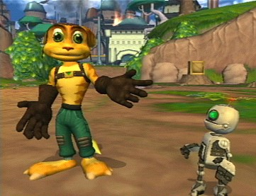
#99804 3 2005-09-12T01:00:43Z Sgt. Poptarts Ratchet and Clank.

#99881 21 2005-09-12T17:25:49Z Sgt. Poptarts 
Well I finally got fast internet,that was really funny and really nausiating.
#99912 234 2005-09-12T19:26:43Z Sgt. Poptarts ^Posted on Sep 12 2005, 06:50 PM
#100299 7 2005-09-13T19:08:00Z Sgt. Poptarts What am I smarter than?
Truth and Reconciliation
#100452 260 2005-09-14T02:15:13Z Sgt. Poptarts ^ Has a cool avatar.
#100604 5 2005-09-14T21:00:35Z Sgt. Poptarts Green Day- America Idiot.
Don't wanna be an American idiot.
Don't want a nation under the new media
And can you hear the sounds of the hysteria?
The subliminal mind fuck America.
Welcome to a new kind of tension.
All across the alien nation
Where everything isn't meant to be okay.
Television dreams of tomorrow.
We're not the ones who're meant to follow
For that's enough to argue.
Well maybe I'm the faggot America.
I'm not a part of a redneck agenda.
Now everybody do the propaganda.
And sing along to the age of paranoia
Welcome to a new kind of tension.
All across the alien nation.
Where everything isn't meant to be okay.
Television dreams of tomorrow.
We're not the ones who're meant to follow.
For that's enough to argue.
Don't wanna be an American idiot.
One nation controlled by the media.
Information age of hysteria.
Calling out to Idiot America.
Welcome to a new kind of tension.
All across the alien nation.
Where everything isn't meant to be okay.
Television dreams of tomorrow.
We're not the ones meant to follow.
For that's enough to argue
This is MASTER CHEIF's theme song.

#100605 78 2005-09-14T21:04:34Z Sgt. Poptarts Dont any of you want to flame me or MASTER CHEIF ?
#100824 76 2005-09-15T20:56:42Z Sgt. Poptarts This one girl that I like crys every time she hears my name. Shes really starting to tick me off, and the sad thing is that she really dosnt know me that well. I just want to beat the crap out of her so she will stop.
#102016 83 2005-09-19T01:36:48Z Sgt. Poptarts Could you make me a sig of Ninja Gaiden?
#102019 85 2005-09-19T01:43:21Z Sgt. Poptarts I posted somthing pretty stupid didn't I? Can you put my name in it and make it glow or something.
#102423 41 2005-09-20T22:59:06Z Sgt. Poptarts #102425 410 2005-09-20T23:16:17Z Sgt. Poptarts 10-10+10/10. I really like the mole rat thingy.
#102427 3 2005-09-20T23:18:39Z Sgt. Poptarts Eeyore:
Eggs
eggs
yummy
outstanding
refreshing
eggs
#4476 1 2005-09-21T01:03:15Z Sgt. Poptarts Just tell me your favorite kirby stuff such as powers, music, kirby canvas curse, and other stuff that you like about kirby and games involving him.
Favorite power: Crash.
Favorite Games: Kirby 64, Kirby Canvas Curse
Favorite Music: all of the music is awsome.
Favorite enemy:Lightning thingys.
Favorite Boss:Miracle Matter.
Favorite Moves: Copy,Death Blade(in Super Smash Bros).
Favorite ink types in canvas curse:Zebra, Bead, Tropic,Rainbow.
Enemies I hate: Every enemy that can't die or have powers copied.
#102564 279 2005-09-21T16:25:02Z Sgt. Poptarts
I shred it in my paper shredder.
#102866 22 2005-09-22T19:45:15Z Sgt. Poptarts Thats sad and quite disturbing.

#102937 359 2005-09-23T01:41:50Z Sgt. Poptarts ^ Xbox owner.
#104076 37 2005-09-27T16:00:22Z Sgt. Poptarts crap it wont let me post that picture.
#104366 1639 2005-09-29T01:50:56Z Sgt. Poptarts Ohh crap, I know that game,but I forgot the name. That game was so awsome, Ive been looking for it for ages. I think I have it. Is it Tyrian?
#104477 1645 2005-09-29T19:34:45Z Sgt. Poptarts Isn't it my turn to post a picture?
#104557 425 2005-09-30T01:57:47Z Sgt. Poptarts ^ Has more power on this forum than I do.
#4565 1 2005-09-30T02:07:00Z Sgt. Poptarts you basically post a picture that is made out of symbols,letters,etc.
I cant figure out how to use the quote box thing.(makes me feel kinda stupid). so you all can post them while i figure it out.
#104568 4 2005-09-30T02:19:33Z Sgt. Poptarts Hmm didnt work.
#104572 6 2005-09-30T02:24:54Z Sgt. Poptarts I tried to post a big word picture in the quote box thing but it jumbled it up.
#104574 11 2005-09-30T02:35:11Z Sgt. Poptarts Kirby Canvas Curse= 1% Evil 99% Good
Men=1%Evil 99%Good
Women=50%Evil 50%Good
Halo 2= 50%Evil 50%Good
#104577 8 2005-09-30T02:42:31Z Sgt. Poptarts Crap I tried it again and i still cant get it to work
#104756 109 2005-10-01T15:11:02Z Sgt. Poptarts I have ADD. In wa way its kind of fun to have,but annoying at times.
#104758 31 2005-10-01T15:14:38Z Sgt. Poptarts Quote
It's peanut butter jelly time, peanut butter jelly time, peanut butter jelly time
(Chorus:)
Where he at 4x
There he go 4x
Peanut butter jelly 4x
Do the peanut butter jelly, peanut butter jelly,
Peanut butter jelly with a baseball bat 2x
(Chorus)
Now, break it down and freeze 4x
(Chorus)
Now tic tac toe (uh-huh)
Tic tac toe (let's go)
Tic tac toe (you got it)
Tic tac toe (let's ride)
(Chorus)
Now, freestyle, freestyle, freestyle, freestyle, freestyle, your style 2x
Where he at 4x
There he go 4x
Peanut butter jelly time.
#104848 41 2005-10-02T01:29:44Z Sgt. Poptarts Why is it (in Diablo 2) that when i go save those guys who are stuck in that cage,I free them, then they use a scroll of town portal to get home,couldn't they have used it while they were in the cage?
#4585 1 2005-10-02T05:57:02Z Sgt. Poptarts When I play N for short to long periods of time, the sound cuts off, then if I close the game my entire computer restarts. Whats wrong?
#104976 5 2005-10-02T16:15:54Z Sgt. Poptarts It usally happens when theres alot of action going on.
#4617 1 2005-10-04T20:55:07Z Sgt. Poptarts Does anybody like this game? I sure do.Its awsome, especially the mapmaker.
#4618 1 2005-10-04T20:58:22Z Sgt. Poptarts Madness Interactive
I was wondering if anybody had ever played this game, its beyond cool.
Link fixed
#105764 127 2005-10-05T18:39:15Z Sgt. Poptarts could someone make me a sig with any of the following: halo,timesplitters 2,halo2,ninja gaiden,or unreal championship 2:the liandri conflict?
#105780 439 2005-10-05T22:23:15Z Sgt. Poptarts ^unregistered
#105815 1655 2005-10-06T00:25:53Z Sgt. Poptarts Sorry it SO long to find a picture,and it may be a little small but its the biggest picture i could find.
Here we go.#105821 33 2005-10-06T01:05:35Z Sgt. Poptarts Numa Numa (translated)
Quote
Miya-hee
Miya-hoo
Miya-ho
Miya-haha
<x4>
Hello [on a cellphone], greetings, its me, an outlaw,
I ask you, my love, to accept happiness.
Hello, hello, its me, Picasso,
I sent you a beep [cellphone signal], and Im brave [or strong],
But you should know that Im not asking for anything from you.
You want to leave but you dont want dont want to take me, dont want dont want to take me, dont want dont want dont want to take me.
Your face and the love from the linden trees,
And I remember your eyes.
<x2>
I call you [over the phone], to tell you what I feel right now,
Hello, my love, its me, your happiness.
Hello, hello, its me again, Picasso,
I sent you a beep [cellphone signal] and Im brave [or strong],
But you should know that Im not asking for anything from you.
You want to leave but you dont want dont want to take me, dont want dont want to take me, dont want dont want dont want to take me.
Your face and the love from the linden trees,
And I remember your eyes.
Miya-hee
Miya-hoo
Miya-ho
Miya-haha
You want to leave but you dont want dont want to take me, dont want dont want to take me, dont want dont want dont want to take me.
Your face and the love from the linden trees,
And I remember your eyes.
Sorry If im posting to many songs, Ill probably post more. But I just love to share stuff with people.
#105827 1657 2005-10-06T01:31:27Z Sgt. Poptarts Yep, I knew it would be easy.
#106241 25 2005-10-07T19:38:40Z Sgt. Poptarts This one time I was at lunch getting ready to sit down with my friends. I went to sit dow and one of the kids at the table wouldnt let me sit down so I said a few words to him. He stood up and started to push me back and told me to fight him. So I said no and sat down.Then he started to jack my jaw. I saw darkness for a split second. Then a teacher took me to the nurse. He was sent to jail I think.And this was a really good school. Plus I live In a really nice neiborhood with good people.
#106247 27 2005-10-07T20:30:22Z Sgt. Poptarts He was on probation. And to jack someones saw is to punch someones jaw really hard, and I think he was charged with battery.
#106251 413 2005-10-07T21:26:00Z Sgt. Poptarts Can you read my mind?
#106303 37 2005-10-08T03:20:41Z Sgt. Poptarts I'm happy I live in a peaceful place. Its like heaven.
#106313 42 2005-10-08T03:44:16Z Sgt. Poptarts Well, it just comes to show you. The world is messed up in places.
#106314 12 2005-10-08T03:46:08Z Sgt. Poptarts That was really cool. Maybe you can turn an enemy into Bowser or Super Mario.
#106400 627 2005-10-08T15:19:56Z Sgt. Poptarts 10/10
I love the colors red and black. Plus it looks cool.
#107351 4 2005-10-11T20:48:54Z Sgt. Poptarts Egypt
O-zone
or
Tatuu ( I think Tatuu is spelled right.
#107412 498 2005-10-12T01:51:46Z Sgt. Poptarts ^ ultra khl
#4718 1 2005-10-12T01:54:28Z Sgt. Poptarts Basically you say somthing in a foreign language and see if any body can decipher it.
Wie heisst du. Ich heisse Lars. Wie heisst du. Ich heisse Ursla.
#107424 3 2005-10-12T02:14:23Z Sgt. Poptarts I hope you wanted me to add another.
Alo, Salut, sunt eu, un haiduc,
Si te rog, iubirea mea, primeste fericirea.
Alo, alo, sunt eu Picasso,
Ti-am dat beep, si sunt voinic,
Dar sa stii nu-ti cer nimic.
Vrei sa pleci dar nu ma, nu ma iei,
Nu ma, nu ma iei, nu ma, nu ma, nu ma iei.
Chipul tau si dragostea din tei,
Mi-amintesc de ochii tai.
Te sun, sa-ti spun, ce simt acum,
Alo, iubirea mea, sunt eu, fericirea.
Alo, alo, sunt iarasi eu, Picasso,
Ti-am dat beep, si sunt voinic,
Dar sa stii nu-ti cer nimic
#107429 45 2005-10-12T02:24:29Z Sgt. Poptarts Yes, my reasons are as follows: They made Zelda,Starfox,Super Mario,Kirby,Metroid,And Donkey Kong.
They made the gamecube and are coming out with the Revolution.
Finally, Most of their games are easy.
If you were trapped in Twisted Metal Black or Doom 3 what would you do? Tell what you would do in both.
Man Im slow. oh well. answer both questions
#107430 501 2005-10-12T02:27:16Z Sgt. Poptarts ^^ Yes he was my cousin
^ Has a weird sig
#107438 503 2005-10-12T02:42:05Z Sgt. Poptarts Hes still my cousin. I typed wrong.
#107630 518 2005-10-12T19:48:05Z Sgt. Poptarts ^ The Juggler
#107632 18 2005-10-12T19:49:50Z Sgt. Poptarts Play
Doom 1
or
Doom 2
#107646 521 2005-10-12T20:13:14Z Sgt. Poptarts ^ kinda sad isnt it?
#4732 1 2005-10-12T20:20:59Z Sgt. Poptarts Basically you tell the worst or funniest way to bite the dust (die).
Hang Gliding at night on the fourth of July.
#4733 1 2005-10-12T20:57:01Z Sgt. Poptarts Basically you Post an idea, or persons name, and tel the pros and cons of them or it.
Jak25
#107669 22 2005-10-12T21:30:49Z Sgt. Poptarts Ninjas
chloraseptic spray or nyquil
#107687 27 2005-10-12T22:24:17Z Sgt. Poptarts chicken
Chloraseptic spray
or
nyquil
#107710 57 2005-10-12T23:43:09Z Sgt. Poptarts Yes, Astaroth in Soul Caliber 2
If you were a demon in Doom 3 which one would you be? Why?
#107990 45 2005-10-13T19:26:59Z Sgt. Poptarts flcl
Half-Life 1
or
Half-Life 2
#107992 37 2005-10-13T19:38:52Z Sgt. Poptarts Macadamien
Ants
Eraticate
Steroids
Through
Rectal
Outbursts
#107996 438 2005-10-13T19:47:08Z Sgt. Poptarts 10/10
Its ar kind of creepy eye that is staring into my soul.
But I really like it.
#107998 558 2005-10-13T19:50:21Z Sgt. Poptarts ^ Has a high kill count
#108023 2 2005-10-13T21:02:42Z Sgt. Poptarts Thats a really cool game.
#108143 23 2005-10-14T02:02:56Z Sgt. Poptarts I would probably drop dead.
#108146 573 2005-10-14T02:08:02Z Sgt. Poptarts ^ Could possibly be a killer.
#108149 34 2005-10-14T02:09:58Z Sgt. Poptarts --[=====>
^^^^^^^^
Sword.
#108331 436 2005-10-14T21:30:09Z Sgt. Poptarts If I watch the movie Supersize Me, will it make me sick?
#108408 591 2005-10-15T03:11:44Z Sgt. Poptarts ^Colorful.
#108686 603 2005-10-16T05:36:45Z Sgt. Poptarts ^Likes Naruto.
Thats show is cool.
#109377 654 2005-10-20T20:40:53Z Sgt. Poptarts ^^Sounds mad
^Strange
#109582 671 2005-10-21T22:07:57Z Sgt. Poptarts ^ A Shadow fan
I am to.
#109612 676 2005-10-22T02:18:23Z Sgt. Poptarts ^^Wants people to rate his pretty ignored maps.
^Wolf person
Im running out of ideas.
#109747 79 2005-10-22T23:24:44Z Sgt. Poptarts A beautiful dumb blond who thinks I am the best thing since sliced bread.
Whats your IQ?Why?
#109748 681 2005-10-22T23:27:05Z Sgt. Poptarts ^Is that the Cyber Demon from Doom 3 in your sig?
#109752 1694 2005-10-22T23:42:14Z Sgt. Poptarts This really isnt about this topic but I thought I would ask.Why cant I go to the IRC channel?
#109819 4 2005-10-23T02:05:17Z Sgt. Poptarts It kind of creeps me out that it might spread,chances are that it probably wont,but there may be a slight chance that it will.
#109838 637 2005-10-23T02:38:01Z Sgt. Poptarts I think its awsome. If only someone could make me a sig like that.
#109994 87 2005-10-23T17:35:44Z Sgt. Poptarts My little brother, he wont play timesplitters with me.
What would you do if you saw a beautiful girl/guy who you loved but you found out that they were a ticking time bomb?Did this make sense?Explain.
#110117 710 2005-10-24T01:49:57Z Sgt. Poptarts ^Harry Potter reader.
#110120 55 2005-10-24T02:27:31Z Sgt. Poptarts Personally I think these dreams are making some of you sound insane. Then again my dreams would make me sound insane if I posted them.
#110249 4 2005-10-24T20:19:58Z Sgt. Poptarts That was really funny,it reminds me if Conker:Live and reladed.
#110250 20 2005-10-24T20:23:34Z Sgt. Poptarts Hes crazier than my best friends mom, and shes pretty crazy, this one time my friend was sick so she gave him every type of medicine until he was better, I think thats why he drinks Nyquil now. I think shes bypolar.
#110720 3 2005-10-27T01:27:02Z Sgt. Poptarts MASTERCHEIF!
Pros: A good cousin.
Cons: Really dumb.
#110721 715 2005-10-27T01:28:48Z Sgt. Poptarts I wish I had the injector gun off of Timesplitters 3.
#110898 98 2005-10-27T19:07:08Z Sgt. Poptarts I own them all.
If you had the injector gun off of Timesplitters 3,what would you do with it?
#111126 8 2005-10-28T17:10:12Z Sgt. Poptarts That game is really cool, but it looks like Quake. If anyone sees A Sgt.Poptarts online,well,hen that is me.
#111140 31 2005-10-28T18:31:55Z Sgt. Poptarts I chose Zero because I love all of the megaman games, but the Zero games are the best. Zero can kill anybody.
#111185 337 2005-10-29T00:13:38Z Sgt. Poptarts
Neither is that tornado...
#111488 23 2005-10-30T19:11:09Z Sgt. Poptarts I made a server called Metanet Forums Rock, I f you all see that then you may want to join it.
#111579 25 2005-10-31T02:25:09Z Sgt. Poptarts Maybe we could make a team deathmatch and make a list of who will be on certain teams.
#111818 729 2005-11-01T23:03:06Z Sgt. Poptarts Granted,but you flip and land on a guard rail and break your back.
I wish I could go to matercheif's house (My cousin,not the Spartan in Halo.)
#111868 739 2005-11-02T03:18:28Z Sgt. Poptarts Granted, Now they aall flame me.
I wish I rocked at playing hackey-sack.
#111961 56 2005-11-02T22:00:51Z Sgt. Poptarts How about we have a contest on how high our two player high scores are. I gets kind of challenging while playing two player with two hands.
#111972 58 2005-11-02T23:10:39Z Sgt. Poptarts Well its actually called Double Play mode, but its still multiplayer. If you dont know how to get to it then push up or down until you get to it at the title screen. its actually quite fun to play alone although you are linked together so if one of you dies you both die.I just found out that I can use my recoil pad for my computer to play every kenta cho game, that makes me feel like Im playing the PS2.
#112000 3 2005-11-03T02:04:34Z Sgt. Poptarts I would say Ratchet: Deadlocked. I havnt played the game but the others rock so it probably will to.
#112605 4 2005-11-05T15:38:50Z Sgt. Poptarts The best thing about marching band is that I dont march.
#112609 37 2005-11-05T15:53:11Z Sgt. Poptarts Ill be playing nexuiz right now, just look for a server called: Metanet Forums Rock.
My name is Sgt.Poptarts.
#112733 8 2005-11-06T02:49:50Z Sgt. Poptarts Ive had that happen before, I left the game on for 3 hours and my time went down to like -7000 seconds.
#112930 14 2005-11-06T19:27:12Z Sgt. Poptarts Dragostea din tei.by O-zone
#112932 110 2005-11-06T19:30:25Z Sgt. Poptarts Ye...no.
Is Mastercheif my retarded cousin?Should I go visit him?
#112957 811 2005-11-06T20:57:06Z Sgt. Poptarts ^Has 281 posts
#113026 18 2005-11-07T01:29:29Z Sgt. Poptarts Aye.
#113036 22 2005-11-07T01:48:33Z Sgt. Poptarts I would double all of the electronics in my house.
And just for fun, my GPA is 1.7, but theres a very logical reason for that.
#113118 1757 2005-11-07T21:19:30Z Sgt. Poptarts Looks like Minesweeper.
#113129 114 2005-11-07T23:49:17Z Sgt. Poptarts 
This is mine.I think it look really high tech.
#113132 1762 2005-11-08T00:05:18Z Sgt. Poptarts 
Here,figure this game out.
#113344 119 2005-11-09T02:56:27Z Sgt. Poptarts I updated my Desktop.

#113480 41 2005-11-10T00:43:18Z Sgt. Poptarts I might try it.Or I might not, It depends on whether I am going to play other games and try to beat at least One column in N.
#113481 831 2005-11-10T00:44:12Z Sgt. Poptarts ^ Top 40 mapmaker on NUMA.
#113482 119 2005-11-10T00:49:06Z Sgt. Poptarts Yes,It is true.
Should I post a link to tons of cool Fonts including the font,AvQuest?Should I kill some Defenceless people in Diablo 2?
#113483 21 2005-11-10T00:50:43Z Sgt. Poptarts Lucy in the sky with Diamonds By The Beatles.
#5103 1 2005-11-10T02:57:17Z Sgt. Poptarts Heli attack 3
Has anybody ever played this game?
#113585 6 2005-11-10T19:59:38Z Sgt. Poptarts #113632 125 2005-11-10T22:01:16Z Sgt. Poptarts Darn,I can only name 8 of them.
Doom 3
Fable
Unreal
Mozilla firefox
soldat
MS Paint
Grand Theft Auto
And I think one of them is Neverwinter Nights.
#5113 1 2005-11-10T22:06:14Z Sgt. Poptarts Ok, In this you have to post a picture of all of your computer games. Its Sort of like Post Your Desktop.

#113688 127 2005-11-11T02:44:11Z Sgt. Poptarts Freezer
Proximity mine or Sticky mine.
Crap posted to late, Nevermore.
Now answer mine.
#113695 777 2005-11-11T02:59:34Z Sgt. Poptarts Granted but its the evil monkey in Chris Griffens closet and it kills you.
I wish I had a Beautiful girlfreind who like me for who I am a,d is also smart.
#113835 42 2005-11-11T14:43:23Z Sgt. Poptarts Rent a basement apartment in venice.
Get a tatoo of someone your height.
Moon some canibles who have yet to be fed.
Tell your girlfreinds burly dad "Bet you five bucks I nail her."
^Thanks to the Bob and Tom show.
#114191 6 2005-11-12T17:35:46Z Sgt. Poptarts I just started playing te game yesterday and I have to say that that game is awsome. Last night I played it from like 3:00 P.M. to 5:00 A.M. And I rock with the sword. Also my name is Sgt_Poptarts.
And now I cant log on. Whats up with that.
#114401 14 2005-11-13T04:03:23Z Sgt. Poptarts James and the giant peach .
#114408 847 2005-11-13T04:07:35Z Sgt. Poptarts ^Has a cool sig.
#114630 20 2005-11-13T19:55:48Z Sgt. Poptarts Finding Nemo.
#114751 30 2005-11-14T01:30:41Z Sgt. Poptarts I dont have a sex life, im just trying to think of funny stuff.
Duce Bigalow Male Jigalow (not sure how to spell it.).
#114803 2 2005-11-14T03:24:42Z Sgt. Poptarts My dad is upsessed with it, I probably would be to if I get to ever play it.
#114810 12 2005-11-14T03:30:03Z Sgt. Poptarts This game rocks, It makes me want to play Wolfenstein on Xbox Live. And guess what my name is online. By the way, my method of killing everybody is to call in air strikes all the time,It works quite well.
#114968 1784 2005-11-14T19:56:03Z Sgt. Poptarts Age of Empires?
#114973 25 2005-11-14T20:01:59Z Sgt. Poptarts I have a purpose in life, Its to Kill everybody in Halo 2, Doom 3, Wolfenstein, Gunz, and other online games in which I rock at playing.
#115028 45 2005-11-14T23:10:07Z Sgt. Poptarts Tremors.
#115040 1787 2005-11-14T23:49:54Z Sgt. Poptarts Age of Kings...Age of Wonders?
#115046 17 2005-11-15T00:01:05Z Sgt. Poptarts I still dont know how to get into IRC.
I havnt beaten any columns in N yet.
Mastercheif is my cousin. (you all should know that by now.)
I am the ninja's father.
#115278 860 2005-11-15T21:33:42Z Sgt. Poptarts Has Trunks in his avatar.
#115577 10 2005-11-17T03:41:00Z Sgt. Poptarts That Is the reason why I have 2 Samuari swords a blow dart gun and a whip, They're for protection, my brother has two daggers that lock into your skin and Ninja stars. But my school is a nice comfy place to be, I have also been to a school like yours Juggler, it wasn't as bad but it was still bad.
#115864 15 2005-11-18T20:18:49Z Sgt. Poptarts This is kinda off topic of this game but for another game, Its kinda on topic of what maestro just said though, anywho I was in gym and I was staring at the bleachers and I kept thinking that I was playing Gunz, It was weird, Then I was playing Dodgeball and thought I was Playing Halo 2 and N mixed together. In my eyes the dodgeballs were missles and I was the ninja, I was only hit once, but that was because I didn't jump high enough. Plus I think of my life as a game,Its really weird.
#116012 97 2005-11-19T04:55:17Z Sgt. Poptarts 80.9/100
#116015 63 2005-11-19T04:57:01Z Sgt. Poptarts Dont step on the grass or ill kick your a$$. (I still dont like to curse much)
#118412 59 2005-11-27T05:55:48Z Sgt. Poptarts Freddy got Fingered.
#118816 44 2005-11-28T22:11:16Z Sgt. Poptarts I know how to draw one of those triangle illusions, I draw them quite well nowadays.
#118821 8 2005-11-28T22:29:15Z Sgt. Poptarts How about my levels, you can all use my tilesets and rate my maps, it would make me proud.I also have a tileset that would make an excellent hard map, and every seems to think that I dont exist.
#119118 65 2005-11-29T20:55:49Z Sgt. Poptarts Poke'mon the movie.
or
Stuck on you.
or
Osmosis Jones.
#119157 101 2005-11-30T00:03:19Z Sgt. Poptarts Is there a link so I can download it?
#119192 114 2005-11-30T01:49:43Z Sgt. Poptarts CHINESE SAYINGS:"War not determine who right. War determine who left." "It take many nail to build crib, but one screw to fill it." "Man who drive like hell, bound to get there!" "Boy who go to bed with sexual problem wake up with solution in hand"
#119677 803 2005-12-02T02:41:17Z Sgt. Poptarts Granted, but the FBI and the MIB Dissect you to see what screwed up organ made you vomit golden eggs.
I wish I had Samus' Armour.
#120168 9 2005-12-03T20:27:47Z Sgt. Poptarts This game is really cool, I like the weapon Game Over in the 8 bit-Warfare.
#120228 250 2005-12-04T02:13:38Z Sgt. Poptarts 99/100
I love the monkey inside Chis' closet.Plus your pretty cool.
#120483 503 2005-12-05T00:35:54Z Sgt. Poptarts 9/10
Moo.
#121176 15 2005-12-07T20:47:28Z Sgt. Poptarts We Were Jelously Deprived.
MIB (Men in Black)
#121375 517 2005-12-08T21:35:21Z Sgt. Poptarts 9/10
Its a skeleton thingy, me likey.
#121524 1848 2005-12-09T17:32:24Z Sgt. Poptarts Spyro
Jak and Daxter
Vexx
#121678 34 2005-12-10T04:38:35Z Sgt. Poptarts Painful Needle Gun
F.E.A.R.
#121679 955 2005-12-10T04:43:11Z Sgt. Poptarts ^avatar was my Computer Wallpaper.
#121756 961 2005-12-10T14:30:57Z Sgt. Poptarts ^Posted on Dec 10 2005, 02:13 PM.
#121770 17 2005-12-10T15:07:48Z Sgt. Poptarts I think Ill try it, this should be interesting.
#121772 40 2005-12-10T15:19:03Z Sgt. Poptarts Bad Mouthing Women
CSI (Crime Scene Investigation)
#121977 48 2005-12-11T02:36:26Z Sgt. Poptarts KFC (Kentucky Fried Chicken)...Yum.
#122069 986 2005-12-11T12:50:44Z Sgt. Poptarts ^ Has beaten 2 columns of N.
< Hasnt beaten any columns.
#122092 36 2005-12-11T15:55:34Z Sgt. Poptarts Heres my map.
Spiralization#122167 826 2005-12-11T19:27:17Z Sgt. Poptarts Granted, but I fill it up with somthing.
I wish that whoever granted this wish could not corrupt it, and would corrupt their own.
Granted but you cant reply anymore.
I posted to late so try my wish.
#122222 830 2005-12-11T23:52:18Z Sgt. Poptarts Granted, but you fail every test and are now stupid.
I wish I was Harry Potter.
#122257 56 2005-12-12T02:14:11Z Sgt. Poptarts I cant create playable levels worth a crap, so I create tilesets, which by the way are good.
I dont rate maps because I hate rating stuff down, so I rate them up.
Macs are awsome.
I rock at halo 2 now that my internet rocks.
I want a custom title, like Tileset maker, or Tileset God.
I dont like a certain Moderator at times.
#122273 40 2005-12-12T03:24:41Z Sgt. Poptarts Why isnt my map on the front page of this?
#122409 308 2005-12-12T21:31:14Z Sgt. Poptarts 97/100
you make cool sigs and stuff and you like DBZ.
#122442 994 2005-12-12T22:48:02Z Sgt. Poptarts ^Must know that that movie is in my sig.
#122653 9 2005-12-13T20:43:04Z Sgt. Poptarts Personally, I dont care what we say, I can say whatever I want, and I say Merry Christmas.
#122793 859 2005-12-14T03:00:40Z Sgt. Poptarts Granted, but it backfires.
I wish ther were no hackers on GunZ.
#122969 48 2005-12-14T21:07:38Z Sgt. Poptarts Well, I hope my maps look good. By the way, I kind of want to have a contest with el_umi In who can make the best tlieset.
#123208 10 2005-12-15T19:58:58Z Sgt. Poptarts I wish I was on there, although my maps are more artsy then playable.
#123770 4 2005-12-17T04:11:55Z Sgt. Poptarts Yes I play this game...sometimes. I was a lvl 68 Palidan but I got tired of killing everything with my fist of the gods, I think thats what its called, it was a lvl 21, I slaughtered everyone. But I got bored so I quit.
#124173 6 2005-12-18T05:16:18Z Sgt. Poptarts #124180 77 2005-12-18T05:25:36Z Sgt. Poptarts Frosty the Snowman, Rudolf the Red-Nosed Reindeer.
#124199 68 2005-12-18T07:01:15Z Sgt. Poptarts Id have to say, my xbox.
Would you rather be an Omega Metroid, or Metroid Prime?
#124200 896 2005-12-18T07:27:04Z Sgt. Poptarts Granted,but it turns bad.
I wish I knew Alchemy.
#124349 1052 2005-12-18T16:19:17Z Sgt. Poptarts ^Someone has to his saybox.
#124878 345 2005-12-19T22:21:12Z Sgt. Poptarts Holy Crap that was fast. I really suck at the game, I can only get to the doctor, and I have the Nemises,although i want the spur, And I play the game wtih a playstation like controller,so it gets really easy after a while.
#124887 13 2005-12-19T22:25:27Z Sgt. Poptarts Its so fun to gain levels by facing baal, but I only play it online. And I love to slaughter the Hell Bovines, they make excellent hamburgers so tender and juciy, sorry Im hungry right now.
But My favorite boss to face is Diablo, whats everybody elses?
And I beat Diablo with a lvl 28 assassain, man, i love sentries.
#124948 16 2005-12-19T23:48:00Z Sgt. Poptarts In a way, rocket turrets may help you in a way, they tell you to run away from them, and they allow you to beat the level faster(if your fast enough that is). And furthermore, they allow you to dodge them and look cool while doing it, as long as they dont hit you.
#124958 1081 2005-12-20T00:02:39Z Sgt. Poptarts ^Has a cool avatar and sig and needs to make me some.
<makes cool levels.
<wants a custom title.
#125414 1093 2005-12-21T01:22:40Z Sgt. Poptarts That is me above. How did I get logged out?
#126165 74 2005-12-23T06:28:16Z Sgt. Poptarts heres the map that you have yet to add to the front page. (Im not trying to be hateful, just catching your attention)

.
Whoops,
Phobos Anomaly#126168 21 2005-12-23T06:33:39Z Sgt. Poptarts Sadly, almost every game Ive played is better than N, the reason? It screws up my computer and I suck at it.
Some games are:
DiabloII
Wolfenstein: Enemy Territory.
Doom3
Painkiler
Warcraft 3
Starcraft
Every single Unreal Ever made
Cave Story
Torus Trooper
I could go on forever.
#126171 16 2005-12-23T07:02:11Z Sgt. Poptarts I like N Art, dont laugh because Im special.
#126174 45 2005-12-23T07:05:58Z Sgt. Poptarts I use the up arrow because I use my right hand to control and my left hand to beat my computer when I die, It helps.
#126195 23 2005-12-23T08:50:30Z Sgt. Poptarts The game messes up my computer, and I suck at it,but Once I get better, That will all change.
#126381 1130 2005-12-23T20:53:49Z Sgt. Poptarts ^kills People.
#126397 3 2005-12-23T21:23:03Z Sgt. Poptarts Are you using WinRaR to unzip it? cause you need that to play it.
Im gonna try to beat hell, I just restarted the game.
#126483 88 2005-12-24T04:20:23Z Sgt. Poptarts The Ring,
The Exorcist of Emily Rose.
#126485 8 2005-12-24T04:30:34Z Sgt. Poptarts I just started the game over, although I didnt beat it the first time, Im at Grasstown, trying to turn the power on. I'm quite good at the game,but I didnt beat it, thats pretty weird.
#126488 92 2005-12-24T04:34:24Z Sgt. Poptarts "Heres a friendly reminder, Dont get married".
#126658 2 2005-12-24T16:13:01Z Sgt. Poptarts Could you make me a sig tag, I would be pretty happy if you made one.
If you could then try to put the following in it:
Halo2
Half-Life 2
N
PSP
DS
PS2
XBOX
Gamecube
Zelda.
#126737 1155 2005-12-24T22:59:18Z Sgt. Poptarts ^Has an avatar with a monkey pointing at me and staring into my soul.
#126791 22 2005-12-25T03:11:58Z Sgt. Poptarts I predict that I will put my new Air pistol to good use.
#126793 4 2005-12-25T03:21:17Z Sgt. Poptarts I have the one on the xbox, but mine is hacked from using an Action Rplay. I love The Rivet Gun, and the Control Tether. I think every game needs a Control Tether. And before I used the Action Replay I was stuck on the level called, They Live, Stupid Zombie Bots.
#126798 22 2005-12-25T03:37:22Z Sgt. Poptarts Question: If you were ANY character,enemy, and boss, which ones would you be? What would be your weapon of choice?
#126887 815 2005-12-25T18:42:06Z Sgt. Poptarts 10/10, Hey its cheese, and cheese rocks.
#126899 1160 2005-12-25T20:32:06Z Sgt. Poptarts ^Purple,or maybe neon purple,with a splash of pink.
#126927 4 2005-12-25T23:20:14Z Sgt. Poptarts I dont get to much either, my desktop looks trippy, but not N.
#126977 63 2005-12-26T03:06:40Z Sgt. Poptarts The worst way to die would have to be getting infeted by all of the creepy stuff in Inuyasha, that or being killed by the wind scar.
#126979 6 2005-12-26T03:08:32Z Sgt. Poptarts Yep, I told the enemies to stop doing drugs,but did they listen? No.
#127079 1166 2005-12-26T15:25:47Z Sgt. Poptarts ^Is a Christain. So am I
#127187 1181 2005-12-27T03:56:56Z Sgt. Poptarts ^Made N trippy with Winamp.
#127295 435 2005-12-27T13:57:15Z Sgt. Poptarts You all have yet to see me, and you all might not see me

#127335 286 2005-12-27T17:38:22Z Sgt. Poptarts Lets see.
Im 14 yrs old.
Im a Freshman in highschool.
I love Ratchet & Clank.
I love Jak & Daxter.
My cousin is Master Cheif A.K.A Jak25.
I spend most of my time sitting on my butt playing games.
I love Destruction and Destroying things.
Im a boy.
Im also Snuggletummy.
I talk alot.
I dont play N as much as I used to.
In a way, Jak & Daxter and Ratchet & Clank are better than N.
I love poptarts.
My entire family owns every single game consol ever made.
My uncle used to work with Nintendo.
I live in Indiana, of the USA.
In IRC I type random stuff.
Fo shizzle dizzleritzzletinstintzzle.
#127628 1210 2005-12-28T14:34:21Z Sgt. Poptarts ^ Defeated Freiza.
#129392 90 2006-01-03T03:27:35Z Sgt. Poptarts Fantastic 4
BloodRayne
#130004 1274 2006-01-05T22:16:13Z Sgt. Poptarts ^ 8 maps this time. Check it out!
#130025 1891 2006-01-05T22:48:56Z Sgt. Poptarts GunZ?
TimeSplitters 2?
#130067 971 2006-01-06T02:33:48Z Sgt. Poptarts Granted, it hits you in the nose instead.
I wish I had the biobliterator off of Ratchet and Clank Up Your Arsenal (and Im a robot to so dont get any ideas...not like you would.)
#130302 65 2006-01-07T00:30:43Z Sgt. Poptarts Argry Annoying Retarded People
BYOB
#130368 73 2006-01-07T03:46:04Z Sgt. Poptarts Irrectial Pondering Breadcrumbs.
RAC (Ratchet and Clank)
#130524 986 2006-01-07T17:43:32Z Sgt. Poptarts Granted, but remember, your not explosive proof, and thus a Heat seeking missle destroys you.
I wish I was Daxter.
#130563 988 2006-01-07T21:33:47Z Sgt. Poptarts Granted, but a Deleveler delevels you to lvl 2.
I wish All Delevelers were gone.
#133436 1905 2006-01-18T15:54:50Z Sgt. Poptarts Its Sonic Adventure DX.
#133437 53 2006-01-18T16:57:48Z Sgt. Poptarts Emeraculus27, Sgt.Poptarts, Jack25 ?
#133439 1031 2006-01-18T17:00:53Z Sgt. Poptarts Granted, but he hates you for making him go back.
I wish I was From England.
#133440 13 2006-01-18T17:04:40Z Sgt. Poptarts 1. All rules must apply to themselves
2. All rules must be more than eight words long.
3. All rules must include at least one of each vowel other than "Y".
4. All rules must start with the 3 words "All rules must"
5. All rules must not be listed next to any prime numbers. (Excepting above rules)
6. All rules must have a loophole and/or exclusion, unless their number is greater than and divisible by 6, or less than 6.
9. All rules must be listed beside a number that is odd (and composite, as per rule 5), unless the rule limits the use of a specific consonant in future rules.
10. All rules must only be made by yellow blinking smilies, unless you are a farkle gub gub.
23. (All rules must) every rule that is capitialized or contains smilies is deleted immediatly, furthermore
at least 3 wrdos mtsu be msislpelde.
#133842 42 2006-01-19T23:49:47Z Sgt. Poptarts 1. All rules, on their own, must not be overly difficult to comply with.
2. All rules must contain an odd number of words
3. All rules after this one may not start with the words "All rules"
4. Every rule must make sense.
5. Each following rule must be numbered 'five'
5. Following rules must have 10 syllables.
6. The next rules must have the word, "the" in them.
7. the next rules must be different colours.
8. The next rule must break all of the rules at once.
9. All rules cannot overlay the apple which is after the banana plus one times apple. H
#133863 45 2006-01-20T00:47:41Z Sgt. Poptarts 1. All rules, on their own, must not be overly difficult to comply with.
2. All rules must contain an odd number of words
3. All rules after this one may not start with the words "All rules"
4. Every rule must make sense.
5. Each following rule must be numbered 'five'
5. Every rule after this one may not use the word "must"
5. Every rule has to be typed with your elbows.
6. FR vcvhtyhjijugsll; b jol afO)' h (stupid elbows)
TRANSLATION: Every rule must be typed using your tounge.

#134440 1063 2006-01-21T23:17:23Z Sgt. Poptarts Granted, but it smells like Dead animals, Rotting Flesh, and Sulfur.
I wish that if this wish is corrupted then all wishes that have been previously corrupted will be reversed causing them to not be corrupt.
#134843 604 2006-01-22T23:59:48Z Sgt. Poptarts Why are they paramecia?
7/10 kinda dull
#134845 907 2006-01-23T00:06:57Z Sgt. Poptarts 9/10
ghosty
#135539 916 2006-01-24T22:00:12Z Sgt. Poptarts 6/10 Its alright.
#135541 1399 2006-01-24T22:04:39Z Sgt. Poptarts ^ Has funny custom titles
#135618 1406 2006-01-25T01:09:53Z Sgt. Poptarts ^^^^^^Yes I love poptarts, hence the name sgt.poptarts
^Also not a mod
#135940 19 2006-01-26T00:54:03Z Sgt. Poptarts ^13
#135948 1125 2006-01-26T01:11:52Z Sgt. Poptarts Granted, but another sniper shot you because you sniped a sniper.
I wish I was a mix between a Nuke and an Atom Bomb.
#136002 25 2006-01-26T02:59:15Z Sgt. Poptarts ^16+1-1+1-1
#136451 110 2006-01-27T21:51:50Z Sgt. Poptarts Hoodwinked
#136499 68 2006-01-28T01:18:35Z Sgt. Poptarts 14?^
#137239 1918 2006-01-29T22:40:34Z Sgt. Poptarts Fable!
#137337 1497 2006-01-30T01:54:53Z Sgt. Poptarts ^ Is pointing at me for some strange reason.
#137341 136 2006-01-30T02:02:55Z Sgt. Poptarts WARNING EXPLICT LANGUAGE:
Suck my Cock you stupid cock sucking ass whores.
Die you Dick Ass Bitch Cock.
You Cock sucking Bitch Fucker.
You dick sucking dousche bag.
Go Fuck your mom you Asswipe.
You cock sucking butt fuckiung slut fuck.
-----------------------------------------------------
I feel better now.
#137344 126 2006-01-30T02:10:21Z Sgt. Poptarts ^Most Likely to become a folder.
#137346 3 2006-01-30T02:14:20Z Sgt. Poptarts I logged on yesterday and it said that I havent been on in 121 days.
But other than that, Im:
Lvl 46
Icydragon 5
dirt poor
#137517 1920 2006-01-30T20:11:33Z Sgt. Poptarts I would reveal more, but then you would know the answer.
[img=http://img381.imageshack.us/img381/5062/123210so.th.jpg][/img]
Sorry, my computer is acting stupid, so click the link to see the picture.
#137527 151 2006-01-30T20:26:00Z Sgt. Poptarts ^Most likely to Morph into a wolf and play games
#137532 7 2006-01-30T20:32:34Z Sgt. Poptarts I play in bera I might get on more, I am Sgt.Poptarts, I think, you may have to try different combonations of the name, or I will get back to you and tell you. I am a wizard. My bro plays to, he is Genpoptarts, he is an archer.
#137558 1923 2006-01-30T21:35:02Z Sgt. Poptarts Nope, not Doom 3.
#137566 9 2006-01-30T21:40:21Z Sgt. Poptarts Yes, unless you want to buy very special items.....but other than that its completly free.
But you have to use Internet Explorer to access the website.
#137650 1928 2006-01-31T01:11:29Z Sgt. Poptarts Yeah hes right, My computer is acting stupid, Im starting to kick it right now, but Im about to go Ninja Gaiden style on it with my samuari sword.
#137886 2 2006-01-31T21:01:24Z Sgt. Poptarts Im a love machine.
#137887 11 2006-01-31T21:04:07Z Sgt. Poptarts Ok, Ill add you, maybe you van help me as Im only lvl 15.
And here is the website.
http://www.mapleglobal.com/#138012 8 2006-02-01T00:44:29Z Sgt. Poptarts I wouldnt push it, all online games would go bye bye. But I bet some stupid moron would pass by and just happen to push it.
#138013 5 2006-02-01T00:45:29Z Sgt. Poptarts Huge Ass.
#138016 178 2006-02-01T00:54:02Z Sgt. Poptarts ^most likely to have a funky name.
#138017 53 2006-02-01T00:55:09Z Sgt. Poptarts Maybe Duck Hunt.
#139208 29 2006-02-04T00:32:09Z Sgt. Poptarts I love this game, although it locks up sometimes, but its Awsomwe!
Character Description:
Ship: B-Gear
Lvl: 13
Name: snuggletummy
Alliance: BCU
Mission Im On: 15 (I think)
Weapons: (Iforgot the names a little bit so bear with me)
Wolf Sniper (Missles): max locks: 4 Missles fired: 8
Gattling gun thing. (the one in the shop worth 14,000.)
Friends: Blazeraider, GamingWolf, Luminaflare.
Tip for everyone: Push F1 for controls.
Requests: More friendsSo if you get the chance then add me, please.
#139333 32 2006-02-04T06:41:39Z Sgt. Poptarts Maybe if we get enough people, we can make the MetaBrigade, we will rule over all.
#140016 85 2006-02-05T23:40:50Z Sgt. Poptarts Sirius
A new map...from me.
#140064 1553 2006-02-06T01:25:59Z Sgt. Poptarts ^Has yet to change his avatar. (not saying you should).
#140321 9 2006-02-06T20:58:19Z Sgt. Poptarts I cant get in either. I need help with some work and you all are smarter than my family.
#140410 235 2006-02-07T00:51:41Z Sgt. Poptarts ^Most likely to sketch.
#140411 1572 2006-02-07T00:53:05Z Sgt. Poptarts ^Flash Developer.
#141446 14 2006-02-09T23:26:04Z Sgt. Poptarts I love halo 2, My name online is ICYDRAGON5, so if you want a friend then add me.
I know way to many glitches and I can get out of most of the levels.
#141858 33 2006-02-10T21:49:17Z Sgt. Poptarts I know just about every glitch ever made....but mainly super jumps, bounces and pressure jumps. So if you need help then add me to your friends list and ask me.
#141859 81 2006-02-10T21:50:35Z Sgt. Poptarts How about the MetaBrigade?
#142047 33 2006-02-11T03:33:00Z Sgt. Poptarts I want a cool sig.
Can you have it include the following:
Halo2
My name in the bottom left in red and if you can then try to make the font AvQuest.
Also I would like it to say somthing like Sgt.poptarts, taking over the world one poptart at a time. And I think I would like a Grunge style Sig.
If you can make that then Thank you Very much.
Also, I like your style of sig things to, so dark.
#142051 51 2006-02-11T03:36:55Z Sgt. Poptarts ^Cracker Hacker.
#142063 679 2006-02-11T03:48:31Z Sgt. Poptarts 10/10 Creepy...Me likey.
Note: My avatar is my avatar off Halo 2, The blue is supposed to be a dragon, and the white is supposed to be dragon teeth.
#142064 300 2006-02-11T03:49:53Z Sgt. Poptarts ^Most likely to fart.
#6806 1 2006-02-12T00:25:45Z Sgt. Poptarts I was just wondering if any of you ever play this game.
http://www.ea.com/official/battlefield/1942/us/home.jsp
Is that better?
#142431 1645 2006-02-12T00:29:09Z Sgt. Poptarts Rated my avatar a 3.5/10, which sucks.
#142432 31 2006-02-12T00:36:54Z Sgt. Poptarts -For every enemy you touch you unlock a new flavor.
-If you stick your tounge in the light socket your computer is hooked up to you will be sucked into the computer and be able to control the ninja any way you want.
-If you stop playing N we will send you a gift basket.
#142455 1647 2006-02-12T01:38:01Z Sgt. Poptarts ^Typed in fetus on ebay and found a fetus dispenser.
#142756 7 2006-02-12T21:29:42Z Sgt. Poptarts Personally I like classic games, and it is a classic, that came with a map maker, a mod maker, and 3 expansions. All for only $29.77
#142773 306 2006-02-12T22:33:43Z Sgt. Poptarts ^Most likely to pwn random people.
#142774 5 2006-02-12T22:34:29Z Sgt. Poptarts hosguohjgodbngidngjojosfoswnvo hhyigyibgiobgmohiofvnvign v gzdfjkdfjk;bvndfjkgnfifhvmiu8vtiui9ghdfuighdfuighdfuihdfuighdgjfgjfgkfg
gfjkgjlfjjgkfjdlgjdfgl....this is stupid...dghijdljdlhjdgh.
#142805 1652 2006-02-12T23:29:19Z Sgt. Poptarts ^Looks Insane.
#142855 47 2006-02-13T01:14:20Z Sgt. Poptarts your right, that is your best screenshot, but it was also a triple post.
On halo 2 I am litterally the master of grenades, I can Calculate the angles of my throws thus allowing me to kill anybody I want to at the push of a button.
#143600 1664 2006-02-14T20:26:31Z Sgt. Poptarts ^wants us to add the bunny to our sigs.
#143602 309 2006-02-14T20:28:05Z Sgt. Poptarts ^ most likely to have a brown thin in his sig. (isnt tht one of those clouds from space)?
#143611 100 2006-02-14T20:33:10Z Sgt. Poptarts Chun Li!
Cortana or Master Cheif?
#143649 1666 2006-02-14T21:12:07Z Sgt. Poptarts ^Why yes it is.
#143651 311 2006-02-14T21:13:08Z Sgt. Poptarts ^Most likely to not realize that I already play it online and I know every glitch made.
#143697 1016 2006-02-14T22:18:41Z Sgt. Poptarts 6/10
Its kinda dull.
#143698 685 2006-02-14T22:20:54Z Sgt. Poptarts 7/10
Very blue and I like blue.
#143818 49 2006-02-15T00:27:26Z Sgt. Poptarts If anybody wants to know any glitches, just add me to your friends list and Ill have my friends and I help you fugure out some cool glitches.
#144333 4 2006-02-16T02:21:19Z Sgt. Poptarts *cough* Probably not.*cough*
#144669 318 2006-02-16T22:23:54Z Sgt. Poptarts ^Most likely to be right behind them.
#144687 32 2006-02-16T23:05:16Z Sgt. Poptarts Your mom is so stupid that she forgot the recipe to make ice cubes.
Your mom is so stupid she got locked in McDonalds and lost 150 pounds.
#144694 70 2006-02-16T23:19:34Z Sgt. Poptarts ^(correct me if Im wrong). Captain America.
#144724 95 2006-02-17T00:28:57Z Sgt. Poptarts I also havent played it in a while, so I might play it more. Which is a good thing.
#145395 52 2006-02-18T20:33:33Z Sgt. Poptarts Just in case anybody wants to know what the online symbols above level 43 are...here they are.

Oh and if you want to add me to your friends list then add: ICYDRAGON5.
#145446 1672 2006-02-18T22:20:59Z Sgt. Poptarts ^colorful
#145540 322 2006-02-19T04:13:17Z Sgt. Poptarts ^Most likely to be the only home dawg who gets arrested by the fuzz, Foshizzle ma nizzle fa wizz shizz nizzle, word. peace Im outie.
#145553 325 2006-02-19T04:28:31Z Sgt. Poptarts ^Most likely to kill Mario.
#145558 74 2006-02-19T04:29:25Z Sgt. Poptarts ^Homie G.
^^And the cat is Master Cheif in Halo 2 tea bagging someone.
#145562 1029 2006-02-19T04:31:59Z Sgt. Poptarts ^10/10
It has the Blargh off Super Mario so he beats everybody.
#145774 1031 2006-02-19T14:28:40Z Sgt. Poptarts ^6/10
would be better if it didn't take up half of the page.
#145920 35 2006-02-19T21:56:15Z Sgt. Poptarts Quote
'Ermacrules'
anagrams to
'Cruel smear.'
Quote
'Runescape'
anagrams to
'Super acne.'
Quote
'Nintenod Entertainment System'
anagrams to
'Dottiest, mean ninny resentment.'
Quote
'Playstation Portable'
anagrams to
'Nepotist or palatably.'
Quote
'Metroid Prime'
anagrams to
'Imported mire.'
Quote
'The Legend of Zelda'
anagrams to
'Folded, gentle haze.'
!And the best of them all!
Quote
'Osama Bin Laden'
anagrams to
'A damn alien S.O.B.'
#146045 7 2006-02-20T04:05:52Z Sgt. Poptarts ^Is deadly.
#146366 10 2006-02-20T23:19:42Z Sgt. Poptarts Why yes it is.
#146510 731 2006-02-21T04:17:15Z Sgt. Poptarts 10/10
Thats a funny oompa loompa.
#146512 338 2006-02-21T04:18:36Z Sgt. Poptarts ^Most likely to gain some stars (off GTA) and get caught bu the fuzz.
#146669 16 2006-02-21T18:41:30Z Sgt. Poptarts ring ring ring ring ring ring ring banana phone...........Cellular Modular Interactive-odular.
I bet that will get stuck in your head for all eternity.
#146696 19 2006-02-21T19:24:22Z Sgt. Poptarts hjyu7uhjy7hyu7hyu76hjhty bn bmbn hjyfmjfnhfchfhfhhfnhfghvfn aqj.
^Useless crap thanks to my hand, my tounge, my chest, my face,my head, and my fist.
#146708 21 2006-02-21T19:51:40Z Sgt. Poptarts Posts dont accumulate here, if they did then I would have about 300 posts right about now.
#146812 349 2006-02-21T23:34:51Z Sgt. Poptarts ^most likely to kill his own team.
#147198 98 2006-02-22T21:58:03Z Sgt. Poptarts What Colour N Would You Like?Red nd black almost like shadow the hedgehog.
What Is He Doing?Holding a rocket launcher and kneeling down on his kneecap, also behind him should be an army base that says "Sgt. poptarts' Base"
Were is he on the Map?Somewhere beside his base (make me a base if you can)pointing at Kai.
#147651 115 2006-02-23T23:32:45Z Sgt. Poptarts Um...where am I?
#148009 122 2006-02-24T20:14:44Z Sgt. Poptarts Ok, so can you put me in the picture for gods sake. You will need to find what I wanted.
#148226 361 2006-02-25T03:11:26Z Sgt. Poptarts ^ Most likely to die in funny ways on Gusanos.
#148729 8 2006-02-26T05:01:08Z Sgt. Poptarts I might make a game catalog, but it would probably take up about 3 pages.
#148753 1092 2006-02-26T07:43:17Z Sgt. Poptarts 10/10 Its Xboxolishis.
#149498 12 2006-02-28T01:35:51Z Sgt. Poptarts ^Is my cousin.
#149506 2 2006-02-28T01:53:21Z Sgt. Poptarts I also remember when you jumped out of your window and landed on your bike.
#149795 16 2006-02-28T20:12:59Z Sgt. Poptarts ^Killed me in Super Mario World.
#149818 4 2006-02-28T20:45:31Z Sgt. Poptarts Good Lord that is a long time. I am downloading it as we speak...or type. Anyway I hope I like this game.
#149971 798 2006-03-01T00:23:56Z Sgt. Poptarts 10/10 As I love Halo 1&2.
#150095 7 2006-03-01T03:03:48Z Sgt. Poptarts I drunk it once....a LONG time ago...it tasted like chicken noodle soup, but it burnt like hell.
#150290 64 2006-03-01T16:40:20Z Sgt. Poptarts hjyuyuhyhjyuhjyuhjyu7hjyuyu7uuu7uu7uhyu7etuipuyir-[p0y76t6uo90tr45yu76p0-y765678900987656
Thwak x70

.....Look at all the crumbs
#150294 1256 2006-03-01T16:42:03Z Sgt. Poptarts Granted...But here comes a dog catcher.
I wish Nothing existed, not me, not you, nothing...and I mean nothing, no time, space, anything. Corrupt that.
#150302 10 2006-03-01T16:50:46Z Sgt. Poptarts I was about 5 or 6, not very old, and I was so freaking curious, but it burnt like hell as my urine is highly acidic so I didnt do it ever again.....I also licked Battery Acid but that's another story.
#150338 12 2006-03-01T18:08:22Z Sgt. Poptarts Yep, That sucks, but they might open soon.....I hope.
#150366 16 2006-03-01T20:02:02Z Sgt. Poptarts And no Im not a weirdo, Im perfectly normal, I was young and a dumbass at the time. and the PH thing, I went to the doctor cause I was having problems with burning.
#150451 22 2006-03-01T22:55:24Z Sgt. Poptarts ^^Is my cousin.
^Is a weird thingy.
#150464 11 2006-03-01T23:02:20Z Sgt. Poptarts Nah its not a porno as I watched it with him at his house....If it was a porno I would be scared as it has goblins,Wizards, Magi, Warlocks, Women...(well actually I want to see them).., and other slimy things, but the worst of all is *hears creepy music* Ermacrules.
#150496 25 2006-03-02T00:06:55Z Sgt. Poptarts ^ Is 47% of a person.
#150543 29 2006-03-02T01:57:48Z Sgt. Poptarts ^Obviously dosn't give a damn.
You screwed up my page, I cant really do anything...and you all dont have lives do you?
#151240 101 2006-03-03T20:44:51Z Sgt. Poptarts I made these up...
"Windows fell upon my soul
and burried me into this little hole"
and this one....
"Here I lay beneath the grass
'cause someone popped a cap in my ass"
#151243 6 2006-03-03T20:55:19Z Sgt. Poptarts I've never hit Tab+Q,hmm lucky me, anyway I was making one of my first maps on Ned and cut the program off because I thought it would save it to the clipboard, and it didn't, so I lost my best map and I cursed my computer then I kicked the shit out of it....Im gonna make an awsome Tileset/N art now.
#151294 55 2006-03-03T23:19:10Z Sgt. Poptarts Hey Freik...
When you are done with what you have to do could you make me a sig with the following:
Halo2
My name in the bottom left in red and if you can then try to make the font AvQuest.
Also I would like it to say somthing like Sgt.poptarts, taking over the world one poptart at a time.
#151385 9 2006-03-04T04:31:37Z Sgt. Poptarts I know something shocking.... Master Cheif is my cousin....and i act nothing like him.
#151417 8 2006-03-04T07:33:41Z Sgt. Poptarts Now I have just made everyone in IRC hate me because I got very mad, and now I feel like a moron. Im mostly sad, and I will probably stop making maps and stuff like that for a while.....or I might just for good, you never know.
#151667 273 2006-03-04T23:25:14Z Sgt. Poptarts What part of I want to be in the city don't any of you understand!?
#151728 277 2006-03-05T01:24:32Z Sgt. Poptarts What Colour N Would You Like?Red and black almost like shadow the hedgehog.
What Is He Doing?Holding a rocket launcher and kneeling down on his kneecap, also behind him should be an army base that says "Sgt. poptarts' Base"
Were is he on the Map?Somewhere beside his base (make me a base if you can)pointing at Kai.
there you go.
#151794 132 2006-03-05T04:49:08Z Sgt. Poptarts Retarded Annoying Dumbasses Are Reproducing
LEGACY (N/A)
#152087 2 2006-03-06T00:39:55Z Sgt. Poptarts Okay, simple, really: Just quote the person above you, and say something. The goal is to make bigger and bigger quotes. We can make a conversation out of this as well. Remember, always quote the entire post of the person above you. Enjoy. Okay, here's a topic, how's everyone doing on "The Legacy"?
I have yet to play Legacy as it Defunkticates my computer.
#152113 1685 2006-03-06T01:31:23Z Sgt. Poptarts ^ Is poing at somthing other than Chris Griffen.
Anime Unleashed
X-Play
Attack of the Show
Cheat
Reboot (if only it was still on)
Yu Yu Hakusho
Inuyasha
Sonic X
Full Metal Alchemist
Samuari Champloo
Family Guy
Futurama
Robot Chicken
Teen Titans
Trigun
Detective Conan.
#153536 36 2006-03-10T22:33:35Z Sgt. Poptarts Good looking and dumb.
Maple Story or Flyff?
#153634 38 2006-03-11T05:37:24Z Sgt. Poptarts Your supposed to ansewr it genius.
#153643 29 2006-03-11T07:07:05Z Sgt. Poptarts Im not like that anymore because I got help from hooked on phonics- er I mean uhhhh ummm my computer exploded...yeah lets go with that.
#155307 35 2006-03-16T21:58:21Z Sgt. Poptarts Wow that proves that Master Cheif and I are Defenatly Related.And Zeke......tell your brother he is a Lunatic.
#155692 32 2006-03-18T22:37:52Z Sgt. Poptarts Let the bodies hit the floor in my pants.
Crawling in my pants (Linkin Park, Crawling)
Blow me away in my pants.
#155816 113 2006-03-19T07:25:17Z Sgt. Poptarts Dear Dr. Tetris
Will you please accept my Red Crystal? I know it might control Mimigmas, but they were going to be controlled anyway.
Sgt.Poptarts/Snuggletummy/RetroTummy/Snuggles/Dustin
#156195 647 2006-03-20T20:30:32Z Sgt. Poptarts Im going to try to post a picture of myself. Hopefully I can.
#161234 180 2006-04-03T01:55:04Z Sgt. Poptarts *Uses ressuerection scroll to ressurect Mcp and dusts him off*
*Throws him in a meat grinder feet first*
*Turns grinder on slowest setting*
*Repeats process of ressurrection and Meat Grinding*
*Drops atomic bomb on place*
*Goes to sleep and goes back to being grounded*
#163017 146 2006-04-08T04:09:34Z Sgt. Poptarts Im guessing the ninja would die by being shocked by about 100,000 volts of electricity,or he could get stuck.
#165443 87 2006-04-16T17:09:54Z Sgt. Poptarts Could you make me an avatar with the following:
A Sgt. Poptarts
An army background with poptarts dying.
my name
"Taking over the world one poptart at a time."
#167664 22 2006-04-22T04:37:11Z Sgt. Poptarts I was in the hospital for 2 weeks and they thought I was skipping school.. they were such Idiots.
#167665 57 2006-04-22T04:41:57Z Sgt. Poptarts I've always been fond with Nukes, Plasma Swords, the Quack-o-Blitzer, the Plasma Whip, The Plasma Coil, and The RY3NO.
#168047 50 2006-04-23T06:52:53Z Sgt. Poptarts Halo2
My name in the bottom left in red and if you can then try to make the font AvQuest.
Also I would like it to say somthing like Sgt.poptarts, taking over the world one poptart at a time.
And could you make me a Matching Avatar?
I would really appreciate it.
#169679 913 2006-04-30T00:32:44Z Sgt. Poptarts 6/10 Looks boring, to me anyway.
#169682 1290 2006-04-30T00:38:11Z Sgt. Poptarts 10/10 It looks like Megaman.
#169684 21 2006-04-30T00:43:58Z Sgt. Poptarts Hello. could you make me a Halo 2 Sig, I personally dont care what it looks like but I do however want my name to be in the font AvQuest.
Id be a happy boy If I had a new sig.
#169764 8 2006-04-30T05:25:41Z Sgt. Poptarts Songs:
System of a Down:
Hypnotize
Fuck the System
Violent Pornography
Holy Mountains
A.D.D
Nuguns
Bubbles
Boom!
U-Fig
Tentative
Stealing Society
Vicinity of Obscenity
The Killers:
On Top
Bloodhound Gang:
The Bad Touch
Fire, Water, Burn
Green Day:
Holiday
American Idiot
Eminem:
Just Loose It
Books:
Harry Potter
Romeo & Juliet
No I dont have a life...Stop laughing.
#169773 1374 2006-04-30T05:41:55Z Sgt. Poptarts Granted, but you get taken to Area 51 because you are suspected to be an alien, Happy Disecting!
I wish I was Samus' love partner and we fought together.
*Note: I don't really mean this so don't think Im a freak.
#169850 7 2006-04-30T13:10:22Z Sgt. Poptarts You could always try Gunz as its a TPSMMORPG, or a Third-Person Shooter Massive Multiplayer Online Role Playing Game. It rocks as you get machine guns and stuff like that.
#170812 13 2006-05-02T02:00:44Z Sgt. Poptarts I wouldn't mind one...I think you might know what I like. *points to current sig and avatar*.
#172953 149 2006-05-07T00:35:00Z Sgt. Poptarts ^ Banned because He needs a better Poke'mon in his sig...such as Pikachu.
\/ Er/sie ist Hasslich.
#172998 8 2006-05-07T03:23:51Z Sgt. Poptarts GTXkiller. can you make me a Halo Sig? Only have an elite in it.
#173340 1772 2006-05-07T22:43:30Z Sgt. Poptarts ^Likes Samus.
#173341 1301 2006-05-07T22:46:09Z Sgt. Poptarts 7/10
Interesting.
#173384 70 2006-05-08T00:21:20Z Sgt. Poptarts I'd use a hack and make my Battle Rifle shoot Plasma Grenades. or I'd just sit on their heads, eat a couple thousand burritos, a few eggs, some Garlic, some Haggis, and a cows liver just for flavor, and fart in thier faces.
#173398 181 2006-05-08T00:44:26Z Sgt. Poptarts ^Banned for not having Xbox Live.
#173405 33 2006-05-08T00:57:33Z Sgt. Poptarts GunZ I think you all should play GunZ as its a TPSMMORPG, or a Third Person Shooter Massive Multiplayer Online Role Playing Game.
Its very fun.
#173433 240 2006-05-08T01:52:29Z Sgt. Poptarts ^ Likes Hockey.
#173437 43 2006-05-08T01:54:47Z Sgt. Poptarts I thank you for my awsome Siggy.
#173585 1777 2006-05-08T14:59:09Z Sgt. Poptarts ^Thougt I was -st-.
#175106 19 2006-05-13T00:21:43Z Sgt. Poptarts I don't think I've ever Double posted which I guess is a good thing. and thanks again GTXkiller for the cool sig.
#175107 18 2006-05-13T00:29:27Z Sgt. Poptarts I can't wait until Halo 3. But on Halo 2, If any of you have Xbox Live then add ICYDRAGON5 as i want more people that play N to play Halo 2 with me.
#175154 4 2006-05-13T04:49:02Z Sgt. Poptarts And if you want to see what kind of sigs they make, well look at mine.
#175160 254 2006-05-13T04:56:38Z Sgt. Poptarts ^Is a human.
#175253 271 2006-05-13T13:30:03Z Sgt. Poptarts ^Banned for calling Freakykiwi a noob.
#177420 34 2006-05-18T18:53:58Z Sgt. Poptarts ^ because it burns down forests.
#177441 822 2006-05-18T19:37:23Z Sgt. Poptarts I really must post a picture of myself soon.
#177447 9 2006-05-18T19:43:56Z Sgt. Poptarts Is a Pyro, thats all I know.
#177467 17 2006-05-18T21:10:08Z Sgt. Poptarts #177469 266 2006-05-18T21:12:00Z Sgt. Poptarts ^Is an Advanced Member.
#177482 825 2006-05-18T21:47:05Z Sgt. Poptarts I mean, i have pictures of myself, but they make me look like I hate the world.
#177487 361 2006-05-18T21:55:00Z Sgt. Poptarts It's my 15th Birthday....Finally! I'm getting an Xbox 360.
#177838 13 2006-05-19T20:10:40Z Sgt. Poptarts I really want this game. I would probably be Zero Suit Samus most of the time as i love samus.But I think it might a bit of a pain to play it on the Wii.
#177849 16 2006-05-19T21:19:17Z Sgt. Poptarts Maybe Sonic and Shadow will be in it. I bet Snake will hide in his cardboard box the entire time.
#177851 40 2006-05-19T21:23:12Z Sgt. Poptarts ^Plays music from Tetris.
#178687 2 2006-05-21T19:44:39Z Sgt. Poptarts Just submit this to Numa.
#178694 1549 2006-05-21T20:12:08Z Sgt. Poptarts Granted, but unfortunatly your head explodes.
I wish Everybody was a type of Destructive Force. such as a Tsunami, Tornado,etc.
#178725 105 2006-05-21T21:00:57Z Sgt. Poptarts Here is my sexy desktop. By the way, I made it in Windows Media Player 10.

#179899 46 2006-05-24T19:16:34Z Sgt. Poptarts ^Slaughtered by a Hell Knight.
#180455 57 2006-05-26T01:01:25Z Sgt. Poptarts ^Is completely Harmful.
#180463 59 2006-05-26T01:15:01Z Sgt. Poptarts ^Potassium.
#180714 63 2006-05-26T18:55:18Z Sgt. Poptarts ^Recently Slaughtered by a Hell Knight........Again.
#180927 8 2006-05-27T04:35:25Z Sgt. Poptarts I hate horror movies period. they scare the hell out of me and I have nightmares every might after them, sometimes I even have night terrors. So I think they probably are Satanists...or that they get a kick out of inducing heart attacks in old people.
#181051 12 2006-05-27T15:12:52Z Sgt. Poptarts That made my eyes bleed...oh so bright. I like Apple Pie, Pumpkin Pie. OMG I hate my life soo much. Xbox Live has just suspended my Xbox Live account until 12/31/9999 and I didn't do anything wrong! I HATE LIFE.
#181302 17 2006-05-28T07:26:41Z Sgt. Poptarts I also like
Chicken Pot Pie
#181720 24 2006-05-29T05:45:50Z Sgt. Poptarts You could buy a recorder and record your dad when he is yelling at you.. If he gives you shit and says that he didn't yell at you, prove him wrong and let him hear himself.
#181722 22 2006-05-29T05:55:55Z Sgt. Poptarts Sex is a drug and is very addictive... and Im still a virgin. Damnit.
Anyway. If I ever had sex then I'd probably do something wrong like....lets not go there.
#182484 18 2006-05-30T23:56:59Z Sgt. Poptarts I like the Xbox 360 as I got mine last Friday, and bought Marble Blast Ultra. That is a great game by the way. My parents ask me why I play a marble game when I can play games like Battlefield 2 and DOA4. I tell them that I like my marbles.
#182546 39 2006-05-31T01:52:51Z Sgt. Poptarts He is a sad sad person isn't he. I bet you my Xbox 360 he never gets laid, If he has, it was probably another man.
#182623 6 2006-05-31T05:18:32Z Sgt. Poptarts You actually can be him, but you have to buy an Action Replay.
#9165 1 2006-06-01T02:13:14Z Sgt. Poptarts I made some tilesets a while back and it seems that most don't have rating or have been used. If you would like to use them then they are right
here.#182950 4 2006-06-01T03:06:29Z Sgt. Poptarts I can't help it if I make geometrical maps, I can't stand it if one side is different than the other, It' a curse I'm afraid.
#9168 1 2006-06-01T06:43:42Z Sgt. Poptarts My friend tells me that there is a secret level in halo 1 that was supposed to be in the game, but they cut it out and left it on the disk for the player to find. He also says that the level contains Engineers and you have to some how get to the level on the Silent Cartographer by some how getting back into the pelican and taking it somewhere. Also my friend is a massive massive halo geek so he knows everything about the game, so I trust him. Can anyone prove if this is real or a fake?
Also on Halo 1 I can be a Hunter and drive a pelican (but the pelican is modded).
#183034 4 2006-06-01T15:08:34Z Sgt. Poptarts Crap, I just realized I put this in the wrong place.....I knew I was tired last night. Move this to other games, please.
#183039 6 2006-06-01T15:40:49Z Sgt. Poptarts Thanks again for the pelican thing on 343 Guilty spark as I will need it to show my friend.
#183798 12 2006-06-02T23:34:32Z Sgt. Poptarts These are the level in order:
Piller of Autumn ( A ship that you must escape from, or die trying).
Halo (Halo- very luscious place that was made by the forerunners, also a weapon).
Truth and Reconciliation (Dark level where Sniper Rifles are friendly).
Silent Cartographer (A big place where big things happen).
Assault on the control room (First Snowy Level).
343 Guilty Spark (freaky level).
The Library (Very long spooky level).
Two Betrayles (Assault on the Control Room Backwards(second snowy level)).
Keyes (Truth and Reconciliation type level with little light).
The Maw (Pillar of Autumn after it bites the dust).
This makes it a little easier for you to figure out what the levels are.
#183799 11 2006-06-02T23:37:43Z Sgt. Poptarts How about you make a sig that shows that they are winners of the beautiful N competition? Yes I know, I cant word stuff right.
#183822 9 2006-06-03T00:27:36Z Sgt. Poptarts I could always talk to the guy as I'm a member of newgrounds.
#183901 131 2006-06-03T05:21:59Z Sgt. Poptarts Wow Blazeraid, I didn't realize you could type something as long as that. Not even I could type that.
#183909 159 2006-06-03T06:15:22Z Sgt. Poptarts Can you make me a Sig tag to.
-Xbox 360 Owner
-Halo 2 Fan
-Oblivion Fan
-N player
-Doom Fan
-Half-Life 2 Fan
-Diablo 2 Fan
-Halo Glitch Master
Not all of these will have to be used if you don't want to use them.
Take as long as you like seeing as how everyone wants you to make them something.
#184098 23 2006-06-03T18:18:53Z Sgt. Poptarts This one will blow you all away.
Whats 1+1?
2!
Laugh or die.
#184175 6 2006-06-03T21:04:22Z Sgt. Poptarts The game is called
Stepmania
If you download it you don't get any songs with it. So you must download the songs from the website.
#184202 1381 2006-06-03T22:03:29Z Sgt. Poptarts 10/10
Mortal Kombat will always be my favorite.
#184216 39 2006-06-03T22:31:54Z Sgt. Poptarts I'm stuck at that stupid mine cart thing, it's a pain and i just don't have enough patience.
#184340 3 2006-06-04T03:30:55Z Sgt. Poptarts Subzero beats all.
/me freezes G-Skorp.
Whoops thought I was in IRC.
#184377 3 2006-06-04T05:21:14Z Sgt. Poptarts *watches mistrk burn for not searching first*
#184599 5 2006-06-04T17:27:32Z Sgt. Poptarts *watches mistrk type with bad grammer.*
#184684 3 2006-06-04T21:07:30Z Sgt. Poptarts Name: Delta Halo
Name of leader: Snuggletummy (me)
Kind of government: Depends on my mood
Population: 60,000,000
Location: Halo
Type of Climate: Usally warm and lushious
Main Religion: Christianity
Chief Export: Plasma
Main Race: The Covenant
Age of Country: 500 Years
Size of country (miles): 10,000,000 sq. miles
Size of army: 60,000,000
I do not wish to fight, but I'm ready for anything.
#184686 5 2006-06-04T21:09:20Z Sgt. Poptarts sure.
#184691 9 2006-06-04T21:16:09Z Sgt. Poptarts Actually, his game sucked, I got stuck on the second level.
#184704 9 2006-06-04T21:32:05Z Sgt. Poptarts I have sent you a present Elaxion....its some Plasma Based weapons and armor.
#184708 13 2006-06-04T21:37:51Z Sgt. Poptarts I shall give you greenpencil a shipment of Ghosts and Wraiths followed by some banshees.
I have Fuel Rod cannons, far better than bazookas.
#184712 15 2006-06-04T21:39:07Z Sgt. Poptarts Mongy wanna ally?
#184735 28 2006-06-04T22:20:57Z Sgt. Poptarts ^ The guy above is my little brother, I send him some Phantoms and SOme bandits plus a Longsword (fighter jet thing).
all other allies receive my completed Plasma swords, Plasma Sheilds, and Fuel Rod Cannons.
#184741 31 2006-06-04T22:45:01Z Sgt. Poptarts sure.... I send you 500 tons of Refined Plasma, use it wisely as it is hard to make.
#184745 33 2006-06-04T22:54:11Z Sgt. Poptarts I send an army to wipe you out green pencil as Firedragon16 is my brother.
#184748 36 2006-06-04T23:00:02Z Sgt. Poptarts I give Green pencil 1000 tons of plasma, weapons, and armor for his greatness.
#184779 46 2006-06-05T00:11:43Z Sgt. Poptarts I wish to trade Zacko 5000 tons of Plasma based Vehicals, weapons, Grenades, and Armor for 1000 tons of Gemstones.
#184810 49 2006-06-05T00:59:03Z Sgt. Poptarts I have established a trading post to ensure that our sales are final and that you aren't cheating people.
WN Trading Post.#184839 60 2006-06-05T01:41:14Z Sgt. Poptarts I declare war upon you Brocerius, now taste the tastiness of my futuristic toys.
#184846 66 2006-06-05T01:49:37Z Sgt. Poptarts I send you a Proton Incerneration Nuke as a little present for holding your grounds Brocerius....and by the way that nuke is active and will blow up once it reaches your country. Buh Bye Now.
#184855 72 2006-06-05T01:53:26Z Sgt. Poptarts I think he needs to stop making soap from the bodies of the fallen warriors who fought in Religious Battles, and start making soap from stuff that actually cleans you.
Make nicer, and much more organized tredes here.#185239 5 2006-06-06T00:08:51Z Sgt. Poptarts I am actually making a forum for it as we speak. It's looking quite good.
#185256 8 2006-06-06T01:03:59Z Sgt. Poptarts I think I might be done with my forums.
Countries Have a looksie and tell me how you like it. Check it sometimes as I periodically change it.
#185475 5 2006-06-06T17:40:49Z Sgt. Poptarts I put Ps3 and Wii as I already have an Xbox 360.
#185923 96 2006-06-07T18:49:20Z Sgt. Poptarts Just a heads up, I am adding countries to my forums, so If you make a country then you can trade and stuff like that.
By the way, the link to the forums is in my sig, check it out.
#9316 1 2006-06-07T22:07:56Z Sgt. Poptarts I was just wondering if anyone plays WoW. I have a 10 day trial and if I like it enough then I might Pay the monthly fee.
Online, my name is Snuggletummy, and I'm an Undead Warlock. My Server is Eonar.
#186040 3 2006-06-07T23:39:04Z Sgt. Poptarts I want to get Oblivion but my stepdad won't let me buy it, he wants me to use Gamefly, but it's always on short wait, so I wont be playing it anytime soon.
#188242 47 2006-06-12T06:22:22Z Sgt. Poptarts Nothing special happened to me either, but, however, I was watching the news and there were pregnant women who were either delaying their births, or having their babies after 6/6/06. They said they did't want a demon in the house. Wow people are really "Special" in today's world....so much dingieness in our world.
#188793 31 2006-06-13T04:35:50Z Sgt. Poptarts This isn't meant to be a palindrome, but I think you all should lay off listening to Weird Al.
Ah, Satan sees Natasha.
#189062 19 2006-06-13T22:27:28Z Sgt. Poptarts Donaudampfschiffahrtsgesellschaftskapitaenskajuetenklinenputzergehilfe <-- German word.
Wintersteinerunterhosenfabrikantenwitwenskaffekltatschvorstandssitzungsterminkalenderfabrikant
^another German word.
#189067 22 2006-06-13T22:34:48Z Sgt. Poptarts 
Ha ha. I beat all of you.
I like them both.
#189080 27 2006-06-13T22:45:10Z Sgt. Poptarts Can you make me an avatar?
If so then put some Halo 2 and my name into it. Be creative as I hate making decisions and I have the flu.
Thanks
Sgt. Poptarts.
#189093 32 2006-06-13T23:00:14Z Sgt. Poptarts You could give me a Spec Ops Elite, Gold Elite, or just a plain Elite. and you can also put my name anywhere on it, make it animated to if you want.
#189098 155 2006-06-13T23:19:04Z Sgt. Poptarts The Omen.
Final Fantasy.
#189151 168 2006-06-14T01:13:54Z Sgt. Poptarts 
Mine is Pimpin Yo..word.
Also, I made the desktop using..... Windows Media Player 10.
#189179 1443 2006-06-14T02:34:44Z Sgt. Poptarts 10/10
I love Bowser.
#189638 44 2006-06-14T23:40:28Z Sgt. Poptarts #189695 38 2006-06-15T02:21:19Z Sgt. Poptarts Isn't that girl Chun Li from Street Fighter?
Also, I personally don't think Cortana is hot...she is just a bunch of numbers.
#190035 456 2006-06-15T22:08:20Z Sgt. Poptarts ^Banned for "sucking" enemies up and eating them.
#190387 18 2006-06-16T18:09:05Z Sgt. Poptarts He Obviously doesn't know Jack Schitt about any of them, He has the brain of an undeveloped peanut.
#190560 3 2006-06-17T00:22:40Z Sgt. Poptarts I can't get to my first post. But this is like my second or third post.
Here.#190744 18 2006-06-17T14:42:47Z Sgt. Poptarts Masterchief
Scorpion or Wraith?
#190906 61 2006-06-17T22:06:46Z Sgt. Poptarts Also, I really like the legendary avatar as I've beaten both games on legendary.
#190909 24 2006-06-17T22:11:55Z Sgt. Poptarts Atom Bomb
Scarab Gun or Phantom Gun
#190911 471 2006-06-17T22:14:50Z Sgt. Poptarts ^Banned for using green your sig.
#191063 5 2006-06-18T07:23:45Z Sgt. Poptarts Well, My brother is a bossy little twerp. Plus at my dad's house he can get my dad to do anything to me. If I tell him to shutup, my dad will tell me to shutup, but when my bro says shutup my dad like congradulates him. I hate little kids.
#191240 483 2006-06-18T17:42:49Z Sgt. Poptarts ^Banned because he makes me hungry for green Jolly Ranchers.
#191242 1489 2006-06-18T17:46:13Z Sgt. Poptarts 2/10 nothing-ness.
#191287 1493 2006-06-18T19:50:37Z Sgt. Poptarts 7/10 Looks like barf. No offence.
#191753 1021 2006-06-19T23:12:14Z Sgt. Poptarts 9/10
#192367 206 2006-06-21T04:12:53Z Sgt. Poptarts 
Yes, I change my desktop alot......stop staring at me.... *runs*.
#192404 30 2006-06-21T07:19:22Z Sgt. Poptarts Wow that is funny, I can now trick my friends into clicking it. It was >Porn< But I changed it to something Vulger. I have now changed it to "O RLY?".
#192505 208 2006-06-21T15:49:52Z Sgt. Poptarts If you must know, I hate Mozilla Firefix as it crashes everytime I do something good. I only open it to open up Chatzilla.
#192527 51 2006-06-21T16:26:20Z Sgt. Poptarts 'license to slaughter' and put my name somewhere to in a cool font.
Some form of Halo stuff, preferably an energy sword.
Be creative on the rest.
Thanks.
#192567 532 2006-06-21T18:00:15Z Sgt. Poptarts ^Banned for banning without a reason
#192598 4 2006-06-21T18:59:49Z Sgt. Poptarts I had 6815900 points at the end, and was on stage 14. Also My starting time was 999 just for the heck of it. Very fun game might I add. The boss at lvl 14 is MASSIVE. Also, to me the aiming is very easy.
#192603 1507 2006-06-21T19:10:39Z Sgt. Poptarts 9/10 only for the kitten.
#192672 1510 2006-06-21T21:29:09Z Sgt. Poptarts 9/10 Compactness.
#192685 542 2006-06-21T22:11:23Z Sgt. Poptarts ^Banned For Being a Team Leader.
#192746 34 2006-06-22T00:51:33Z Sgt. Poptarts #9659 1 2006-06-23T16:26:19Z Sgt. Poptarts Well, yesterday in IRC Shadowwolf showed me a game that is very much like Quake. The game in general is pretty fun, but no one ever joins my multiplayer games so it gets lonely. The weapons are interesting. after they run out of ammo, they have secondary ammo that is weaker and fires much differently, but still kills.
Warsow#193556 2 2006-06-23T16:47:46Z Sgt. Poptarts Well, as you can tell, I am a pretty freaking big fan of Halo 1 and 2. On Halo 2 I know just about every type of thing there is to know. I know just about every Glitch too. Also on Halo 1, on The Pillar of Autumn, you CAN hold 3 weapons, It's not hard to and quite frankly It's friggin awsome. Also, because I play on Xbox Live like 24/7 I have found 2 gates that if you shoot them enough, 2 Hunters come out on one of them and the other gate holds 2 Elites, It's probably a myth, but I still try to open them. I know I can't explain well, it's just a problem I have. Anyway. The two gates are on Zanzibar, and Coagulation. The one on Zanzibar looks like it's fake, but the one on Coagulation looks real. What I mean by this is that on Coagulation, when you shoot the wall, you see this triangle on the wall and it glows when you shoot it. But on Zanzibar, nothing happens, the wall glows, but that's about it. I would list everything I know, but I don't want to type all day. I'll give more later. This big paragraph this is the biggest thing I'm willing to type.
#193561 1054 2006-06-23T16:55:04Z Sgt. Poptarts 9/10 Do you like VGcats that much?
#193563 214 2006-06-23T16:57:04Z Sgt. Poptarts I just push the Print Scrn button, go to paint, and hit Ctrl+v and save it.
#193575 4 2006-06-23T17:37:16Z Sgt. Poptarts I found something that will make you wet yourselves in happiness.
The Best Halo 1 Mods Ever!#193589 22 2006-06-23T18:10:55Z Sgt. Poptarts System of a Down, Linkin Park, Gorillaz, um......and (Not a Band) Techno.
#193631 573 2006-06-23T20:30:35Z Sgt. Poptarts ^Banned for probably being better at Halo 2 than me. I want to fight you......
#194058 105 2006-06-24T22:04:13Z Sgt. Poptarts Rocket Launcher that shoots chainsaws that EXPLODE!!!!! Yep, thats a good one.
#194182 900 2006-06-25T06:59:41Z Sgt. Poptarts go to
www.youtube.com and type in Bigblargh.
#194915 243 2006-06-26T18:56:52Z Sgt. Poptarts 
I've added some stuff.
Click the pic then click it again to see it better....Imageshack is acting stupid for me.
#195060 251 2006-06-26T23:24:13Z Sgt. Poptarts .save it as a .PNG. That should work.
#195155 4 2006-06-27T04:39:04Z Sgt. Poptarts So you're saying that you watch menn have sex with women?
#195683 553 2006-06-28T06:57:01Z Sgt. Poptarts I replied in this thread a while ago, and I just want to know one thing....Why am i still not in this? Is it that hard to put me in there, or do you just not give a crap?
Here is what I wanted and if I'm not in there soon then I will be highly despleased.
What Colour N Would You Like?Red nd black almost like shadow the hedgehog.
What Is He Doing?Holding a rocket launcher and kneeling down on his kneecap, also behind him should be an army base that says "Sgt. poptarts' Base"
Were is he on the Map?Somewhere beside his base (make me a base if you can)pointing at Kai.
#196691 2 2006-06-30T03:27:14Z Sgt. Poptarts This game is pretty awsome..and I play it with a Controller, so the game feels more natural. Also, how do you get the turets so compact and stuffed around your base?
#197672 47 2006-07-02T01:08:20Z Sgt. Poptarts You get Sprite
*Inserts NEDM*
#197730 50 2006-07-02T03:58:46Z Sgt. Poptarts You get mugged
*inserts Clovic*
#200189 414 2006-07-08T02:36:35Z Sgt. Poptarts Quote
<Guis> invisibility would be the absolute coolest and most useful power you could possibly have.
<ST|RTB> yes.
<Pembie> Hey Mr_Mongoose
<Cerberus> Let's ditch class.
<Guis> I mean useful for your own purposes
<Guis> lol
<Mr_Mongoose> hi
<Guis> like sneaking in to the girls locker room
<ST|RTB> sneak into the pentagon...find out they are going to call it the Octogon.
<Guis> and pulling pranks on people
<Guis> it'd never get old
<Cerberus> lol.
<Guis> HAHAHAHAHAHHAHAHAHAHA
<BuddyLee> hollow man.. hah funny movie
<Guis> Loll, that was hilarious, ST
I found this quite funny...by the way, we were talking about what X-Men Power we wanted...we chose Invisibility.
By the way...I'm ST.
#200370 11 2006-07-08T19:01:47Z Sgt. Poptarts Or, I guess you all could try to go to #RTB, we aren't always in there, but at least we aren't bothering everyone else. Also I love the game and I can also help with the stuff. I think I might have also fixed my sercer so people can actually join...and I'm on a T1 connection until July 16. So join mine if you can.
#201127 6 2006-07-10T23:47:54Z Sgt. Poptarts I'm kind of done with my Halo fad and I think I need a new look. So, I think I need an Oblivion Avatar and Sig. Make it as cool as you want and be as creative as you want.
Thanks and just make a sig that you think is good, rememer to be a creative as you want and to try new things while making them.
Thanks.
Sgt. Poptarts.
#202938 12 2006-07-15T08:31:45Z Sgt. Poptarts I now have Halo CE and Halo PC...and I've had them for a while now. Anyway, I usally play Halo CE and sadly I CAN'T host servers for some stupid reason. But I can still play it.
#205575 4 2006-07-21T17:12:20Z Sgt. Poptarts Hmm, I just might play this. Although I hate Snipers for many many reasons.
#205580 2 2006-07-21T17:20:18Z Sgt. Poptarts My personal Favorite is the sword. But I also really like the Scarab Gun, so much destruction in such a little package.
#205586 49 2006-07-21T17:28:08Z Sgt. Poptarts Hmm this sounds like a fun game, I think I might try it and kill stuff.
EDIT: Very nice game....I personally like the aliens as it makes me feel like an enemy in a horror movie that involves wall crawling spiders.
#205747 11 2006-07-21T22:06:45Z Sgt. Poptarts I remember this game.....it's pretty fun, but it gets boring. I prefer RTB.
#205761 5 2006-07-21T23:10:51Z Sgt. Poptarts Well, this is the other games section, which means games other than N. Then again, there is alot of Halo stuff on here.
#205762 4 2006-07-21T23:13:25Z Sgt. Poptarts I've only seen the Halo 3 things like 4 times....and yes I love Halo, look at my sig and avatar. But 've been playing Oblivion as for some stupid reason my Xbox 360 wont allow me to play Halo 2.
#205763 6 2006-07-21T23:20:27Z Sgt. Poptarts I still haven't been able to find it....and that sucks.
#205784 8 2006-07-22T00:35:03Z Sgt. Poptarts This game is really cool, I like to play the custom levels, and to make levels that have chain reactions.
#205810 2 2006-07-22T02:09:21Z Sgt. Poptarts I play. I've been getting sooo bored. I need to play this with someone I know-ish.
#205824 6 2006-07-22T02:33:45Z Sgt. Poptarts Ninjas!
#206040 9 2006-07-22T19:12:55Z Sgt. Poptarts You could try to make a Zombies game that works well with Halo PC. Or Hog Wars, or Hide and Seek.
#206041 7 2006-07-22T19:16:09Z Sgt. Poptarts Yeah..he's got a point there. The Newbie Arena [HUD] server has a pretty good Ping and usally has between 0-8 people in it. Sometimes there aren't Newbies so you might get beaten...alot.
#206096 11 2006-07-22T23:19:09Z Sgt. Poptarts well. This could take a min to explain.... Because this is Halo 1 there isn't a green team or a sword, this will be hard-ish. Humans are normally red. and Zombies are green(Blue on Halo 1) You can't have any sheilds whatsoever. Humans can use any weapon they can find. Zombies, however, are restricted to a weapon that is meelee only, but because this isn't Halo 2 and doesn't have a sword, they may have to use the plasma pistol. Zombies CAN NOT use long range weapons, only meelee. The object of the game is different for both sides. Zombies, kill all humans and get the m to switch teams. Humans..Survive as long as possible. The game starts with 1 zombie. The zombie then must kill a human. If he kills a human, then the human must switch to the team the zombie is on. Once all humans are on the Zombie's team, the game should (obviously) end. Also The last human that's alive and killed is the zombie for the next round. I hope this wasn't top bad with it's wording. Tell me if you don't understand some parts.....Oh yeah! and another rule... NO GRENADES!. I put that in caps because on Halo 2 no one seems to under stand that.
#206175 12 2006-07-23T02:27:47Z Sgt. Poptarts Right now would be a good time.
#206247 21 2006-07-23T05:55:52Z Sgt. Poptarts I bet you alot of money that many many people died on that day....Sumos probably jumped off of skyscrapers to see if they could change the earth's orbit, only to realize that they were creating fat pancakes on the ground.
Woo! 200th post.
#206463 21 2006-07-23T21:18:50Z Sgt. Poptarts Also, to color your name. Press ^ then a number (1-9 I believe) and type ing your name. Example: ****[MC]^1Snuggles.
****=red
****=green
I forgot the rest, you'll have to experiment. Also it might go higher than 9.
The same goes with text.
#206627 108 2006-07-24T06:31:25Z Sgt. Poptarts ^ Worm
#206811 32 2006-07-24T19:11:01Z Sgt. Poptarts I usally see Vash, Shadowwolf, Sept, and Blizzard on IRC, but that's about it.
If you've ever gone into IRC you would realize at that moment that I'm Loco.
#206816 17 2006-07-24T19:18:35Z Sgt. Poptarts Artist: 311
Track: Amber- From Chaos
Translation: Chaos I suppose
(Yes this was random.)
Will Halo 3 be a good game?
#207183 49 2006-07-25T21:13:01Z Sgt. Poptarts Artist: Orbital
Track: Steel Cube Idolatry
Translation: 'Nuff Said.
Is is good that I have Acid Reflux and Teretts?
this was at Rince's, Answer mine and Sweep's next.
#207186 694 2006-07-25T21:22:23Z Sgt. Poptarts ^Banned for liking Link.
#207292 24 2006-07-26T03:43:50Z Sgt. Poptarts Pembie, sorry, could you possibly make me another Oblivion sig (I love the first one) but have this one with my name in the Oblivion font and have thcharacter as an Argonian, and make the background dark like the Daedra? Sorry, as when I wantedthe sig in the first place, I was rushing as I was at my dad's house and he doesn't like me on here.
Thanks.
Sgt. Poptarts
#207309 13 2006-07-26T05:35:18Z Sgt. Poptarts Can you make me 2 sig tags? one that says Oblivion Fan in the oblivion font. and has a Daedric Knight. the other that says [NADS] Member(in blue with Black font. be creative with the [NADS] one.
hope you can do this (I think you can).
#207468 52 2006-07-26T18:57:16Z Sgt. Poptarts I've gotten pretty good at the game as the aliens. I can get instant kills with a dragoon (which by the way is my favorite alien). I'm uslually in the [Killaz] Server with Blaze and some others.
#207483 16 2006-07-26T19:07:40Z Sgt. Poptarts Hello, we are creating a [MC] headquaters type place. (MC means Metaclan) If you wish to join. We we will create an Office and Sleeping quarters that you will be allowed to build in. right now the server is private, but soon it should go public.
#207549 3 2006-07-26T20:52:42Z Sgt. Poptarts I think the [MC] should be yellow, like some of the peoples. and your name can be anycolor, or set of colors. and I go by [MC]Snuggles. (Yes I know that most of you know that I have Snuggles.) also my [MC] is green, as I thought of the idea. I'll change it to yellow if you want me to.
#208065 1155 2006-07-28T01:26:45Z Sgt. Poptarts 10/10 Blue...I love Blue!
#208098 8 2006-07-28T02:49:35Z Sgt. Poptarts How about we split up who made it? 50/50? as I came up with making a clan, and you told all of us to change our names to [MC].
#208107 1158 2006-07-28T03:30:46Z Sgt. Poptarts 10/10 A. I'm really generous for some reason. B. Link is the best korkiri kid ever.
#208118 1702 2006-07-28T04:09:30Z Sgt. Poptarts well. 10/10 As Link + white + blue go together.
#208123 320 2006-07-28T04:19:38Z Sgt. Poptarts ^Believe It!
#208355 19 2006-07-28T18:10:55Z Sgt. Poptarts and the server is on RTB, and is run by [MC] Regi. as of now his server is passworded but soon it's gonna be dedicated. Also Vlad, we have an Office and Sleeping Quartesrs waiting for you. Anyway, come join us if you can. He puts the server up at about 9:00 p.m. uh I have no clue if it's GMT or something else.
#208368 5 2006-07-28T18:41:13Z Sgt. Poptarts Does this blue background make me look fat?
#208465 13 2006-07-28T21:41:24Z Sgt. Poptarts Timesplitters: Future Perfect. Cave Story. Legend of Zelda.
#208469 324 2006-07-28T21:50:24Z Sgt. Poptarts ^Has a funny sig.
#208559 18 2006-07-29T01:30:46Z Sgt. Poptarts Let me Twist and Kill you....pretty please?
#209056 4 2006-07-30T08:10:59Z Sgt. Poptarts Hey, I'm the only Super Halo Geek here...I would like to keep it that way to...stop posting these...also on live my name is Icydragon5.
#209225 12 2006-07-30T19:07:29Z Sgt. Poptarts Heh I Like my castle on RTB. It's Bowswer's Castle. It's pretty cool as it has moving stairs and a really cool door.
#209226 1714 2006-07-30T19:09:38Z Sgt. Poptarts 8/10 Interesting.
#209274 1716 2006-07-30T22:05:51Z Sgt. Poptarts You do realize this is the ratethe SIG aboove you right? rate my SIG.
#209303 497 2006-07-30T23:23:30Z Sgt. Poptarts You're right. I did say dump and poo. only because I wanted it to sound funnier. *goes to take shower as hair smells like Crap.*
#209631 30 2006-07-31T21:41:31Z Sgt. Poptarts In the name of Green Lantern. I Salute you with my Ring!.
#209669 32 2006-07-31T23:39:39Z Sgt. Poptarts Oblivion and Fable.

#209685 13 2006-08-01T00:06:13Z Sgt. Poptarts Heh it made me really dizzy. *stands up* *hits wall*.
#209789 17 2006-08-01T05:40:25Z Sgt. Poptarts I've never broken anything. Nut I've gotten my thumb stuck in a car door and yanked it out..Also this one time I was riding my bike down a hill and I hit the breaks and it flipped and I fell off...then something unthinkable happened. It flew and hit me into the back of my skull....now you know why I act the way I do on IRC. I also backed into a door stopper and busted a hole in my heel...yes I said busted. But no broken bones.
#210039 13 2006-08-01T19:59:33Z Sgt. Poptarts Burnout Revenge owns all...yes.
#210785 13 2006-08-03T03:47:50Z Sgt. Poptarts ^Is a cow.
#211010 4 2006-08-03T17:54:01Z Sgt. Poptarts We have it...my little bro can beat it easy...on easy. but the controls and stuff are hard to get to. If you play the hardest mode I know you wont get very far. and there is a secret character worth $8000 on the game....it's Death.
#211198 4 2006-08-04T02:43:10Z Sgt. Poptarts Police log
1337: Suspect caught wearing green tights and shooting what appeared to be boxing glove arrows.
1338: Suspect shot with tazer in the nads...and he still fought with honor.
1339: Suspect then put on a strange ring and used the alias "Green Lantern".
Suspect Condition Captured and put into the Happy Go Lucky Mental Homes.
Victim Condition: Owned, Pwned, n00bified.
#211386 7 2006-08-04T16:30:40Z Sgt. Poptarts Rincewind, remember if they can play the GTA series and Saints Row without flinching, then they can play this without flinching.
#211700 12 2006-08-05T06:09:17Z Sgt. Poptarts I tried this game and it's pretty fun and quite funny. I shot the driver in JFK's Limo and it hit a awall killing everyone in the car. But The music is a little eerie.
#212074 6 2006-08-06T04:27:46Z Sgt. Poptarts I personally like the third one.
#212093 20 2006-08-06T05:36:14Z Sgt. Poptarts I'd say Halo 2 as...well, in IRC that all I talk about. most of them get annoyed that I talk about it so much..*psst* online my name is Icydragon5. but, yeah. I had a very hard time deciding though as I love most of the games...and Doom 3 is awsome on Co-Op.
#212121 529 2006-08-06T09:30:04Z Sgt. Poptarts Quote
<Icydragon5> why try to reincarnate her? how could they not tell that something horrible would happen?
<Sept> Lol.
<Icydragon5> plus, they may have accidentally gotten some ashes from the wrong damn person
<Sept> "Uhh, did mom always have a penis?"
<Icydragon5> rofl
<Icydragon5> if that ever happened I'd kill myself for being an idiot
<Sept> Man, this is confusing of what I want my game to be like.
<Icydragon5> plus their mom looked like she was in a microwave for 30 mins
<Sept> Hahaha.
<Icydragon5> mmmm...roast zombie-corpse-thing
<Sept> Rofl.
By the way, we were discussing FMA (Full Metal Alchemist).
#213262 22 2006-08-08T19:30:45Z Sgt. Poptarts I love this game..it's awsome, I am a lvl 15 and I am an Arch-Mage. Could we use this as a help topic for Oblivion?
#213693 1835 2006-08-09T21:51:45Z Sgt. Poptarts I give that a 10/10.
By the way, my sig, it changes when I change my profile on Xbox Live and on the website. but, sadly, because my Xbox 360's harddrive just went Kablizzy...er..I mean Kablooie, I can't change my Gamertag that way for a while. So uh..It's going to be that girl for a while. Also, my Sig is clickable so look at my profile and try to find BlackWolf and AzMiLion.
#213708 1192 2006-08-09T22:19:27Z Sgt. Poptarts Ninja 10/10
#213806 77 2006-08-10T02:49:19Z Sgt. Poptarts 
I had to use paint and my font from Quake to sign this...I signed it as ST...and for the love of god please don't sign over it.
#214088 82 2006-08-10T20:25:50Z Sgt. Poptarts Please tell me how I ruined it. Saying that makes me feel like a piece of crap. I just typed ST and I tried to get them in an appropriate spot so they wouldn't ruin anything. But, please tell me how I messed and I'll think about signing it again.
Edit- If you think I used the wrong name or something like that..well...ST is my signature.
#214613 562 2006-08-12T02:58:58Z Sgt. Poptarts Quote
*Snuggletummy tiptoes through everyone making not a single sound..trips over a chord and knockes over a shelf that falls into the window and busts it and the window's shards stick into Jig's eye causing him to scream in agony, thus waking the animals at the zoo and causing a stampede that goes through a demolition site and one of the escaping monkeys steps on the "Blow up the building" switch which blows up and pieces of the building hit a gas station and blow up everything in sight....
It was really quiet in there...so I typed this /me paragraph and everyone started to type..I am the IRC Savior! Besides Kablizzy that is.
#214622 24 2006-08-12T03:13:04Z Sgt. Poptarts Chaotic mode is..well..chaotic. the cars go in different directions and will smas h into each other...It makes me proud to be a sniper...er...I didn't say that..*runs away*
#214623 1848 2006-08-12T03:19:03Z Sgt. Poptarts 9/10 It's dark and black...I like those.
#214969 4 2006-08-13T03:52:00Z Sgt. Poptarts I'm a sexier man than you.
#214997 5 2006-08-13T06:52:46Z Sgt. Poptarts It looks like someone stabbed Mr. Bubble! I like it, redness.
#215195 13 2006-08-13T21:17:28Z Sgt. Poptarts I'm not a Newbie.
#216330 100 2006-08-17T06:11:52Z Sgt. Poptarts Woo, big Ressurect...anyway. I have started playing this again, and I'm soo freaking addicted. I had a lvl 25 I-Gear..but my account went corrupt. Now I have a lvl 17 A-Gear and I'm part of A.N.I. If you want to download the game. there is a new website that they have.
Space Cowboy It has gotten much better. I just got off the game after gaining 17 levels.
My name is Bubblemuffin. So add me.
#216524 103 2006-08-17T20:17:48Z Sgt. Poptarts Bad news. My character went corrupt again right as I reached level 18...so I just started yet another character on the server Trimus. My new name is ChaosWolf. and I'm an A-Gear. I am going to join ANI again, and I hope and pray that it doesn't go corrupt again. (It's becoming a pain to constantly start over.) I actualy sent a bug report and I hope they can fix it sooner or later.
#216923 1879 2006-08-19T00:42:44Z Sgt. Poptarts 9/10 Playing SSMB have we?
#217173 27 2006-08-19T17:57:34Z Sgt. Poptarts Let's see, he stupidest thing I've ever done....(If my cousin was typing these then you would call him the dumbest person ever..he is MASTER CHEIF).
Anyway, I was on my cousin's ATV driving at 75 mph (God I love the speed) and I was driving my little bro around, when suddenly I lost control and drove into a huge patch of thorns (at 75mph) luckily I wasn't hurt nor was my bro, but I enjoyed every second of the intense speed and almost killing mysely..wow. Then my cousin was trying to push the ATV up the hill (The patch was a little down hill) and it was slipping. and it almost crushed my cousin, as he was in front pushing it and My 2 other cousins, my bro and I were pulling it from the back so it wouldn't crush him..we finally just found a way to get it down the hill by sending a complete idiot down the hill with it, (That idiot being MASTER CHEIF) and he got down safely.
I've done other stupid things, but I forget everything.
#217187 385 2006-08-19T18:23:27Z Sgt. Poptarts Dude, Edit your posts instead of making new ones. they take up valuable space..god.
#217192 389 2006-08-19T18:35:59Z Sgt. Poptarts 
Yes, I'm obsessed with Space Cowbpy..I can't help it.
#217201 4 2006-08-19T18:42:01Z Sgt. Poptarts I'm sorry I keep talking about this game, But
Space Cowboy I love this RPG...It's very good and you are constantly at war.
#218643 7 2006-08-23T01:58:26Z Sgt. Poptarts Hey, I did it...awsome. I love it. Now I can enjoy Chip's Challenge and Jezzball whenever I feel like it
. You're such a good person.
#218958 16 2006-08-23T23:48:56Z Sgt. Poptarts I think we should challenge each other to some Chips Challenge...Challenges. Like for Speed and how many levels you can survive through without dying.
#219923 41 2006-08-26T00:49:16Z Sgt. Poptarts I just became a Sophmore, yay, and my school isn't that bad...I have many many Beautiful Girls in my school and my teachers are nice to me...(then again...if they ever become jerks and act like pricks towards me...they have to remember that I have a 504 and that my family is like a bunch of authoritizing people(No, I can't type sentences normally..sorry). My German II teacher is fun, my ICP teacher is nice, my Geometry teacher is quite a lunatic (he calls out someones name and they have to roll a dice, and they have to say like, 1-5 no HW collection, 6 HW collection (the other side has to have a chance) and so it kind of defeats the purpose of doing homework in his class sometimes.) If we DO NOT work out ANY of the problems then we don't get credit for the problems. So lets say I take a test and I get every question correct...but sjow no work, then I get like a 60 on the test, If it was HW however then he would give me a zero. If the question is a TRUE or FALSE question, and we don't show work, then get zeros for those too. My ICP teacher showed us the joy of playing with fire. (and I'm a Pyro...so..yeah)
My Counsler switched 4 of my classes...so now I have Int. 3 Dimenshional art...where it's filled with freshman (yuck!) and we have Homework every weekend...and I can't draw..so I know I'll fail the class. She also changed my fire loving ICP teacher
so that pisses me off. She also changed my History teacher (Which I'm happy about). and now (Don't you dare laugh at these as if I didn't have this then I would be in the hospital under intensive care) during my second semester I have to take a "special" Gym class as I have Restrictive Airway Disease so I need to be monitored more.
I hope I never decide to type this much again.
#220354 63 2006-08-27T01:49:11Z Sgt. Poptarts Ok, make a drone called the SnuggleDrone. It is a drone, but is black, and covered in spikes (like a morning star). Make it's eye red and make it look angry, It moves quite slowly, but makes that up by exploding in a circle of spikes.
Nice idea for drones by the way, and take your time.
P.S. Make the spikes White.
#220526 7 2006-08-27T14:44:32Z Sgt. Poptarts Best: Playing Turf (this has happened only once) on matchmaking and have my entire team quit except me, then I sneak through the level and asinate everyone while I hear "Dude this is so scary, I mean he could be any....(I assinate him)."
2nd Best (I can't have just one): Super jumping out of Turf on Matchmaking.
Worst: Facing some modders in Matchmaking.
2nd Worst: Being teamed up with a noob.
#220529 73 2006-08-27T14:49:06Z Sgt. Poptarts Mr. Mongoose, I have an idea for the sun and moon drones. The moon drone makes the level darker so you have to make more stops and check for enemies, the Sun drone does the exact opposite of the Moon drone.
#220584 3 2006-08-27T17:41:01Z Sgt. Poptarts Space Cowboy
#220769 8 2006-08-27T23:41:19Z Sgt. Poptarts Slaps next poster with ELTONS.
#10933 1 2006-08-28T14:19:42Z Sgt. Poptarts Ok, here's how this works, we will make a Drug Identification Chart, The drugs are Video games, so don't worry. It's simple.
Drug: Drug here (Video Game)
Symptoms: Symptoms.
Dont make this get out of hand and have fun with it..be craeative.
and Example is:
Drug: WoW.
Symptoms: Usually tired, Has Hallucinations that include seeing Trolls, and sudden outbursts of yelling "FOR THE HORDE!"
#221035 121 2006-08-28T18:39:40Z Sgt. Poptarts I may have to get a lung biopsy....and I may not live through it (literally)
#221356 124 2006-08-29T19:15:21Z Sgt. Poptarts I have Restricted Lung Disease..which is Asthma...but much worse, and requires different ways to treat it.
And, actually, the Biopsy consists of them sticking a tube down my throat and cutting a small piece of my lung out (This is the part that sounds horrible), then they examine the piece under a microscope..and that's it. My Dad says that getting wisdom teeth is much riskier than this procedure...but it still scares me.
#222191 61 2006-09-01T01:46:25Z Sgt. Poptarts Wow...this one is pretty awsome. You have to see it.
Attachment (lost): post-27-1157075185.rpl
#222463 21 2006-09-01T21:38:05Z Sgt. Poptarts Ok, I'm going to try this ONCE more..please..for the love of god... put me in this!
Red and black almost like shadow the hedgehog.
Holding a rocket launcher and kneeling down on his kneecap, also behind him should be an army base that says "Sgt. poptarts' Base"
Somewhere beside his base (make me a base if you can)pointing as someone on the map...and maybe add some jets and tanks to my base.
#223512 8 2006-09-04T04:04:49Z Sgt. Poptarts I'm usually depressed, but I wouldn't call myself emo
#223549 408 2006-09-04T07:39:42Z Sgt. Poptarts You get a concussion
*Inserts Undead Core*
#225168 258 2006-09-07T14:55:05Z Sgt. Poptarts ^16 I'd say.
#225171 110 2006-09-07T14:58:05Z Sgt. Poptarts *summons Ballos....then Undead Core...runs*
#225262 41 2006-09-07T18:59:29Z Sgt. Poptarts Hmm. I really like this game..It makes me laugh out loud, plus I love my 13 Pound Cocoabo...It makes me hungry though.
I'm a level 6 Spaghetti Mage, and all I do is adventure at the Hidden Temple. Wow, that place gives me loads of Stats. Now if only I could make meat faster.
#226530 305 2006-09-10T00:50:20Z Sgt. Poptarts 15-16.
#227365 655 2006-09-11T22:15:25Z Sgt. Poptarts Quote
<Mysterypea> How do we un-ignore Users?
<Sgt_Poptarts> Alt+F4
* Pavel has anti-theft for nads installed.
|<-- Mysterypea has left irc.waypasteleven.com (Quit: Chatzilla 0.9.73 [Firefox 1.5.0.6/2006072814])
<Pavel> 
<Sgt_Poptarts> Rofl
<Pavel> That was great.
<Sgt_Poptarts> wow...didn't think that'd work
<Pavel> Neither did I.
That was a good one.
#228732 69 2006-09-15T02:54:19Z Sgt. Poptarts Heh, I feel like I'm the only person who still uses WhatPulse, as I'm in 3rd at the moment..almost in 2nd. Woo 758,790 keys.
#229047 16 2006-09-15T23:26:56Z Sgt. Poptarts It's used to help the planet sustain it's population.
#229948 52 2006-09-17T22:28:41Z Sgt. Poptarts He means don't share your personal life with us.
#229949 955 2006-09-17T22:34:18Z Sgt. Poptarts ^Banned for breathing.
#230116 360 2006-09-18T02:53:24Z Sgt. Poptarts *Hits Psycho_CO in the head with a Summer Sausage for Quad Posting*
#230389 13 2006-09-18T22:00:43Z Sgt. Poptarts I've quit playing N, as it likes to cut the sound off..then if I turn the game off my computer restarts...it's VERY frustrating.
#11343 1 2006-09-21T00:47:25Z Sgt. Poptarts I was on You Tube, and I came across this bug. To some it's creepy, but I think it's pretty freaking awsome.
Bolivia Bug#231630 21 2006-09-21T21:56:06Z Sgt. Poptarts I think I shall use those for world domination! Only, I attach mind control devices to the larva and control..peoples...minds.
And Psycho CO...the Puss caterpiller is the same as this bug...
#231759 2267 2006-09-22T02:08:54Z Sgt. Poptarts It looks like The Legend of Zelda: Twighlight Princess.
#231900 2271 2006-09-22T14:36:45Z Sgt. Poptarts Some sort of Tekken game?
#231950 2273 2006-09-22T18:09:59Z Sgt. Poptarts Could I possibly have the turn?
#231963 423 2006-09-22T18:58:41Z Sgt. Poptarts *Eats bologna*
#232054 1423 2006-09-22T22:24:01Z Sgt. Poptarts 9/10 ... Interesting.
#232066 2095 2006-09-22T22:40:46Z Sgt. Poptarts 9/10 Nice.
#232153 41 2006-09-23T01:08:58Z Sgt. Poptarts 1. Doom 3
2. Doom 2
3. Doom 1
4. Descent 3
5. Descent 2
6. Descent 1
7. Oblivion
8. Tron 2.0
9. Duke Nukem 3d
10. Halo 2
As you can tell, I can't make a decision as to what game I game I think is the best game ever. I would've made the list longer. but I don't want to take up the entire page.
#232160 1307 2006-09-23T01:14:21Z Sgt. Poptarts It looks like He is yelling into a megaphone... It looks kinda creepy to me.
#232161 219 2006-09-23T01:16:46Z Sgt. Poptarts ^ Hates Devil May Cry.
#232163 2276 2006-09-23T01:23:30Z Sgt. Poptarts #232180 2278 2006-09-23T01:53:56Z Sgt. Poptarts It's also an Xbox game.
#233032 2282 2006-09-24T22:49:15Z Sgt. Poptarts Yep..it's Tron.
#11419 1 2006-09-25T19:02:19Z Sgt. Poptarts So, I recently bought Dead Rising, played it for like 5 mins, and my Xbox crashed (we are going to fix it.) Of those 5 mins though I was laughing at all the kills I got...I got 12 headshots with one kick of a soccerball (it bounced off their heads and killed 12).
#234116 4 2006-09-27T01:19:47Z Sgt. Poptarts I got to play it for an hour last night and...OMG! I used a freaking Battle Axe! I personally like the Chainsaw, the Katana, The Battleaxe, and shooting those Tanks of gas that the zombies are dumb enough to carry around. (By the way, it messed up after that hour, and I can't save as I will have to send it into Microsoft AGAIN soon..(My mom also argued with Microsoft..it was great))
#234125 19 2006-09-27T01:24:43Z Sgt. Poptarts I love this game/program as I make Saltwater and Ash...one question though, What is the Cera and the Wood for and what do they do?
#234141 19 2006-09-27T01:53:09Z Sgt. Poptarts ^ You've been hacked!
#234158 21 2006-09-27T02:20:46Z Sgt. Poptarts Please don't type [/duh]. I didn't know what Cera was. Anyway. I also like to play with the Replicator, the oil, the Dynamite, and the plants.
#234303 7 2006-09-27T13:27:47Z Sgt. Poptarts Wha? Huh? *Head asplodes*
#234379 1435 2006-09-27T16:10:14Z Sgt. Poptarts 6/10 what is Boktai?
#234557 1328 2006-09-27T23:44:39Z Sgt. Poptarts It looks like Ringworm....I hope it isn't itchy.
#234568 17 2006-09-28T00:04:25Z Sgt. Poptarts I think that if I ever get the game, I would find a mod (or make one) and make a planet of poptarts...yeah.
#234794 666 2006-09-28T17:34:01Z Sgt. Poptarts Quote
<Sgt_Poptarts> I want a divorce!
<V-lad>
<V-lad> You ain't gitten' one.
<Sgt_Poptarts> O RLY?
<V-lad> YA RLY.
* Sgt_Poptarts loads 12-guage
* V-lad prepares to explode
<V-lad> Bring it.
* Sgt_Poptarts shoots V-Lad like he would a zombie
* V-lad explodes
=-= V-lad is now known as ThousandsOfLittleV-lads
* Sgt_Poptarts It's already been brought sista'
<ThousandsOfLittleV-lads> Haha!
* Sgt_Poptarts put cat on ground.
* ThousandsOfLittleV-lads all attack in unison
<Sgt_Poptarts> puts*
<ThousandsOfLittleV-lads> *The cat is ripped to bits
* Sgt_Poptarts pulls out Flametrower.
<ThousandsOfLittleV-lads> KAMIKAZE!!!
* Sgt_Poptarts runs
|<-- spect has left irc.waypasteleven.com (Quit: I love you all.)
* Sgt_Poptarts throws down White Phosphorus Grenade.
* ThousandsOfLittleV-lads all run at top speeds to commit a fiery suicide all over SGt.
<ThousandsOfLittleV-lads> o.O
<ThousandsOfLittleV-lads>
* Sgt_Poptarts turns and unloads some lead into V-lads with chaingun.
<ThousandsOfLittleV-lads> >:(
<ThousandsOfLittleV-lads> Prepare!
* Sgt_Poptarts pulls out Shredder and Cerebral Bore from turok.
=-= ThousandsOfLittleV-lads is now known as Mega
<Mega> 'Lo.
* Sgt_Poptarts .....................craps slef.
<Sgt_Poptarts> self*
* Sgt_Poptarts pulls out radio. "Come in Big Bird"
* Mega throws Sgt. divorce papers and walks away
<Sgt_Poptarts> WTF.
<Mega> Farewell.
<Sgt_Poptarts> all that for paper
=-= Mega is now known as V-lad
<V-lad> Yes..
#234812 176 2006-09-28T18:59:06Z Sgt. Poptarts I'm pregnant with a 10 lb hovering sombrero
I have 0% and I think I shal always have 0%. I don't do anything stupid as I have read the rules and intend on following them.
Slang Website. I really want to know what this is..and I will find out even if I have to take a swiff of everything on the planet.
#234814 1339 2006-09-28T19:04:54Z Sgt. Poptarts That'd be Mortal Kombat Deadly Alliance...I think anyway.
I also have a clear record. As It's kind of dumb to act like an idiot online.
#235087 32 2006-09-29T06:56:30Z Sgt. Poptarts I took the 45 question test and it said I was JFK. That's a nice feeling...I'm afraid to ride in a car now.

#235152 39 2006-09-29T15:35:07Z Sgt. Poptarts You make the world a better place. ♥
#235224 42 2006-09-29T20:20:44Z Sgt. Poptarts Thank you for the Carnival advertisement...I'll be sure to go, and to tell the manager of your wonderous deed.
#235291 24 2006-09-29T23:03:27Z Sgt. Poptarts Limer.
Lame
Imaginative
Man
Eating
Rasberries
(Do my entire name, don't get lazy and only use like 3 letters.)
#235292 584 2006-09-29T23:04:25Z Sgt. Poptarts Fire, Water, Burn.
#235328 586 2006-09-30T00:45:52Z Sgt. Poptarts Acid
#236408 18 2006-10-02T20:48:51Z Sgt. Poptarts Mine stays on. I like it like that.
#236452 216 2006-10-02T22:33:21Z Sgt. Poptarts I actually do that to. It kinda sucks actually.
#236490 225 2006-10-03T00:00:17Z Sgt. Poptarts Wow, all that blankness made me want to hit something..or someone.
#237866 6 2006-10-06T16:04:12Z Sgt. Poptarts I have 3 pairs of them
. They are quite fun...but awefully painful if you hit yourself in the head.
#237869 1450 2006-10-06T16:12:38Z Sgt. Poptarts 9/10 Green and Black go well together.
#237923 72 2006-10-06T20:03:52Z Sgt. Poptarts Rapidly Exploding Chipmunk
#237953 17 2006-10-06T20:46:26Z Sgt. Poptarts I think Heaven looks like that Green place inside the moon on LoZ Majora's Mask...except it has tons of beautiful Women, Cheesecake, and Twinkies.
#237954 4 2006-10-06T20:47:19Z Sgt. Poptarts I've played that before...it's hard. MysteryPower, though, is qiuite good at it.
#238158 2 2006-10-07T21:14:44Z Sgt. Poptarts Oh, oops, I did that..I tripped over a cable.
#238304 547 2006-10-08T04:01:14Z Sgt. Poptarts *Gets BigBlargh*
*Inserts Amityville Toaster*
#238517 31 2006-10-08T19:21:51Z Sgt. Poptarts 
This isn't perfect, as I only have paint, and ghate GIMP as it is a pain to use.
By the way, the font is from Quake.
#238893 3 2006-10-09T21:23:43Z Sgt. Poptarts Metroid Prime FTW.
#240561 28 2006-10-13T17:54:13Z Sgt. Poptarts That picture is nasty. It also looks quite painful.
#11770 1 2006-10-16T03:17:25Z Sgt. Poptarts So, I've gotten back into Unreal Tournament and have been playing online with Tsukatu, GamingWolf, Blazeraid, KinGAleX, Littleviking, and Dave. So far we are playing Jailbreak and some other mods that I forgot (I have a HORRIBLE memory). So, uh, talk about it, and maybe you can join us in our servers.
#242882 45 2006-10-18T18:20:55Z Sgt. Poptarts Hey, could you make me a sig with something highly futuristic from Unreal Tournament (Just Unreal Tournament...not 2004, not 2007, just Unreal Tournament) With my name in a highly futuristic font. Get creative.
#242986 7 2006-10-18T22:18:26Z Sgt. Poptarts Yes, it's 99. If you want to play then you will need to download Jailbreak lll Gold, and all of the map packs starting from the classic maps down.
Jailbreak lll Gold Download Classic maps to X Maps. Once you get those you may need to download a few more things just to get into our server... (we like other mods). I mean, you can come to our server without this stuff, but it would take you like a week to get in. Also, Vent may also help you as we talk alot.
#243140 12 2006-10-19T04:34:43Z Sgt. Poptarts We still play Tribes from time to time. We just like to switch back and forth.
#245106 12 2006-10-23T21:29:01Z Sgt. Poptarts Sorry, but you are still making my sig...right?
#245111 2346 2006-10-23T21:32:12Z Sgt. Poptarts 9/10 Ooh, Marquee style.
#245263 1382 2006-10-24T04:33:08Z Sgt. Poptarts Um, Tsukatu, how did you get that picture of me?
#245265 120 2006-10-24T04:35:45Z Sgt. Poptarts I'm da pimpdizzlin' of tha penguizzles.
#246734 1384 2006-10-28T04:06:52Z Sgt. Poptarts 
Tis me!
P.S. I'm the one on the right. in yellow...I look like I hate life.
P.P.S It was taken a year ago.
P.P.P.S I'm not a squirrel!
#247358 46 2006-10-29T07:29:56Z Sgt. Poptarts I guess that someday we will end up like the people from Ghost In The Shell because of that.
#12001 1 2006-10-29T22:50:15Z Sgt. Poptarts I just bought Burnout Revenge for the 360 and I must say, it looks amazing. I was wondering, though, if anybody here had it, and wanted to play online with me. I'm Icydragon5.
#248955 16 2006-11-02T04:07:35Z Sgt. Poptarts That was
WAY too much information. My eyes are bleeding because of that
.
#249789 191 2006-11-04T03:13:02Z Sgt. Poptarts I have a rash that itches like hell and WON'T go away..
#249975 54 2006-11-04T17:16:22Z Sgt. Poptarts I'd have to say Doom I, Doom II, Ultimate Doom, Doom: The Plutonium Experiment, Doom: Evilution, Hexen, Hexen: Deathkings of the Dark Citadel, and Heretic are my all time favorite games...ever.
#250473 34 2006-11-05T19:49:07Z Sgt. Poptarts Primary colours: Heretic Style (The old game)
Theme: Heretic
Renders/images:

Complexity: I don't care.
Matching avatar (yes or no): yes
Dimensions (size): something long, and skinny ish.
Preferred artist: I don't care.
request: Could you put my name in the lower right of it, and a quote reading "So happy it's freaky." By the way, use the Iron Lich (The skeleton things) that looks like it's happy (The one with the the diamond eyes).
I also wouldn't mind a Doom, and a Hexen Sig, as I might make make them rotate. If you decide to use the Doom and Hexen sigs (I don't expect you to...as all) then make the mthe classic doom and hexen, not the new crap.
Also, the matching avatar, make it a picture of the Iron Lich.
#250667 206 2006-11-06T02:57:57Z Sgt. Poptarts I can't play online on Heretic with GamingWolf and Base
#250774 19 2006-11-06T16:54:09Z Sgt. Poptarts I have Guitar Hero, It's fun. DDR on the other hand, I have never played.
#250787 307 2006-11-06T18:22:59Z Sgt. Poptarts Soldier Side
-System of a Down
#252047 1432 2006-11-09T04:21:29Z Sgt. Poptarts Wow, it's a great thing you aren't transforming my picture...that'd be creepy.
#254014 20 2006-11-13T17:33:21Z Sgt. Poptarts I remember when you bit off that girl's arm on the beach....wait.
#254378 52 2006-11-14T01:50:02Z Sgt. Poptarts I play the game, and I really like it. I custom made a skin for a car. Will I be able to see it in your servers?
#254661 63 2006-11-14T21:09:41Z Sgt. Poptarts There is my car, I call it slaughter, as it looks like I hit something. It's doesn't look that great, but I really like it. I also have another car, but I'd rather not use it.
Also, my games restarts quite often when I play the game, what do you think could be the reason for this.
Attachment (lost): post-27-1163538581.zip
#254736 76 2006-11-14T23:17:54Z Sgt. Poptarts Actually, I love it
. Thank you.
#254742 2632 2006-11-14T23:28:31Z Sgt. Poptarts 10/10 Ooh, I like it
.
#254895 64 2006-11-15T04:10:50Z Sgt. Poptarts Ugh, this is probably my first double post...ever, but I have to do it as I made a map for TMN, and I want to give it to all of you. Please note that It's my first map, so it may not be the greatest thing ever.
Attachment (lost): post-27-1163563850.gbx
#255030 22 2006-11-15T17:00:27Z Sgt. Poptarts Will it have multiplayer? Also, for christmas I think I'm going to get a gaming laptop with 2 GB of RAM
, so I think I'll be able to play it.
#255327 77 2006-11-16T02:37:33Z Sgt. Poptarts I really like to play download the levels from the servers I play, most of them are friggen awsome. I'll upload them someday. I have this one level that is 10000C in size.
#255620 83 2006-11-16T21:37:13Z Sgt. Poptarts Zres, that made me laugh till I started to cry....That was freaking awsome!
#255775 86 2006-11-17T01:30:43Z Sgt. Poptarts I just made this map, and I must say it's better than my other map. Anyway, uh, hope you all like it.
Attachment (lost): post-27-1163727043.gbx
#256676 526 2006-11-18T23:52:46Z Sgt. Poptarts #256761 529 2006-11-19T03:54:54Z Sgt. Poptarts I take it that you ended explorer.exe to get your desktop like that?
#256927 9 2006-11-19T15:48:05Z Sgt. Poptarts I have Halo on my 360 with Xbox Live, My name is Icydragon5. I really want Splinter Cell D.A., as I've already downloaded the Multiplayer demo, and, it's AWSOME!
#257114 1493 2006-11-19T22:55:18Z Sgt. Poptarts Maybe he copied and pasted them so he'd looks cool...
#257226 111 2006-11-20T02:40:23Z Sgt. Poptarts This level is awsome...you have to snipe people, it has the music from UT2K4, and well, it's fun.
Attachment (lost): post-27-1163990423.gbx
#257569 16 2006-11-20T23:54:53Z Sgt. Poptarts I voted A GLACIER as..well...ice turns me on, and it's fun to melt.
#257852 14 2006-11-21T20:19:40Z Sgt. Poptarts I put, Whenever I get the chance, I just don't curse aroud my parents.
#257904 1496 2006-11-21T21:27:56Z Sgt. Poptarts 
Here is a more recent picture of me...as of about 4 mins ago on my webcam.
#257907 7 2006-11-21T21:31:29Z Sgt. Poptarts How is this copyright infringement? Anyone can make drones if they want.
#258237 14 2006-11-22T20:00:31Z Sgt. Poptarts
Sure, knock youself out...maybe I'll give you some more to use.
#258341 27 2006-11-23T01:21:18Z Sgt. Poptarts 
This is my ultimate Crimsonland gaming momwnt...check out my kills
.
#259615 133 2006-11-25T20:52:59Z Sgt. Poptarts Can I make mine black and green? As, I only like black, and some other color.
#259932 68 2006-11-26T15:12:04Z Sgt. Poptarts Yes, Hell mode. It's quite hard. (I've never beaten it, but I've seen people beat it).
Anyway.
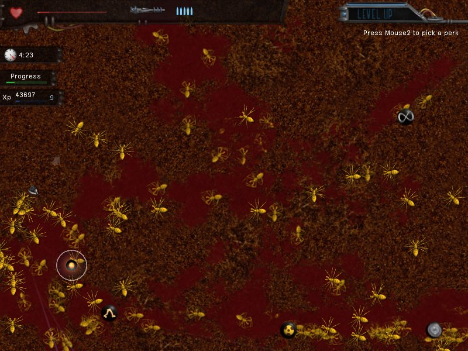
Crimsonland is highly addictive, but, costs money at the end of the trial. You'll get to play the first episode of Quest mode though. In the full game: There are basically 100 levels. 50 normal levels, and 50 Hardcore levels (Hardcore in this game is INSANE!). There are 32 weapons such as the Jackhammer (Basically a shotgun with a firing rate of 426 RPM), Rocket Minigun (Quite fun to use really), Ion Rifle (You'll need this, and it's other forms later in the game), and the Splitter Gun (It's the final weapon in the game that not even I have gotten). There are 42 perks, that are used for leveling up (Yes, in this game you level up) The perk system is as follows: Kill some enemies, gain a level (These Perks don't carry over to other levels), Choose a perk (The perks have some funny descriptions), fight some more with the perk, and gain more levels. Some perks are Barrel Greaser (Makes your bullets fly VERY fast, thus hitting your enemies with a greater impact), Uranium Filled Bullets (Your bullets now contain a creamy explosive filling(NOTE: It only works with bullet weapons)), Telekinesis (Allows you to pick up items from far away, this will become your best friend), Pyrokinesis (When you place your cursor onto your enemies they burn), Evil Eyes (Every enemy either dead or undead will stop dead in their tracks when you place your cursor over them), but there are also some really bad perks, only use them when you absolutely have to. As I said earlier, there are 100 levels (The last 50 levels are the same as the first levels, just, as Tsukatu describes, have 3x the enemies). There are 5 episodes, each episode contains 10 levels, every 10th level is a boss level (So there are 5 boss levels total). Another good thing about this game is that it's only 6 MB!
Crimsonland
I have the full game, and have beaten the first 50 levels. Hardcore is incredibly tedious.
#260127 147 2006-11-27T00:29:37Z Sgt. Poptarts Ok, did someone register me on Xfire? If so, then I will need my my password PMed to me.
#260805 62 2006-11-28T02:40:50Z Sgt. Poptarts note
#261139 89 2006-11-28T20:15:49Z Sgt. Poptarts TMN, Crimsonland, Dead Rising, and soon, Supreme Copmmander.
#261257 91 2006-11-29T00:06:30Z Sgt. Poptarts I tkink I will. As, I think I may have ADD.
#261332 2761 2006-11-29T02:53:06Z Sgt. Poptarts 9/10
#261689 2771 2006-11-29T20:20:35Z Sgt. Poptarts 6/10 It seems too big for my likings..
#12617 1 2006-12-03T21:19:37Z Sgt. Poptarts Ok, GamingWolf and I have started to play Unreal Tournament...again, and I thought of the idea of creating a tournament. The tournament would include Team Deathmatch, Deathmatch, Last Man Standing, Jailbreak (Maybe), and a few others. You'd progress through a ladder, and would either have a 1 Vs. 1 at the end, or have a Last Man Standing Game. I haven't decided what the winner would get, but the winner would be the champion on Unreal.
Give some suggestions on what I should do. maybe try to help set it up.
#265260 7 2006-12-06T02:46:46Z Sgt. Poptarts Anyway, I was thinking that maybe I would try to create one over my Christmas Break, but, seeing how things are going, I may not be able to (I haven't been doing homework, as there is too much)do it. I also can't host servers, so, that'd be another problem. Also, at school I've been daydreaming of it...man, that was an awsome tournament.
#12696 1 2006-12-08T01:04:40Z Sgt. Poptarts Xfire, the IMing program that lets you see what other people are doing in their games (Yes, I searched for this, but, the old topic was a year old, and, I don't like posting in topics that old) Anyway.
Xfire download it, (It has what it includes on the home page) and add me if you wish
.
I'm snuggletummy.
#266817 2901 2006-12-09T02:24:49Z Sgt. Poptarts 9/10 Es ist Interessant.
#266818 401 2006-12-09T02:26:15Z Sgt. Poptarts 9/10
#266820 12 2006-12-09T02:34:59Z Sgt. Poptarts I also don't play N. And, I doubt that's really Halo 3.
#266898 45 2006-12-09T06:11:47Z Sgt. Poptarts I want a Lich Smilie
. An Example is in my Avatar, and Sig.
#267084 822 2006-12-09T16:34:00Z Sgt. Poptarts Quote
* kirby|GMS is now known as kirby
<kirby> time to slide on the ice!
* kirby runs outside, slips, and breaks his skull into pieces
<Sgt_Poptarts> rofl
I found this rather amusing.
#267625 26 2006-12-10T14:56:20Z Sgt. Poptarts kind of have to pick my nose, as, because I've had to have a geiber tube in my eye, I can't blow my nose (The pressure of blowing my nose causes air to rush out of my eye sockets...it isn't comfortable). My sinuses are also messed up a bit, so my left nostril is always stopped up.
I think I can fire milk from my eye
.
#267782 5 2006-12-10T20:57:26Z Sgt. Poptarts That's not a mod. That's a trick. A mod is where people thack the game and allow you to do various crazy things.
#268484 17 2006-12-12T01:16:00Z Sgt. Poptarts Actually, forget what I tpyed, I read the photos.
Nice photos by the way, they look peaceful.
#269203 605 2006-12-13T03:02:54Z Sgt. Poptarts 
I love Unreal Tournament more than anything.
#270104 29 2006-12-14T20:47:52Z Sgt. Poptarts I have a final tommorrow in German
, that'll be fun.
#270753 106 2006-12-15T20:14:59Z Sgt. Poptarts @kai Yes, I love Heretic more than anything, along with Unreal Tournament.
The game I'm stuck on at the moment is Unreal Tournament, as, I have a total of 40+ mods for it. GamingWolf has 50+ mods for it
.
#271469 13 2006-12-16T20:29:21Z Sgt. Poptarts #272121 2 2006-12-17T16:00:50Z Sgt. Poptarts Thanks man, it must've taken you hours to figure this out.
#273719 4 2006-12-20T03:10:48Z Sgt. Poptarts It's an RPG. It's like most RPGs, only, ALOT of people play it. the town center place is a bit laggy, though, as there are always alot of people in it. It has some very nice graphics. I haven't played it in a while wither, and don't plan to play it again (It didn't get boring by the way).
#273720 13 2006-12-20T03:18:47Z Sgt. Poptarts If you can, buy them a Wii, or, go all out, and but them a Wii, Xbox 360, PS3, and give them maybe $4000 worth of games. Then, buy then a few cars, motorcycles, maybe a jet or two, and a boat. If nothing else, buy them clothes.
#273942 14 2006-12-20T20:01:33Z Sgt. Poptarts I'm talking about Unreal Tournament. (Not trying to be rude on this next part) If I was talking about 2004, then I would've added 2004 to the end of the game...
#275575 7 2006-12-23T06:33:49Z Sgt. Poptarts A Sgt. Poptart (preferably Chocolate Chip Cookie Dough) commanding an army, in Panel 7.
#276906 5 2006-12-25T02:26:40Z Sgt. Poptarts I now have it, but haven't played it with anyone yet. (I got a new computer..so, if I wanted to, I could pllay UT2007).
#277909 632 2006-12-28T10:58:34Z Sgt. Poptarts This is my new computer that I got for Christmas
. It can now play Oblivion!

#277910 633 2006-12-28T10:58:48Z Sgt. Poptarts Argh! I thought it didn't post this! disregard this.
#278302 28 2006-12-29T08:04:59Z Sgt. Poptarts UT2004 is teh awsome! Post.
#278304 30 2006-12-29T08:20:39Z Sgt. Poptarts Nope, my new computer is far to powerful yo slow down for such a small game. I could listen to music and run UT2004 while playing N, and still not lag.
#13205 1 2006-12-29T17:18:14Z Sgt. Poptarts So I recently got a better computer and Unreal Anthology. and I am completely hooked on UT2004. If anyone would want to add me to their friends list or something, go ahead. I am currently playing in the server Monster Madness - RPG Invasion - 170 Mons, 35 Weps [NEW], so join (If you can) and play
.
#278611 4 2006-12-29T23:09:48Z Sgt. Poptarts Amazingly, you can. You can only play me on ONS-Torlan, ad the other levels in the demo.
#279259 9 2006-12-31T07:15:04Z Sgt. Poptarts Hmm, I've taken a liking to the Cicada and the Leviathan. I love to fly, and love to work the destructive power of the Leviathan's 4 cannons plus the big..laser..thing.
#280218 5 2007-01-02T18:03:46Z Sgt. Poptarts #280221 28 2007-01-02T18:08:01Z Sgt. Poptarts I can do it 3 times a day. So 3 x 7 = 21. 21 Times a week.
#280345 32 2007-01-02T22:52:12Z Sgt. Poptarts Actually, it does get sore
, I just...deal with it.
#280650 31 2007-01-03T16:22:27Z Sgt. Poptarts I may use these, as, I make tilesets. I'll probably use my own patterns though. I love your patterns by the way.
#281833 10 2007-01-06T03:46:40Z Sgt. Poptarts I decided to download the game. My name is Sgtpoptarts. I was going to make it ChaosWolf...but..nah.
#281965 74 2007-01-06T15:21:40Z Sgt. Poptarts 666
#282152 1805 2007-01-06T22:50:18Z Sgt. Poptarts 9/10 mmm Black and pink.
#282314 23 2007-01-07T06:22:15Z Sgt. Poptarts Spoiler
 News Girl says "Hi".
News Girl says "Hi".#282328 4 2007-01-07T07:17:44Z Sgt. Poptarts Fine. I'm leaving! FUCK!
#282348 31 2007-01-07T08:10:16Z Sgt. Poptarts Nope. Not for my super computer and I.
#282480 2 2007-01-07T16:22:33Z Sgt. Poptarts That one still isn't as great as Burning Sand though. I've even added some mods too it. I can make planets, use electicity, and much more.
#282587 12 2007-01-07T20:34:35Z Sgt. Poptarts You know, I think I'll give you all my modded .cfg file for Burning Sand. Just replace the .cfg file in Burning sand with this one. It has everything plus soooo much more. Guarenteed for hours of crazy fun. It has Potassium, Liquid Explosives, a planet builder, animals, Electricity (takes a min to get used to), Uranium, poison, Killer (Kills plants), Clouds, an Elevator Generator, a Glue generator, A Saltwater Generator, Stars, a Sun, a lightable fuse, A Thunder Cloud, Dry Ice, And MUCH MUCH MORE. (I didn't want to type it all.
Attachment (lost): post-27-1168202075.cfg
#13391 1 2007-01-08T00:12:52Z Sgt. Poptarts This is my shrine for my avatar. You may talk about it, worship it, I don't care. Just make the Cute Chinese..or japanese...god happy.
#283177 22 2007-01-08T23:33:04Z Sgt. Poptarts Heh, I can see my summon in your picture. the one on top.
#283272 159 2007-01-09T02:53:34Z Sgt. Poptarts Anybody who is a fan of the Doom series will surely love this remix of the classic level on Doom II, The Crusher.
Doom II. Map09. The Crusher
EDIT. I have a few more. All Doom II.
Blood Bath This one sounds absoutely incredible.
Dead Simple. Map 10. By the way, I'm not using the actual song name, as it'd confuse people as to which level it is.
Doom II. Barrels of Fun. I'll probably find more music. But this is just a few of my favorites...and no I din't make these.
#283722 1814 2007-01-10T01:53:04Z Sgt. Poptarts 7/10 Interesting
#283917 28 2007-01-10T20:28:25Z Sgt. Poptarts Could you make the following User Bars?
Doom 1 Fan
Doom 2 Fan
Heretic Fan
Hexen Fan
Gears of War Fan
Unreal Tournament 2004 Fan
Thanks.
~ChaosWolf.
#283960 162 2007-01-10T21:33:07Z Sgt. Poptarts I have more music!
Doom I. Episode 1 map 8, AKA Phobos Anomoly. This one sounds pretty eerie and depressing, but I love it.
Doom I. E2M4 This one, is ok.
Doom I. Epsode 2 Level 2, I believe. Also a good song.
Doom I. A few songs mixed together. (These are all remixes, and are NOT made by me, just like the others).
#284140 43 2007-01-11T03:31:56Z Sgt. Poptarts 
HAX!
#285073 63 2007-01-13T04:41:07Z Sgt. Poptarts Holy cow! I was playing Gunbound, and got to use Knight. I used his special and did over 300K worth of Damage!.
#285297 26 2007-01-13T21:44:46Z Sgt. Poptarts Also, just to let you all know, I didn't make that mod, it's actually about 30-40 mods compiled together into one big heaping clump of awesomeness.
#285702 84 2007-01-14T21:32:41Z Sgt. Poptarts 
HAXORZ!
(Yes, I know it isn't hacking)
#286177 30 2007-01-15T23:01:28Z Sgt. Poptarts Actually, there is a button at the top that looks like a square, that opens and closes the sides of the screen, modded or not.
Also, even though this isn't my topic, Tell some of your Contraptions, Post some of them (as .PNG files, as you can put those .PNG files into the game, and play them) and Tel us some Mixtures we ought to try.
Attachment (lost): post-27-1168902423.png
#286493 18 2007-01-16T20:37:26Z Sgt. Poptarts Place: Bottom Left hand corner of the backwards E.
Color: Black with Red arms and legs. The Red should start where the triangles on N's body start.
Pose:

Name: Sgt. Poptarts.
Also, could you possibly make a beam firing from his hand, and making it hit the wall? I'd really appreciate it. If so, then make it what ever collor you want, and make it burrowing into the wall.
Thanks.
#286686 69 2007-01-17T03:30:59Z Sgt. Poptarts I wish all these could all be put into like a .rar file or something, I'd download it...it beats having to save all of them (I love to do that).
#286953 5 2007-01-17T23:00:58Z Sgt. Poptarts Jesus! That is really loud. That'd be great for one of those screamer things.
#286956 23 2007-01-17T23:06:13Z Sgt. Poptarts A good example of a free game is Flyff. Another is Maple Story (excluding the cost of some of the items), Space Cowboy, and some other I can't think of.
#287007 954 2007-01-18T01:16:11Z Sgt. Poptarts Quote
<kai> k
<kai> sweeeeeeeeet
<kai> so...download in doomsday?
<Sgt|droppingalog> yeah just a sec
<kai> constipated?
<kai> 
* kai starts to talk to himself
<kai> .....yeah that was cool
<kai> no......
<kai> no, sophie didnt do it like that....
<kai> ......hey, thats fucked up
<kai> hey!!
<kai> well, you should feel bad...
<kai> hahaha!
<kai> no, not really
<kai> ......i know what time it is fool
<kai> no, not time for that
<kai> crack?
<kai> never tried
<kai> ........what do you mean IM crazy
<kai> your the one whos crazy
<kai> just because your in my head doesnt mean......no!!
<kai> ......look, shut up ok?
<kai> im trying to talk to poptarts here
<kai> .......yes, your still my favorite
<kai> what do you mean?
<kai> ...
<kai> now your just being mean
<kai> how could you say that about poptarts?!
<kai> .....look you, i have a gun RIGHT HERE and ill take us both out
<kai> i thought so..
<kai> ...no, i dont want any crack
<kai> ...
<Sgt|droppingalog> ...
<kai> ...no, i dont want any heorin either
<kai> hey
<Sgt|HW> hello
<kai> i got bored
This is what happens to you when you are bored in Private Chat rooms.
#287252 104 2007-01-18T21:56:43Z Sgt. Poptarts Because thor never gets THAT close to someone.
#287969 114 2007-01-20T23:22:26Z Sgt. Poptarts 1. I don't breath well, my lungs haf work.
2. I play, and I love J.D.
I want to be GM now.
...
Just kidding. Actually, no I'm not
#288044 40 2007-01-21T04:26:16Z Sgt. Poptarts Moskau - fremd und geheimnisvoll,
Trme aus rotem Gold,
kalt wie das Eis.
Moskau, doch wer dich wirklich kennt,
der wei, ein Feuer brennt
in dir so hei.
Kosaken he, he, hebet die Glser!
Natascha ha,ha, ha, du bist schn!
Tovarisch he, he, he, auf das Leben!
Auf dein Wohl Bruder, he Bruder ho!
Moskau, Moskau
wirf die Glser an die Wand,
Russland ist ein schnes Land
ho ho ho ho ho, hey!
Moskau, Moskau,
deine Seele ist so gro,
nachts da ist der Teufel los
ha ha ha ha ha, hey!
Moskau, Moskau,
Liebe schmeckt wie Kaviar,
Mdchen sind zum Kssen da
ho ho ho ho ho, hey!
Moskau, Moskau
komm, wir tanzen auf dem Tisch
bis der Tisch zusammenbricht
ha ha ha ha ha!
Moskau, Tor zur Vergangenheit,
Spiegel der Zarenzeit,
Rot wie das Blut.
Moskau, wer deine Seele kennt,
der wei die Liebe brennt
hei wie die Glut.
Kosaken he, he, hebet die Glser!
Natascha ha, ha, ha, du bist schn!
Tovarisch he, he, he, auf die Liebe!
Auf dein Wohl Mdchen, he Mdchen ho!
Moskau, Moskau
wirf die Glser an die Wand,
Russland ist ein schnes Land
ho ho ho ho ho, hey!
Moskau, Moskau
deine Seele ist so gro
nachts da ist der Teufel los
ha ha ha ha ha, hey!
Moskau
lalala...
Moskau, Moskau,
lalalala...
Oh, ohohoh...
Moskau, Moskau!
Moskau, Moskau
Wodka trinkt man pur und kalt,
das macht hundert Jahre alt
ho ho ho ho ho, hey!
Moskau, Moskau,
Vterchen dein Glas ist leer,
doch im Keller ist noch mehr
ah ah ah ah ah!
Moskau, Moskau!
Kosaken he, he, hebet die Glser!
Natascha ha,ha, ha, du bist schn!
Tovarisch he, he, he, auf die Liebe!
Auf dein Wohl Bruder, he Bruder ho!
Moskau, Moskau
wirf die Glser an die Wand,
Russland ist ein schnes Land
ho ho ho ho ho, hey!
Moskau, Moskau,
deine Seele ist so gro
nachts da ist der Teufel los
ha ha ha ha ha, hey!
Moskau Moskau
Liebe schmeckt wie Kaviar,
Mdchen sind zum Kssen da
ho, ho, ho, ho, ho, hey!
Moskau, Moskau
komm wir tanzen auf dem Tisch
bis der Tisch zusammenbricht
ha ha ha ha ha, HEY!
#288603 2320 2007-01-22T03:16:07Z Sgt. Poptarts Granted, but, unfortunately you lose control, and you get demoted....after that...you die.
I wish GamingWolf was a fox.
#291477 37 2007-01-29T21:55:45Z Sgt. Poptarts Hmm, YES...AWESOME..MAGNIFICENT! There will finally be an awesome game to play on Xbox Live Arcade.
#291850 9 2007-01-30T21:18:12Z Sgt. Poptarts Take some Nyquil...that'll do the trick.
#13794 1 2007-01-31T00:50:30Z Sgt. Poptarts Anyone here like any of the following games: Doom, Doom 2, Heretic, Doom: Evilution, Doom: Plutonia Experiment, Hexen, or Hexen Deathkings of the Dark Citadel?
#292664 13 2007-02-02T01:37:41Z Sgt. Poptarts Anyway, some reasons for me asking this is, ther is a program called Skull Tag, and, if you have the WADS for the game, can play it ONLINE! The max amout of players in one server is like...64-100..maybe less.
Skull Tag
If you want to look at this to see what is included in Skull Tag, then look no further (well, you'll have to click the link..but that wont hurt you)
Skull Tag Wiki
----------------------------------------
Of course, why stop there? there is also a Doom Level Builder, in which I am currently working on a level for Doom 2. It's very easy to use (imagine connect the dots with a 2D and 3D editor.
Doom Builder
----------------------------------------
Finally, there is Doomsday, that enhances the graphics to maybe X10 or so..it's quite impressive.
It's also for Mac Windows, and Linux, so, go crazy.
Doomsday
----------------------------------------
And kai, my avatar is just random.
#292873 15 2007-02-02T20:34:46Z Sgt. Poptarts Wait, I see now, He says he MAY come back..
#293504 823 2007-02-04T05:17:15Z Sgt. Poptarts Gets a BFG10000
Inserts the Icon of Sin.
#294434 3 2007-02-06T19:13:30Z Sgt. Poptarts Yeah, see, you have to be a gold member to play online.. It's crap, but..yeah. I myself am a Diamond member. See, Silver, (I think) only allows you to download stuff online, Gold lets you Play online, and Download Stuff, Diamond (which you have to have Xbox Live for 1 year AND (this is crap) You have to live in America or Canada.) Lets you play online, Download stuff, AND gives you discounts at stores.. like Target, Walmart, EB Games, and so on.
#295951 18 2007-02-10T20:47:20Z Sgt. Poptarts Yeah, I was facing AF, and I tought all my guys Kamikazie Column....it got nasty after that. I won though. AF played a greatt game as well.
#295966 5 2007-02-10T21:13:10Z Sgt. Poptarts I'll join for fun
.
#296142 9 2007-02-11T05:36:49Z Sgt. Poptarts I know how to get it, but I'd rather not tell...I think it'd be obvious.
#296146 5 2007-02-11T06:05:13Z Sgt. Poptarts I also didn't like it...it's a pain to play, and I hate trying to climb ladders just to get knocked down.
#302305 7 2007-03-03T07:21:16Z Sgt. Poptarts Wow, that must suck. I used to play it, but I've forgotten my information..which I think I'm remembering now.
P.S. I'm not completely back on my computer.
#302423 19 2007-03-04T08:45:54Z Sgt. Poptarts That was indeed very touching. It even put a tear in my eye. If only I had participated in this, but, sadly, I was grounded at the time.
#302564 18 2007-03-04T23:34:19Z Sgt. Poptarts I love Blondes! I don'y know why, but they make me feel happy all day.
#305402 162 2007-03-15T19:06:34Z Sgt. Poptarts LOVE IT!
Cheerleaders (the cute ones)
#305480 2031 2007-03-15T23:43:32Z Sgt. Poptarts 9/10 kitty!
#305875 3 2007-03-17T18:40:16Z Sgt. Poptarts Sounds a bit like Space Cowboy.
#14487 1 2007-03-18T04:03:32Z Sgt. Poptarts This isn't the greatest thing in the world..but I really like it.

#306011 3 2007-03-18T05:34:21Z Sgt. Poptarts probably, but they'd probably be somewhat harder.
#306240 7 2007-03-19T02:52:30Z Sgt. Poptarts It's GMod 10. It costs Money to play. I helped LuminaFlare in the making of that. It was fun, and involved alot of dying. By the way, GMod 10 is incredible. You can make practically anything you can imagine. an example is
here.#306661 6 2007-03-20T22:28:38Z Sgt. Poptarts Want me to make a drone? Request it (not sure if I'll do it, but I'll attempt it.)
#306663 11 2007-03-20T22:30:48Z Sgt. Poptarts 
I posted this in the worng thread a minute ago.
It's called the Death Watermelon.
#306670 14 2007-03-20T22:44:56Z Sgt. Poptarts Azmillion, you're welcome to join my server. it'd make it easier, and soon, maybe we can make a GMod 10 Builders Team. That, and people could request up to make things, and we try to make it.
#307036 24 2007-03-22T22:37:30Z Sgt. Poptarts Jakel. Let me tell you something. this game has some pretty awesome graphics, better than most games. Also, his graphic setting is on low.
#307301 27 2007-03-23T23:39:59Z Sgt. Poptarts Anyway, Who here has Garry's Mod 10 and Steam? as, I can host LAN servers on Hamachi (google it) and we could all play Space Buld. Everyone could have their own planet....er, sort of anyway. If we had enough people, then people would have to inhabit asteroids.
#307378 29 2007-03-24T06:00:47Z Sgt. Poptarts 
Here is a little picture I made with some of my Nintendo Props.
#307429 83 2007-03-24T14:52:04Z Sgt. Poptarts Level 82: Let a Poison Headcrab attach it'self to your head.
#307432 4 2007-03-24T15:07:35Z Sgt. Poptarts I've been playing Half-Life 2, CS:S, Garry's Mod 10, Half-Life 2 Deathmatch, Half-Life 1, Skulltag (it's a doom emulator with online play), Halo, Halo CE, and Unreal Anthology. I have alot of games on my computer, as you can tell.
#307689 32 2007-03-25T15:53:07Z Sgt. Poptarts It's LF against unimaginable odds.

This isn't GMod10, but it's Half-Life 2 Deathmatch.
What I did to some AFK guy.

#307692 787 2007-03-25T16:10:51Z Sgt. Poptarts #307814 300 2007-03-26T02:36:26Z Sgt. Poptarts GamingWolf
#307816 3570 2007-03-26T02:39:06Z Sgt. Poptarts 5/10
Uh, eh, the color looks faded.
#307875 12 2007-03-26T15:54:41Z Sgt. Poptarts I'll participate. Last time I was at my dad's house.
#308040 9 2007-03-27T02:41:52Z Sgt. Poptarts I've heard of it. I like it as well.
#308158 209 2007-03-27T18:43:24Z Sgt. Poptarts Hair_Conditioner.
#308253 125 2007-03-28T03:06:00Z Sgt. Poptarts Man, I wonder how I'll win over Devin's heart?
#308869 790 2007-03-30T18:15:57Z Sgt. Poptarts Here, my new desktop looks much better.

#309304 150 2007-04-01T00:22:14Z Sgt. Poptarts First post because, pfft, I'm The Juggernaut...that, and I'm ChaosWolf.
#309667 21 2007-04-02T19:56:45Z Sgt. Poptarts Ok, Most of my music is techno, Ambience, and every else that is usually just beats.
[OPENING CREDITS]: Time Becomes - Orbital Ok, boring Opening....yeah, no music, just people saying "Where time becomes loop"
[WAKING UP]: Somebody - Depeche Mode Sounds like the opening to a REALLY slow moving movie, very peaceful though.
[FIRST DAY OF SCHOOL]: Never There - Cake I must be one dead sexy guy, kinda sounds like all the women love me...I wish.
[FALLING IN LOVE]: Jaku - DJ Krush Oooook, sounds like I fell in love with a Death Prone Pimp....kinky.
[FIGHT SONG]: As The Rush Comes - DJ Tiesto Sounds like it'd be kinda of a techno, epic, on a motorcycle fight. *grabs Uzi*
[BREAKING UP]: Fautline Feat - Paul Oakenfold ... It's like I broke up at a rave. Nice way to break up I guess.
[PROM]: London Beckoned Songs About Money Written By Machines - Panic! at the Disco All I can honestly say is, interesting.
[MENTAL BREAKDOWN]: Spare Parts Express - Orbital I don't think this is exactly Mental Break Down Material, I mean, if you listen to it long enough, you might go mental, but may miss out on the breakdown part.
[DRIVING]: Doom 2 Gothic Sandy OC ReMix - Mazedude I listen to Doom music while driving, very nice.
[FLASHBACK]: Speed Freak - Orbital Interesting Flashback, sounds like i'm trying to remember some interesting events.
[WEDDING]: Opera Singer - Cake Sounds like a pretty happy wedding, yeah. I'll be going now, my wife is waiting.
[BIRTH OF CHILD]: detroit tickets - Apoptygma Bezerk The song started slow, almost like it was peering it's head out, then, it starting to get these funky beats, it has a bit of a creepy sound to it. Basically, we had a Half demon, Half Hip-Hop Child. Where did I go wrong?
[FINAL BATTLE]: Dead Can Dance - The Host Of The Saraphim - Paul Oakenfold OH MY LORD, freaking perfect Final Battle. Sounds like something you'd see in on of those epic medieval battles.
[DEATH SCENE]: High Rise - Orbital So, sounds like I'm dying in either a really old game, or Tron. Funky really, at first I was in a medieval battle, and now the final guy is in a game...who made this movie?
[FUNERAL SONG]: The Doors - L.A. Woman - Paul Oakenfold I died a woman...since when did I have a sex change, and more importantly, why?
[END CREDITS]: Where Would I Be - cake Seems like a pretty good ending, Pretty slow song.
#309670 3604 2007-04-02T20:03:49Z Sgt. Poptarts 9/10 I really enjoy it.
#309675 487 2007-04-02T20:12:07Z Sgt. Poptarts 400%
#309933 26 2007-04-04T00:23:31Z Sgt. Poptarts I wish my avatar was on there. Anyway, I'll decide sometime soon. "It's ok my sweet sweet avatar, daddy still loves you."
#310049 3 2007-04-04T20:31:31Z Sgt. Poptarts Great Video. Even though I didn't get to see it all (WMP11 messed up) I still loved it. Yes, that wad is fun. Just..yes, the wad is great.
My video. Check this out. I just made it.
#310553 56 2007-04-07T01:18:57Z Sgt. Poptarts here we go..I hope.
Attachment (lost): post-13-1175908737.txt
#310587 82 2007-04-07T02:09:55Z Sgt. Poptarts
Moustache!
#310629 105 2007-04-07T03:49:41Z Sgt. Poptarts Ok, I'm sorry to say that I still don't understand how to format it..I'm very very sorry. the way it is now, though, seems pretty user Friendly.
Attachment (lost): post-13-1175917781.txt
#310661 126 2007-04-07T04:46:51Z Sgt. Poptarts 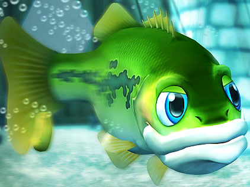

#310683 140 2007-04-07T05:27:13Z Sgt. Poptarts More like Techno Pop.
it's interesting...the page though is....PINK.
#310737 174 2007-04-07T07:50:54Z Sgt. Poptarts 
It's horrible, oh god it's horrible.
#310753 189 2007-04-07T08:29:44Z Sgt. Poptarts 
^Before
\/After

Note: I don't know of many Actresses.
#310778 206 2007-04-07T09:39:27Z Sgt. Poptarts #310792 216 2007-04-07T10:36:02Z Sgt. Poptarts #310816 232 2007-04-07T11:28:01Z Sgt. Poptarts I'd say about $750

^$128.95

^$42.95

^$39.00
That's all I'd really need. yes, not too much. But, I'd spend the rest on my girlfriend, We'd have a grand dinner, party a bit, and rent a nice hotel *wink* *wink*.
#310828 243 2007-04-07T12:17:14Z Sgt. Poptarts
As you can plainly see, everyone is runn away from the monument (not counting the guy in the middle). They obviously don't want to be there, so, as you can tell, in the left hand sinde of the picture, there are people literally running for their lives.
Basically, what I'm trying to say is, the momument is so boring that people resort to running for their lives.
#310850 260 2007-04-07T13:28:02Z Sgt. Poptarts
Come on, you know he would tote around a Gameboy.
(I'm editing the G in Gameboy.)
#310866 267 2007-04-07T14:41:03Z Sgt. Poptarts #310885 276 2007-04-07T15:54:26Z Sgt. Poptarts Here she be.
Attachment (lost): post-13-1175961266.txt
#310904 290 2007-04-07T16:43:27Z Sgt. Poptarts 
Basically, I'd live within the red circle. Why, because it's between madagascar and Juan De Nova island
which is about a 45-50 mile radius for me to swim around in, can meet new friends, and enjoy haming 2 boarders on the opposite sides of each other. It makes me feel safer if there are 2 boarders as, it makes me feel as if predators aren't as likely to kill me.
#310933 297 2007-04-07T18:31:51Z Sgt. Poptarts Eat MY attempt

#310949 304 2007-04-07T19:05:18Z Sgt. Poptarts #311008 317 2007-04-07T20:48:06Z Sgt. Poptarts Oh my god, this was hard!
Attachment (lost): post-17-1175978886.txt
#311028 326 2007-04-07T21:15:18Z Sgt. Poptarts
here's a recipe that goes with the muffin.
An Original Recipe, by Amanda
Pumpkin, Raisin, and Spice Muffins with Molasses Glaze
Nonstick spray
2 3/4 cups all purpose flour
1 1/2 tsp baking soda
1 tsp salt
1 cup sugar
1/2 cup vegetable oil
3 large eggs
1 1/2 tbsp fresh ginger juice, best done with a garlic press
1 15-ounce can pure pumpkin, or 2 cups of well roasted pumpkin puree
1 tbsp cinnamon, ground
1/2 tsp nutmeg, ground
1/2 tsp allspice, ground
1/2 cup buttermilk
1/2 cup plus 1 1/2 tbsp molasses
1 cup golden raisins
1 1/2 cups powdered sugar
1/8 tsp salt
1 1/2 tbsp water, plus extra if necessary
Preheat oven to 350 degrees. Spray two large muffin tins with non-stick spray, this recipe will produce about nine large muffins or 18 regular sized muffins - spray as many tins as necessary. Sift together the flour, baking soda, cinnamon, nutmeg, allspice, and salt. In a separate large bowl, beat together the sugar and the oil, with either a hand whisk or an electric beater. Then, add the eggs one at a time, beating after the addition of each egg until the egg is completely combined. Once all the eggs have been added, add the ginger juice, pumpkin, buttermilk, molasses and raisins to the bowl and whisk/beat thoroughly. Next whisk in the dry, sifted ingredients, added 1/4 at a time. Be sure to whisk the flour mixture just enough to combine - the more you beat the flour, the tougher the muffins will be. Fill the muffin tins to about a centimeter from the top with the batter. Bake in the upper 2/3 of the oven for about 40 minutes if youre using the large tins, and about 30 minutes if youre using the regular sized tins, or until a toothpick stuck in the middle of a muffin comes out mostly clean. Removed the finished muffins from the oven and set the tins on a rack to cool. After about an hour the muffins will be cool enough to remove from the pan.
After removing the muffins from the pan, make the glaze. Sift the powdered sugar and salt into a medium sized bowl. Add 1 1/2 tbsp molasses and 1 1/2 tbsp water. Whisk. If the glaze seems too thick, add a little more water, if it seems too thin, add more sifted powdered sugar.
Dip the tops of the cooled muffins into the glaze, which will drizzle down the sizes. Allow the glaze to set for about an hour before serving. Enjoy!
#311060 338 2007-04-07T22:56:54Z Sgt. Poptarts The Amazing adventures of UberFish. no words, just a fish shooting a guy.

#311070 343 2007-04-07T23:22:22Z Sgt. Poptarts 
This is a lazy chef. He only wants gold, and has burnt most of his food that way. He studies Foodjitsu, so watch out, or he'll put the "Shish" back into Shishkabob.
#311101 350 2007-04-08T00:38:42Z Sgt. Poptarts #311129 357 2007-04-08T01:39:05Z Sgt. Poptarts My completion, no AGD.
Attachment (lost): post-13-1175996345.txt
#311160 363 2007-04-08T02:44:22Z Sgt. Poptarts 1. Name all of the members of the Legacy Team.
tktktk.
LittleViking001.
maximo.
kablizzy.
2. How many maps has Dave made Publicly (On NUMA and in Levelpacks combined)?
3. How many Tetris accounts have existed on the forums to date?
7.
4. How many maps had been submitted to NUMA as of July 03, 2006, 3:00 PM?
5. How many letters are there in Mare and Raigan's combined full names?
24.
6. How many challenges were there during last year's InsomNicon?
11.
7. Which NedCons has Kablizzy judged?
8. How many Webcomics have been posted to the forums to date?
9. What date did Mare and Raigan first join the forums?
November 18.
10. How many times combined have the following members left the community
I didn't get them all. I also didn't want to take anyone else's answers. That's dishonourful.
#311175 371 2007-04-08T03:28:44Z Sgt. Poptarts Chris Turk: You know, I love how kids of divorce really have the market cornered on family dysfunction. But let me share with you a typical Thanksgiving at the Turk household: It starts with my mother yelling at my sister for yelling at my grandmother who's yelling at the television screen, which happens to be the microwave. And then my militant brother Jabari - formerly Bob - gives my father attitude for using the word black, even though he's referring to the turkey. Which, by the way, only got burnt because instead of turning the oven off, my bi-polar aunt Leslie tried to shove her head in it. But you know what we do? We kiss... and we hug... and we apologize for all the things we said... 'Cause a month later, we gonna get together and do it again at Christmas!
Crap like this happens all the time under the sea....everything is crazy down there. Soon, they make up, as, they're going to do it over again 1 month later.
#311195 376 2007-04-08T05:21:27Z Sgt. Poptarts Every night, up in the sky.
I dream of you and start to cry.
Deep in my head, or so it did seem.
I now realize that it was a dream.
My heart is going dim.
It's hard to keep sane.
My life's turning grim.
All because of this pain.
Now, on the dance floor.
Bustin' shizin' beats.
The crowd seems to want more.
Then I see her face, this time I want to score!
#311208 382 2007-04-08T06:20:54Z Sgt. Poptarts 
(In the minds of the fish) Are cat's supposed to be able to climb all that furniture so easily?
#311219 386 2007-04-08T07:42:25Z Sgt. Poptarts I'm just giveing you this as I've been working on it. It's not much, but it'll do. I'm sure you wouldn't do this, but..eh. if you think it's good, yo can add the points. If you want to totally disregard the points, as, I left, then please, by all means, do it.
'twas a fun time....now, my wrists hurt.
Attachment (lost): post-13-1176018145.txt
#311302 3646 2007-04-08T16:28:53Z Sgt. Poptarts 10/10 It's really simple and compact.
#311672 16 2007-04-09T23:51:43Z Sgt. Poptarts God, I was I was that kitten.
#313081 26 2007-04-14T14:22:05Z Sgt. Poptarts Yes
Would you go through a sex change to make this game funnier with me?
#313360 20 2007-04-15T08:44:31Z Sgt. Poptarts That parabola thing was very creepy, It reminded me of a strange mix of HL2, Doom 2, and Quadradius.Also, those guys who were vomitting that black nasty stuff...it looked like Nutella, and, made me hungry.
I didn't want to look at the primus thing though, anything that sounds a bit country, I try to avoid.
#314030 22 2007-04-18T21:03:27Z Sgt. Poptarts Watch this. Watch this then. i'm surprised that it doesn't scare children. It's supposed to be a show, but it's more like a music video
#314106 15 2007-04-19T00:11:26Z Sgt. Poptarts Just do what I do, and every so often, copy the current map data into a text file. Then if you lose it, you'll have saved where you left off.
#314148 807 2007-04-19T01:59:54Z Sgt. Poptarts #314245 810 2007-04-19T13:27:23Z Sgt. Poptarts @McP. they all seem to make really nice Desktops.
#314431 67 2007-04-20T01:51:07Z Sgt. Poptarts Sgt. Jakal, JakalWolf, or SnuggleJakal.
#315172 24 2007-04-23T05:03:23Z Sgt. Poptarts Hi, I'm Octopod Squad, and I have Touretts. It all started when I was a- APPLE!
hmm, I know how to diagnose this, but it may take some time. For now, you are dubbed mentally retarded.
#315657 15 2007-04-25T02:15:11Z Sgt. Poptarts Mike Roch. Sure, it's unoriginal, but it'd make you laugh every once in a while.
#315793 21 2007-04-25T19:04:47Z Sgt. Poptarts 15! I'm turning 16 May 18!
#315888 8 2007-04-26T00:16:03Z Sgt. Poptarts Heh, it's like watching two mentally desabled kids fight. Also, I found the Hidden thing. man...that's so funny.
#315896 8 2007-04-26T00:33:46Z Sgt. Poptarts Pony ponied ponies with poniness, while Ponyette ponied Ponydude's pony's. Mr. Pony said "Hey Cracka!"
#317108 7 2007-04-30T20:30:15Z Sgt. Poptarts Xfire: Snuggletummy
Xbox Live: Icydragon5
Wii: (I'll have to get my bro's consent on this)
#317110 17 2007-04-30T20:35:22Z Sgt. Poptarts This game is so great. Try adding your own music to it. My high score is 24. Also, I love the colors, basically, I use this to kill hours upon hours of free time, I could stare at it all day.
#317186 1940 2007-05-01T00:01:01Z Sgt. Poptarts This is me as of 2 mins ago.

#317190 835 2007-05-01T00:04:51Z Sgt. Poptarts Only because I can, Here's my desktop.

#317232 1943 2007-05-01T01:24:31Z Sgt. Poptarts Yes and yes. I have another. That, and a Cyclone Throwing Star
.
#317366 837 2007-05-01T19:47:14Z Sgt. Poptarts Sockmonkey, I reccommend using
www.tinypic.com. It's better than imageshack.
#317582 2 2007-05-02T19:08:31Z Sgt. Poptarts Ah Smosh, I love them too. mainly the TMNT theme song.
#318120 15 2007-05-04T14:39:17Z Sgt. Poptarts Icydragon5@yahoo.com
#318447 4 2007-05-05T13:41:50Z Sgt. Poptarts I used to play this, and, it was quite fun. I might try it again, as, I think my internet is faster so I'll get to play online without lag.
#15114 1 2007-05-05T15:37:17Z Sgt. Poptarts Card Maker
Basically, this lets you make Yu-Gi-Oh cards. Sure, you may not like Yu-Gi-OH, but this thing is quite fun.
[Example]:

#318512 6 2007-05-05T16:06:04Z Sgt. Poptarts 
Here is my Lost URL.
#318770 24 2007-05-06T06:59:16Z Sgt. Poptarts I finally made it to level 31, and, all I can say is....The music sounded a tad bit demonic. It got pretty hard as well. Also, I could spend hours upon hours in sandbox mode only because I love to watch colors. Kinda makes me sad that my lava lamp is broken.
#318772 29 2007-05-06T07:09:02Z Sgt. Poptarts If only I could take pictures in Oblivion, but, alas, it seems to not let me. Anyway, my graphics basically look like the Xbox 360's graphics. Also, I have a mod that adds 500 new armor types, weapons, and sheilds. Another cool thing about it is that you can set the mod to make the game seem more realistic. So, you can make a day last for 24 hours (24 hours as in real time), you can make it so that the flowers, treasure chests, and enemies regenerate within a week (in the game's time) rather than the normal 3 days.
Hmm, after a few minutes of digging, I found the links if you want to try them.
Francesco's Mod
This is optional, but it adds a few more weapon skins, and also some new, much cooler weapons.#320213 9 2007-05-11T02:08:49Z Sgt. Poptarts Whilst trying to Defeat the Icon of Sin, you were in the way of one of it's Skull Boxes....thus, you were telefragged, and you became a zombie.
#320214 121 2007-05-11T02:18:59Z Sgt. Poptarts Agent Poptarts
#15192 1 2007-05-12T02:17:51Z Sgt. Poptarts Ever wondered what would happen if Warning Forever included an enemy creator? I believe this is what would happen. Note, we now have a fan site up. Soon it'll look prettier, but in the mean time, check it and download the latest Enemy packs.
Fraxy#320547 4 2007-05-12T17:15:34Z Sgt. Poptarts Click the Config.Exe icon in the fraxy folder...that'll solve the screen size thing....and allow you to change the colors of the enemie's bullets, and some of the other aspects of the game.
#320568 7 2007-05-12T19:48:38Z Sgt. Poptarts Ad, want to face an interesting enemy? Then fight this thing. Also, try it on Rank 100...it gets nasty.
Attachment (lost): post-27-1178999318.fed
#320582 10 2007-05-12T21:10:24Z Sgt. Poptarts You have to add the Dissconnecter pieces...or whatever they're called.
Attachment (lost): post-27-1179004224.fed
#320619 524 2007-05-12T22:35:17Z Sgt. Poptarts "Elation Station"
~Infected Mushroom
#320890 17 2007-05-13T20:58:40Z Sgt. Poptarts Here, I made both of these today. I personally think these look pretty cool, despite them being pretty easy
. Enjoy.
Attachment (lost): post-27-1179089920.zip
#15224 1 2007-05-14T01:00:21Z Sgt. Poptarts Ok, while playing with Stumbleupon, I...er....sumbled upon this little animation.
Dude Falling I don't know why, but I can't stop watching it, and I now demand that whenever I fall down a hill that this song be played.
#321103 4 2007-05-14T13:23:40Z Sgt. Poptarts I like 7, as at school I have locker number 3103 (3+1+0+3=7) and my book number is 7. There are probably some other
things in my life that have the number 7 in it, but I've not realized them yet.
#321104 180 2007-05-14T13:49:59Z Sgt. Poptarts #321248 22 2007-05-14T23:33:43Z Sgt. Poptarts Ok, I spent maybe an hour on this. Sadly, It only seems really effective if it's rank is at 100..which really Sucks. By the way, I updated my first post, so, check it out for new updates and such.
Attachment (lost): post-27-1179185623.fed
#321859 42 2007-05-17T02:12:49Z Sgt. Poptarts On the 51st day, God created the holiest of all pastries, the Pop-tart.
#321917 89 2007-05-17T05:28:41Z Sgt. Poptarts 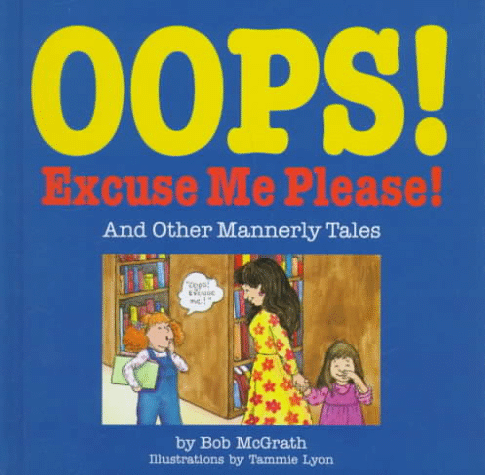


#322053 869 2007-05-17T20:50:59Z Sgt. Poptarts 
Actually, the Red Desktop got really boring...kinda sad. I believe this looks awesome...so clean.
#322263 964 2007-05-18T16:26:28Z Sgt. Poptarts I'm happy that it's my birthday! I'm 16 today! Woo! I feel like a man. *Sits back and stares at his 19 inch LCD monitor...while eating poptarts* Today is a good day indeed.
#322295 8 2007-05-18T20:41:33Z Sgt. Poptarts The Massenger - Infected Mushroom.
#322641 2170 2007-05-20T03:11:12Z Sgt. Poptarts 8/10 That actually pretty cool...a bit too white for me though.
#322770 884 2007-05-20T16:49:05Z Sgt. Poptarts My desktop is somewhat on an imitation, only minus the Vista skin. I only have Rocket Dock.
#15302 1 2007-05-20T20:32:59Z Sgt. Poptarts Echoes. Do you like Asteroids? Do you like Flashy colors? Then you will probably like this.
Here is what it looks like. It looks quite nice.
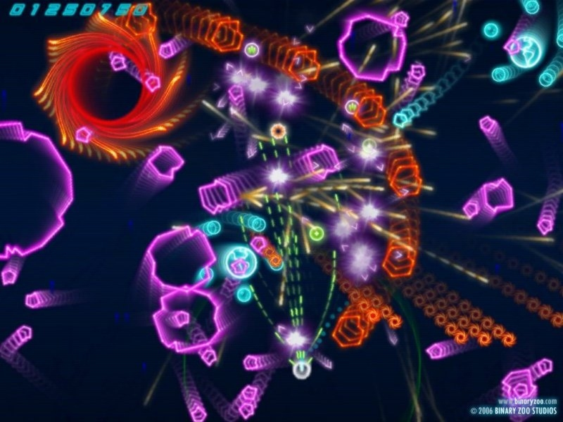
Mass Carnage after a few levels of gameplay.

There are even challenges you can work for.
Another cool feature in this game is the ability to customize your Playlist, it only allows 50 songs, but you really don't need huge amounts of music to enjoy this.
#322835 33 2007-05-20T21:07:29Z Sgt. Poptarts I have more music on my older computer. Anyway.
302 Songs. 33.8 Hours.
100 Artists. 133 Albums.
My Old Computer has Between 3000-4000 songs, and lasts for about 75-80 hours.
#323031 35 2007-05-21T06:09:49Z Sgt. Poptarts I just recently got Shivering Isles, and, does anyone besides me get chills when they catch a glimpse of a Skinned Hound? As, I just saw one today, and I was scared. I don't cope well with seeing anything (be it real or fake) without their skin.
#323314 2 2007-05-22T17:33:05Z Sgt. Poptarts Amazingly, no, you're not the Only person. I also play Maple Story, but not as much as I used to. I'm a level 22 Rouge, going to be an assassain. My name is GaussDragon, add me if you want.
#323342 42 2007-05-22T20:18:49Z Sgt. Poptarts Do you mean Knights of the Nine, or Shivering Isles? As, I have Shivering Isles....and nobody has answered my question...they just ignored it...like always..
#323356 978 2007-05-22T21:06:02Z Sgt. Poptarts 
Happy Birthday!
#323379 44 2007-05-22T22:58:36Z Sgt. Poptarts Awesome, you found a picture of it. I was honestly googling it and came across some....disturbning images.
#323676 5 2007-05-23T22:46:09Z Sgt. Poptarts Black.
Attachment (lost): post-20-1179960369.png
#323913 8 2007-05-24T21:46:42Z Sgt. Poptarts Heh, I like this game, even though the ambient music is a bit eerie. I nuked Hong Kong
That was fun.
#324425 27 2007-05-26T17:58:28Z Sgt. Poptarts Spoon, some of us did play it more often, and the result was that it got boring. Also, my account is on Bera. No, I'm not in Bellocan...whatever that might be.
#324427 36 2007-05-26T18:04:04Z Sgt. Poptarts 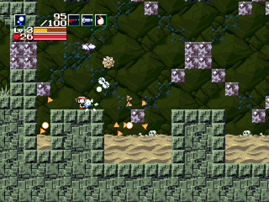
Cave Story. Sure, it's not an old game, but I love it quite alot...now I just need to redownload it...
#324431 2 2007-05-26T18:40:24Z Sgt. Poptarts Wow, this game really should be ported to the Wii. The third boss is a real pain.
#325082 704 2007-05-28T21:25:35Z Sgt. Poptarts Primary colours: \/The colors in the image\/
Theme:Chalk.
Renders/images:

(put my name in the Points section.) (also, um...move the girl closer to the points section.))
Text:
Complexity:I don't care.
Matching avatar (yes or no):nope.
Dimensions (size):I really don't know much about what sizes all the dimensions are, so I don't care. I just say maybe a bit smalle than my current, but not too small.
#325571 33 2007-05-30T01:49:45Z Sgt. Poptarts LittleViking001.
#325575 10 2007-05-30T02:02:50Z Sgt. Poptarts Wii Play is a very good game. It has Duck hunt, fishing, and other awesome mini games. I could play it for hours...which...I think I'll go play it now.
#325686 10 2007-05-30T15:04:04Z Sgt. Poptarts Eevee, No Pokemon is better.
#325695 58 2007-05-30T15:38:22Z Sgt. Poptarts Half-Life
Half-Life 2
Halo PC
Worms Armageddon
Unreal Anthology
Doom 1
Doom 2
Heretic
Hexen
Strife
I'd add more, but meh.
Also, just a little fun..fact..thing, This was the topic I made when I join the forum.
#326415 5 2007-06-02T01:00:05Z Sgt. Poptarts This isn't a complete list...but I'm not willing to post EVERY game I play.
---PC Games---
Oblivion: Shivering Isles - PC
Worms Armageddon - PC
Half-Life 2 - PC
Oblivion - PC
Half-Life - PC
Garry's Mod 10 - PC
Doom 1 - PC
Doom 2 - PC
Hexen - PC
Heretic - PC
Counter Strike: Source: - PC
Halo - PC
Halo Custom Edition -PC
Strife - PC
Defcon - PC
Soldat - PC
N - PC
Trackmania Nations - PC
Unreal - PC
Unreal 2 - PC
Unreat Tournament - PC
Unreal Tournament 2004 - PC
---Xbox Games---
Halo 2 - Xbox
Unreal Championship - Xbox
Unreal Championship 2: The Liandri Conflict - Xbox
---Xbox 360 Games---
Gears of War - Xbox 360
Dead Rising - Xbox 360
Halo 3 (Beta) - Xbox 360
Crackdown - Xbox 360
---Wii---
Wii Play - Wii
Wii Sports - Wii
Legend of Zelda: Twilight Princess - Wii
---Playstation 2---
Red Faction - Playstation 2
Red Faction 2 - Playstation 2
Unreal Tournament - Playstation 2
#326434 17 2007-06-02T01:48:59Z Sgt. Poptarts #326969 8 2007-06-03T15:55:59Z Sgt. Poptarts Lost Coast is a level that wasn't included in Half-Life 2. It's actually really fun, but pretty short.
#327241 21 2007-06-04T02:45:10Z Sgt. Poptarts If you could, add Doom 3, and Doom 3: Resurrection of Evil to the list, Both for PC.
#327497 3 2007-06-04T23:47:35Z Sgt. Poptarts Wow, this was quite fun, and the level design, imo, was very nice. Also, some of the enemies looked kind of creepy.
#15534 1 2007-06-05T04:10:25Z Sgt. Poptarts The title basically describes the game. I'll Start. Also, don't get too crazy with the words, please.
DAB.
#15535 1 2007-06-05T04:46:04Z Sgt. Poptarts So, I've been wondering if anyone besides Kablizzy is frightened of my very presence. Remember, this isn't a "Do you like me" thread, so don't get mad at me.
#328039 7 2007-06-06T16:16:48Z Sgt. Poptarts 1137.
#328516 5 2007-06-07T21:48:46Z Sgt. Poptarts Nindae, I mentioned it in IRC,and so far, we have the following people playing it: mostly_harmless, Kablizzy, Luminaflare, victimbf2, kirby, Nindae, and maybe a few more people. Kablizzy says that if we can get 15 people or so playing then maybe we can start a Metanet Guild. Anyway, I'm level 20, and am located in the lawolf Server, and am usually hanging out in channel 1-2. In the game, at level 20, you get a Hoverboard, meaning, you can fly around the place, and over the ocean.
#328772 36 2007-06-08T16:08:08Z Sgt. Poptarts If you could, then add me to the Flyff list. Thanks.
#329112 18 2007-06-09T08:39:31Z Sgt. Poptarts I can go from Left Shift to the Semi Colon. I have pretty small hands though...my 11 year old bro has larger hands than I, and I'm 16.
#332066 3 2007-06-17T06:11:15Z Sgt. Poptarts Ah, Unreal 2004, such a fine game. You can drive vehicles, play invasion (just in case you don't know, waves of enemies try to kill you while your allies try to survive), download MANY maps, and best of all, there are some pretty awesome mods out there, there's even a mod that gives the game RPG qualities.
#332470 11 2007-06-18T06:07:12Z Sgt. Poptarts 5:30 PM. That was fun, that is, till my parents got a tad upset.
#333099 9 2007-06-19T19:11:01Z Sgt. Poptarts Well, i just played Streamline...and it's.....Amazing.
#333557 11 2007-06-20T17:30:24Z Sgt. Poptarts I belive I know the exact game you're talking about, only, I too don't know the name. I do, however remember the game being on Wiiarcade.com. Sadly, I think they took te game off
#333567 13 2007-06-20T18:01:50Z Sgt. Poptarts Found it, (I believe anyway)
Paintball#334183 13 2007-06-21T22:45:05Z Sgt. Poptarts I'd LOVE to be a Gym leader, only, it make take me a while to assemble my team..I keep straying off course to creating my team, though, only because I'm getting distracted way too often (ADD FTW).
#334205 16 2007-06-21T23:42:49Z Sgt. Poptarts I've Decided I'm going to be a Gym Leader. Psychic Type, Clause Species
#334543 16 2007-06-22T18:42:08Z Sgt. Poptarts I think I'll stick with Anal Fortification.
#334735 4 2007-06-23T03:04:49Z Sgt. Poptarts I've had mine out, and I had to have stiches
. I had it tough, with the pain and the stitches.
#334984 4 2007-06-23T19:23:08Z Sgt. Poptarts Heh.
[Sol System] Jupiter, Pluto, Earth. -Each song is over 1 hour long.
Infected Mushroom - Live @ DNA Lounge. 5 hours long.
Infected Mushroom vs Schpongl - psy live mix. 1 hour 6 mins.
Basically, I have 11 songs over 15 mins long.
#334986 53 2007-06-23T19:26:43Z Sgt. Poptarts I'm going to be at my dad's house for two weeks, and, will be leaving tomorrow. I'm pretty sure I'll be able to participate, as, my dad is a crazy gamer guy, as well as his wife.
#336719 17 2007-06-28T22:33:12Z Sgt. Poptarts Twistkill, LF's post wasn't about Halo.. It was about Half-Life 2.
Anyway, some of the members of my family own a farm. They are so peaceful.
#336752 18 2007-06-29T00:01:34Z Sgt. Poptarts Skulltag Forums.
Facepunch Forums.
#336819 2 2007-06-29T02:45:03Z Sgt. Poptarts 
'Nuff Said
#337359 34 2007-07-01T00:56:11Z Sgt. Poptarts Anal Frostbite.
#338140 21 2007-07-03T01:36:31Z Sgt. Poptarts Pokemon. I love Eevee, and the games.
#339004 973 2007-07-05T03:15:58Z Sgt. Poptarts #339137 4291 2007-07-05T18:01:33Z Sgt. Poptarts 9/10 Strange, but cool.
#339139 122 2007-07-05T18:26:24Z Sgt. Poptarts I don't press it. Mmm Coffee....
If you press the button, the girl in my signature eats you. If you don't press the button the girl in my signature will cut you into a million pieces (the pain is the same, and it takes just as long).
#339148 36 2007-07-05T19:00:37Z Sgt. Poptarts #339162 14 2007-07-05T20:27:39Z Sgt. Poptarts That took you a while. It took me a whole day to get to level 20...man, that was fun.
#339275 39 2007-07-06T02:08:05Z Sgt. Poptarts You are a Croagunk

#16081 1 2007-07-06T03:11:32Z Sgt. Poptarts So, I've taken a liking to the name ChaosWolf. Even my Signature says ChaosWolf. Help me decide.
#339358 7 2007-07-06T06:59:40Z Sgt. Poptarts Well...That just makes me want to change my name even more, Hence the "Chaos" in the name..
#339369 10 2007-07-06T07:34:43Z Sgt. Poptarts Chaos Poptart just sounds...really stupid. Sure, I like poptarts, but there are FAR better foods. Also Skyline, this isn't the "Demand me to change my avatar thread."
#339630 13 2007-07-07T00:37:14Z Sgt. Poptarts Mikiru is Haruhi's play toy. That's a bad thing.
#339631 4306 2007-07-07T00:38:19Z Sgt. Poptarts 9/10 Besides your name in a red font. The image is pretty cool.
#340596 4 2007-07-09T00:03:29Z Sgt. Poptarts Ah Banjo Kazooie and Tooie, both very good games. I used to play these a bunch.
P.S. I`m typing this on my cousin`s Wii, so I may not reply to many topics. (yes my cousin is Master Cheif.)
#341454 5 2007-07-10T19:11:30Z Sgt. Poptarts PC.
Worms Armageddon.
Most Damage in one turn.
25000+ (I forgot the exact number, but you get the point)
There would be evidence, but Worms seems to not like when I take a picture of it.
#341478 10 2007-07-10T19:51:45Z Sgt. Poptarts 
Thar DW40. Enough Evidence?
#341644 980 2007-07-11T05:01:54Z Sgt. Poptarts 
No, I don't have a problem.
#342137 48 2007-07-12T15:41:48Z Sgt. Poptarts Ahaha. Anyway. I think this shall defeat the monacles.
Monacles. Also, why would I want to wear one?
#342172 2 2007-07-12T18:21:10Z Sgt. Poptarts I use Opera. Firefox crashed way too much on my old computer, so, I've taken a liking to Opera.
#342326 32 2007-07-13T00:19:21Z Sgt. Poptarts Renegading Chaos.
The Flarple Cat Bananas.
Maelstrom Within.
#342328 16 2007-07-13T00:20:57Z Sgt. Poptarts Haruhi Suzimiya....er...Kablizzy, kai, Luminaflare, kirby, Blue_Tetris.
#342330 17 2007-07-13T00:31:25Z Sgt. Poptarts heh.. I shall add more.
102) Get a tatoo of someone your size
103) Walk through a minefield while wearing clown shoes at night
104) Go hang gliding on the 4th of July.
105) Split an atom with your teeth.
106) Drink Liquid Nitrogen.
107) Take a shower in Lye.
108) Fill a room with gas, light a match, fart.
109) Jump into a Wood Chipper.
110) Do like they do in cartoons. Get an expanding raft, stick it in your mouth, pull the plug.
#342453 13 2007-07-13T04:31:19Z Sgt. Poptarts 1. rissy
2. MacrossDreams
3. wildcorpse123
4. gamedope
5. rrrobyp
#342459 19 2007-07-13T04:34:02Z Sgt. Poptarts O_o WTF??????? How the hell, guys?
#342724 985 2007-07-13T18:08:52Z Sgt. Poptarts 
There, I'll just put it here.
#342740 20 2007-07-13T18:40:58Z Sgt. Poptarts As do I. We went to the movies to see Transformers two nights ago. The preview looked like Godzilla material.
#342810 4385 2007-07-13T22:54:12Z Sgt. Poptarts 10/10 It's Gorgeous.
#342844 67 2007-07-14T01:13:24Z Sgt. Poptarts #343125 9 2007-07-14T23:53:18Z Sgt. Poptarts I like Inuyasha, Bleach, Trinity Blood, Full Metal Alchemist, Family Guy, Futurama, and Shin Chan. I mainly LOVE anime.
#343158 708 2007-07-15T02:24:31Z Sgt. Poptarts 99.99999999%
#343223 18 2007-07-15T05:54:07Z Sgt. Poptarts I think the fad in my school is giving birth, as, every time I turn a corner, I see some girl who has been knocked up.
#343225 22 2007-07-15T06:04:31Z Sgt. Poptarts I see my Dragon Poster, My computer, My TV, and my Haruhi Suzumiya DVD.
#343457 990 2007-07-15T21:03:17Z Sgt. Poptarts 
I keep changing my wallpaper. I just can't stay with one image.
#343515 2 2007-07-16T00:17:19Z Sgt. Poptarts That's a katydid or however you spell it.
#343516 7 2007-07-16T00:18:16Z Sgt. Poptarts Slam it over your head.
Haruhi Suzumiya.
#343518 23 2007-07-16T00:21:02Z Sgt. Poptarts Eh, I don't like Guitar Hero, maunoly because my hand don't function properly when I hold the controller. I mean, I'm not making up and excuse, it's just my hands are really tiny, and so I can't hold certain objects.
#343550 5 2007-07-16T01:40:34Z Sgt. Poptarts Eh, I've played Halo 3, and I didn't like it. I felt like it was missing something. So, if they added a DJ, then there's probably be a slight improvement.
#343590 3 2007-07-16T04:57:24Z Sgt. Poptarts 1. The Beatles - Yellow Submarine (Birth)
2. The Beatles - Hey Bulldog (Childhood)
3. Infected Mushroom - Muse breako RMX (Growing up)
4. Infected Mushroom - Muddy Effect (Teenager)
5. The Bloodhound Gang - The Bad Touch (Dating)
6. Cake - Commissioning A Symphony in C (Graduation)
7. Curve - Falling Tree (Age 18)
8. The Beatles - The Magical Mystery Tour (Worknig)
9. The Bealtes - Lucy In The Sky With Diamonds (Marriage)
10. The Beatles - I am the Walrus (Get Wife Pregnant)
11. DJ Jazzy Jeff & The Fresh Prince - A Nightmare on My Street (Child Birth)
12. Enya - Orinoco Flow (Baby's first steps)
13. Gentle People - Journey (Child's school years from K-12)
14. Infected Mushroom - Jeenge (Child Moving Out)
15. The Beatles - When I'm Sixty-Four (Hitting Old Age)
16. Lemon Demon - The Ultimate Showdown of Ultimate Destiny (Prostate Exam)
17. Mescalinum United - We Have Arrived (People taking me to an Old Folks Home)
18. Infected Mushroom - Return of the Shadows (Growing Sickly)
19. William Jackson - Braveheart Theam (Laying on Deathbed about to die)
20. *Haruhi Suzumiya - Hare Hare Yukai (Death
*I forgot the artist, so I just typed Haruhi Suzumiya.
That took a while to type.
#343594 9 2007-07-16T05:01:29Z Sgt. Poptarts Yep, that, and the fact that it was so laggy. Anyway, nothing really changed, besides it being third person when using the Rocket Pod and Chaingun Turret.
#343783 7 2007-07-16T18:56:35Z Sgt. Poptarts I live in Other Games.
#343842 6 2007-07-16T20:57:00Z Sgt. Poptarts This is a first person shooter from maybe...2002. but, you could try the Serious Sam Series, It's really arcade-ie and in the game it has well over 3000 enemies. Even on Easy, the gane has crazy amounts of enemies.
#16273 1 2007-07-17T00:39:59Z Sgt. Poptarts So, I started to play Serious Sam again, and was wondering if anyone else ever liked this game. As, Serious Sam: The First and second encounters were awesome, but after those the games started to kid of...suck. Anyway, post here if you want to talk about the game.
#343921 10 2007-07-17T01:03:22Z Sgt. Poptarts I'm enjoying this thread, and I'm somebody. Anyway, nothing really creepy has really happened to me, besides the fact that Master Cheif and I along with four others went to go see transformers and we put Bengay on the toilet seats, but that's not scary.
#343970 4 2007-07-17T03:30:49Z Sgt. Poptarts Well, if you look at my avatar, signature, and wallpaper, you'll know who I like.
#343993 15 2007-07-17T04:38:45Z Sgt. Poptarts Wait, here's one. I was at Master Cheif's house (he's my cousin) and I got a call from my mom saying that my stepdad had just came out of surgery, shocked, I asked what'd happened. Turns out that he went to the doctor because he found blood in his urine. The doctor sent him home, hoping nothing was wrong....what a mistake. A few days later, he had to go into surgery, it seems his left kidney was cancerous, and was the size of a canteloupe. He made it out of the surgery, but, he has 28 staples across his stomach. Yeah, that was great...I was so damn worried.
#344032 19 2007-07-17T06:21:13Z Sgt. Poptarts No, Skyline, his story is true, sorry to burst your bubble. I've seen his house and talked to his mom. Someone really did do that.
#344045 21 2007-07-17T07:42:08Z Sgt. Poptarts But they did belong to the story.. He said he saw the door was open, examined it, thought nothing of it, walked back to his seat, and immediatly heard gunshots in his basement.
#344158 15 2007-07-17T16:38:22Z Sgt. Poptarts He's Psycho, I can feel it.
#344341 26 2007-07-18T02:56:18Z Sgt. Poptarts 
Haruhi Suzumiya FTW!
#16289 1 2007-07-18T04:36:34Z Sgt. Poptarts I was just wondering how many people like "The Melancholy of Haruhi Suzumiya." I myself LOVE the show. Post all of your comments.
#344393 3 2007-07-18T05:18:08Z Sgt. Poptarts Heh, I really do, but that's how I am. Once I like something, I get Obsessed wit it for a while, then, it slowly dies off.
#344439 5 2007-07-18T08:39:07Z Sgt. Poptarts It was just some random Japanese girl.
#344558 3 2007-07-18T18:59:15Z Sgt. Poptarts Mine are "CDubs", "Snugs", and "Pops"
I got them because I use the names Snuggletummy, ChaosWolf, and Sgt. Poptarts alot, so people just call me those.
#344640 74 2007-07-18T21:20:04Z Sgt. Poptarts Change the entire game's story and base it off of The Malancholy of haruhi Suzumiya.
#344931 4 2007-07-19T07:05:31Z Sgt. Poptarts Ok, Zeke, .Aud files can't really be played with any other program but Audacity. You have to download the Lame.dll, then Export the song as a .mp3.
Lame.dll
The Diary of Jane - Low Pitch <here is what I've made.
Also, Calm down a little bit. I don't want you to get in crazy amouts of trouble because you have a short temper. So, before you go a bit crazy, ask if someone can help you out.
#344933 18 2007-07-19T07:23:52Z Sgt. Poptarts Heh, at school people call me Dusty, as, My name is Dustin. there are other names that people call me, but this isn't Bash and Thrash.
#345120 2 2007-07-19T18:55:21Z Sgt. Poptarts Infeted Mushroom - Live at DNA Loundge. 302:08. Or, 5 hours long. beat that.
#345141 993 2007-07-19T19:56:54Z Sgt. Poptarts 
It sucks how I can't keep a single Desktop Wallpaper for more than a week. Maybe this one will stay longer, as, it looks pretty cool.
#345152 17 2007-07-19T20:27:26Z Sgt. Poptarts Hmm, I would play that, but text games aren't my style. maybe when I get around to the program, I'll play it though.
#345196 9 2007-07-19T22:24:27Z Sgt. Poptarts About 36 hours during Insomnicon II.
#345201 12 2007-07-19T22:27:59Z Sgt. Poptarts I would probably join, but I'd have to make a whole new team, and I'm bot willing to do that. I spent a while working on my team, and you stop the other Pokemon thing. So, This is a definate no from me. Hope you have fun without me.
#345269 18 2007-07-20T01:39:09Z Sgt. Poptarts Haruhi Suzumiya.
#345288 995 2007-07-20T02:47:23Z Sgt. Poptarts I bet people find it strange that I have tons of pictures of Haruhi Suzumiya, Yuki Nagato, and Mikuru Asahina.
#345308 38 2007-07-20T03:26:19Z Sgt. Poptarts Heh, you really aren't a fan of punctuation are you?
#345602 24 2007-07-20T21:23:16Z Sgt. Poptarts Oh god, not another one of these. This is just going to crash the page, you all are going to be laughing, this is going to get locked, and you all are going to whine, it's the samew thing every time.
#345634 14 2007-07-21T00:12:19Z Sgt. Poptarts I'd Say Haruhi Suzumiya.
Anyway, I like your name how it is.
#345651 86 2007-07-21T01:38:24Z Sgt. Poptarts Wow, these are Incredible. I can imagine a game that has all this and man, that'd be great. Keep up the awesome work.

this is all I can make, then again, I like pixelated things. it makes them look Classic.
#345674 4 2007-07-21T03:26:50Z Sgt. Poptarts Ahaha, that was Awesome.
#345683 2527 2007-07-21T04:08:24Z Sgt. Poptarts 8/10
I don't know what it is, but it has some nice graphics.
#345684 4456 2007-07-21T04:10:43Z Sgt. Poptarts 8/10 it hurts my eyes, but it's pretty good.
#345726 3 2007-07-21T07:26:21Z Sgt. Poptarts Hmm, I just played Mugen and I really like it, Peter is fun. But I have one problem, I really want more characters, but can't find any on the web (Yes, I googled it). Does anyone have any links to some characters?
#345745 2 2007-07-21T08:11:34Z Sgt. Poptarts I have 140 GB. I want more though, even thogh I have about 60 GB left. I'm a REALLY heavy gamer, and I need tons of games.
Anyway, my Step-Dad's brother has a computer with 1 TB of space on it.
#345858 1001 2007-07-21T17:03:00Z Sgt. Poptarts Zeke, I was using Windows Blinds, but it messed up some of the programs on my computer. It works on Vista, and, probably wont mess anything up. If you want it just google it. Also, I reccommend using the edit button instead on making a whole new post. People here seem to not like multiple posts, one after another, from one person, so, use the edit button please
.
Wow, I come back and nobody has posted here. Anyway, New Desktop.

#345908 7 2007-07-21T20:52:11Z Sgt. Poptarts Nevermind, I fixed the problem, ignore this.
#345981 10 2007-07-21T23:46:04Z Sgt. Poptarts Like thecalcgenius? Anyway, I think the ninja should summon that drone in the mech. Or, like LF said to be over vent, have the Done in the mech, as a playable character.
#16338 1 2007-07-22T01:57:12Z Sgt. Poptarts Well?
#346342 12 2007-07-22T23:47:03Z Sgt. Poptarts What do you think she's doing?
I don't think she's sleeping...
She is sleeping.
#346347 2100 2007-07-22T23:58:25Z Sgt. Poptarts What's up with your dog? it looks so...demonic.
#16354 1 2007-07-23T03:57:26Z Sgt. Poptarts Ok, yes, I know there has been a Garry's Mod 10 topic already, but I'm really not discussing the game, and most people probably wouldn't reply to it.
Anyway. Look at these videos and tell me they aren't amazing.
Autobot.
Bushido Autobot.
((Also, LuminaFlare found these.))
#346623 24 2007-07-23T17:28:28Z Sgt. Poptarts My Cat. I think of my cat.
#16363 1 2007-07-23T21:00:14Z Sgt. Poptarts Ok, so I was in IRC this morning, and LittleViking showed a picture of a game that involved a huge worm that was eating people. Interested, everyone wanted to try it. A few mins later, He gave us a link to one of the coolest games I've played (Besides N of course)
Death Worm.#346852 13 2007-07-24T06:54:54Z Sgt. Poptarts 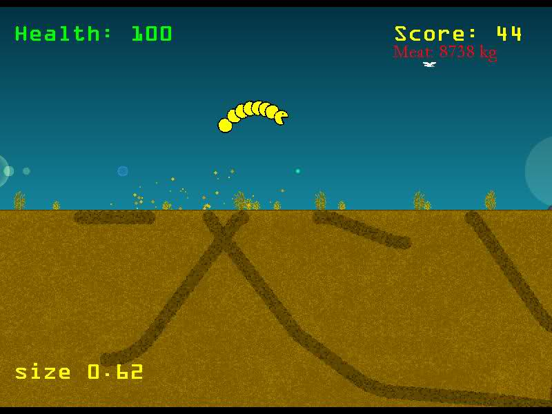
Ok, I know my score isn't superior, but, then again, I wasn't trying. Look at my worm, notice anything strange?
#346958 43 2007-07-24T18:28:21Z Sgt. Poptarts Eh, once I dropped a brick on Master Cheif's Toe and- Wait, that's about him.
Anyway, Once I was riding my bike and I hit a raised part of concrete (It was someone's driveway). Well, I flew off my bike and started to skid on the ground. I ended up with a few scrapes, but was quite suprised. You'd think I'd have more, but I didn't. Wich brings me to this. A long time ago, I was riding my bike down a hill, and I slammed on the frontal brakes. The bike flipped foward and thew me off, then came crash down on my skull. I got up with maybe a cut, but no head injury. I find this weird, as, the bike would've killed me. Some years after that, I was backing up, and a door stop impaled the heel of my foot. I looked at the back of it and I could literally see my bone. It hurt pretty bad, and so I went to bed. The next day, it was done healing. Then, there was the time I stapled my thumbs together and ripped them apart, not much happened there besides the fast that it was bloody. Of course, I laugh at pain, so most of these occurences weren't that bad. I've even had a big plastic..ball thing (It's hard to explain) and it knocked me unconscious for a few seconds. Anyway, let's see, I've had my teeth explode inside my mouth, staples impaled into my fingers, skin ripped off my leg, and fingers split open, yet I don't seem to mind.
Oops, I forgt to add this: When I was still a baby, I was sitting in my baby carrier thing on top of the table, suddenly, the carrier fell off and I slammed against the floor. After that, I was sitting on the bed, maybe 4 feet in the air. So, same thing happened, and I fell off and slammed against the floor. The floor was also wooden, and I was maybe...12-18 months old. So...yeah, you can imagine what that did to me.
Boy, that was a long and interesting post.
Note: Bonzai, don't try to fix my post, as, I have this thing with people editing my posts and fixing them. Mainly because I have tourettes, and people correct me and/or speak for me. Also, I feel kind of offended that you edited Master Cheif's posts, mainly because he honestly does try to make an effort to type. He wasn't doing it on purpose, and, yeah.
#346981 10 2007-07-24T20:22:42Z Sgt. Poptarts What the balls? I don't have the balls to. It hurts my balls just thinking about it.
#16379 1 2007-07-24T20:34:45Z Sgt. Poptarts Ok, faemir showed me this game. Basically, you are this little blue tear drop looking thing, and you go around space collecting space mushrooms...sound weird? It's actually a very ambient game, and kind of addicting.

Mmm Green Space.

Ooh, Red Space.

Blue Space.
Thost Funny Fungaloids.#347058 17 2007-07-25T00:52:06Z Sgt. Poptarts Look in the Data Folder. The file is in there.
#347174 25 2007-07-25T05:27:44Z Sgt. Poptarts Hmm, that sounds cool. You should upload it and let us try it out for fun
. I might get my brother to play it with me.
#347180 8 2007-07-25T05:39:08Z Sgt. Poptarts I'f fuse your name with mine. TwistWolf, WolfKill, Sgt. Twist. Oliver Twist.
Anyway, Kablizzy and Little fused would A. take 40 episodes and B. Their names would be Blittle Kabizking
#347262 41 2007-07-25T15:08:51Z Sgt. Poptarts 51. He lives about 2-3 hours from me.
#347263 11 2007-07-25T15:15:08Z Sgt. Poptarts Heh, have you gotten to the episodes where 1. Haruhi is battling the Computer Society's space..things. and 2. Where Haruhi Sings?
#347272 12 2007-07-25T15:53:28Z Sgt. Poptarts Wait, that means I can't use the internet...I believe my IQ is 118.
Anyway, I don't think there should be an age limit. Even though I hate kids, they should still be able to use the internet. Also, if they are dumb enough to give out their vital information, then let them suffer. I know that's a bad thing to think, but you've got to learn somewhere.
#347276 19 2007-07-25T16:02:06Z Sgt. Poptarts I like his current name better. At least now I'm bothered by the misplaced "w".
#347350 4500 2007-07-25T20:27:44Z Sgt. Poptarts 3/10
I've seen that too many times.
#347359 1076 2007-07-25T20:55:15Z Sgt. Poptarts 15-16
#347419 4 2007-07-26T01:09:57Z Sgt. Poptarts Mine is a 5-way Surround sound. Sound also comes from my speakers...and my headset.
#347517 32 2007-07-26T06:32:07Z Sgt. Poptarts Wow, that is really awesome. I hope to play this, and, maybe, you can show it to the creator and see how he likes what's you've done. Who knows, you may have yourself a new online game (that is, if you can, of course).
#347530 13 2007-07-26T07:12:15Z Sgt. Poptarts Heh, I love the last episode, that is, if you are watching them in the order they were aired. Where episode 14 (or 13) is the last and episode 01 (or 00) is the first.
#347714 2120 2007-07-26T20:00:48Z Sgt. Poptarts Here, I just made a low quality picture of my sexy face.

#347746 41 2007-07-26T21:50:31Z Sgt. Poptarts Wow, that's awesome, very nice job.
#347773 44 2007-07-26T22:34:17Z Sgt. Poptarts Heh, I can imagine you expanding this to something vert largy, like customizable worms, upgradable worms, and 8 player multiplayer matches (4 underground, 4 above ground). Then, have a story with different stages. That'd be awesome.
Also, if you could, see if you can add a volume control option, as, I talk on ventrilo, and I can't hear what anyone is saying as all I hear is people dying, and explosions going off.
#347793 50 2007-07-27T00:18:28Z Sgt. Poptarts Also, about the other stuff I said, I was mainly just thinking WAY too much, as, I don't expect you to put those in now, or at all.
#347893 375 2007-07-27T07:16:39Z Sgt. Poptarts 10/10 It's mario, so, instant 10/10 (no, I'm not in the wrong thread, so don't think that).
#347894 808 2007-07-27T07:19:37Z Sgt. Poptarts 98% Only because you keep requesting pictures of Haruhi.
#347899 4 2007-07-27T07:27:54Z Sgt. Poptarts #347904 10 2007-07-27T07:40:54Z Sgt. Poptarts Hehm I should probably use this program, it's probably make the game incredibly fun. As an added bonus, when I get mad at the ninja, I just kill him about a thousand times.
#348013 20 2007-07-27T15:49:30Z Sgt. Poptarts I just used this to watch them
Veoh. I mush warn you though, you'll probably feel really sad after seeing the last episode. As, I just never wanted it to end.
#348231 23 2007-07-28T05:27:06Z Sgt. Poptarts Hmm, the site's download speed it really slow. Can you host it on a better site? Maybe Mega Upload or Filefront?
#348257 8 2007-07-28T07:00:35Z Sgt. Poptarts .bmp. I like big, colorful pictures that take up loads of room. Mmm great fun.
#348301 23 2007-07-28T14:42:49Z Sgt. Poptarts The Juggler. Just to let you know, I do talk about other things. See, there's always IRC and Ventrilo for me to talk in. I mainly talk about every game I'm talking about, and, what's going on in my life.
#348302 10 2007-07-28T14:54:55Z Sgt. Poptarts It looks like a good movie, but, I'm not that big of a simpsons fan. I don't even watch the show.
#348408 4544 2007-07-28T22:14:47Z Sgt. Poptarts 9/10
Mmm, evil, Chaos, me like.
#349334 7 2007-07-31T13:18:23Z Sgt. Poptarts I like Metroid Prime better...and I mean the boss, not the game. Anyway, from all of these options, I choose Bowser, at least he was fun to beat.
#349398 30 2007-07-31T18:08:01Z Sgt. Poptarts Technorific.
#349529 41 2007-07-31T23:54:49Z Sgt. Poptarts flavored.
(don't post ick, for the love of god. half of you don't even know me.)
#349530 1021 2007-07-31T23:57:22Z Sgt. Poptarts #350229 1023 2007-08-02T13:46:56Z Sgt. Poptarts 
There you go.
#350419 2 2007-08-02T23:58:05Z Sgt. Poptarts I'd have to say all of them. Even though I do numbers 5 and 7. With number 5, I capitalize letters alot and I haven't a clue why. That, and Number 7. I honestly do type fast, that, and I have tourettes, and that affects my hands a bit, so they twitch. Luckily, for me, I correct myself. Also, I have ADD, can you tell?
#350463 4 2007-08-03T02:16:51Z Sgt. Poptarts No.
I am too much of a good person, someone will date me...eventually.
#351259 27 2007-08-04T14:59:53Z Sgt. Poptarts Platform - PC
Game - Worms Armageddon
Subject - Knocking the worm far right off the screen.
Record - Ok, I didn't make this score, but I'm not taking any credit. Score: 523 meters out. (or basically, they knocked the worm right, and it bounced along the surface of the water till it was about 523 meters, or whatever the games mesures stuff in)
Evidence - Sadly, no evidence. I took a picture in game on W:A, but it didn't save it.. I'll try to find the picture, maybe it went into another folder. Anyway, tghe score isn't THAT great, and everyone can do better, but I still Submitted it.
Also, the one who made the score was. Thecalcgenius.
#351378 10 2007-08-04T21:22:18Z Sgt. Poptarts Unreal Tournament and Unreal Tournament 2004. Best music ever.
#351469 6 2007-08-05T01:53:08Z Sgt. Poptarts #351539 2632 2007-08-05T06:52:21Z Sgt. Poptarts 9/10 It's Halo, Halo Wins.
#351661 18 2007-08-05T18:13:15Z Sgt. Poptarts The Juggler, Why get mad? It's THEIR OPINION of the soundtrack. If you don't like it, then get over it. No need to say all that crap.
Anyway, back on topic. Just so everyone wont have a fit, I also love the soundtrack from every kirby, mainly Green Greens. Another soundtrack I like, is the Soundtrack from Doom 1 and Doom 2.
#351755 4669 2007-08-05T21:55:53Z Sgt. Poptarts 10/10 It's awesome. The 3d effect also makes it look cool.
#351757 2177 2007-08-05T22:01:32Z Sgt. Poptarts 
This is me after a shower. Sexy, eh? (I forgot where the camera is..darn
)
#351765 2636 2007-08-05T22:18:40Z Sgt. Poptarts 9/10 Mmm Pixelated Video Game Breasts..
#352042 5 2007-08-06T18:06:24Z Sgt. Poptarts It's a great game, I die ALOT, but it's a great game
#352111 2184 2007-08-06T22:15:29Z Sgt. Poptarts 
Here is a better picture of me. I love my hair.
#352152 7 2007-08-07T00:01:24Z Sgt. Poptarts Hmm, right now I'm working on a level pack thing. It may not be 50 levels, but, meh. Also, I can't get past level 16, not that it's hard, but it wont let me proceed onto the next level..Or maybe it's level 17..anyway, I beat the level, and it still wont let me proceed, I even beat all othe levels over again...nothing.
Here are the first 3 levels of the pack, they aren't that great, so feedback would be nice.
Vortex.rar#352437 11 2007-08-07T18:51:35Z Sgt. Poptarts Hmm, it wasn't all that funny to me, but it was well syncronized, and was a great song.
#352495 26 2007-08-07T21:37:39Z Sgt. Poptarts Ah, you mean
OcRemix. I have maybe 40-50 songs from that site.
#352538 13 2007-08-08T01:15:40Z Sgt. Poptarts Ok, here is the full-ish version of the Vortex pack I've been working on. I lost my train of thought and decided to stop at level 7.
Vortex#16606 1 2007-08-08T01:50:44Z Sgt. Poptarts Well...er..just read the poll and answer. I love them, by the way.
#352837 36 2007-08-09T00:06:57Z Sgt. Poptarts Platform - PC
Game - Worms Armageddon
Subject - Most Kills with one shot
Record - 27 Kills
Evidence - Ok, this picture Sucks, but that's because I don't know how to turn the flash off.

Platform - PC
Game - Worms Armageddon
Subject - Most Health on one worm
Record - 765 HP
Evidence - I swear to you, this is true. The game wont take ANY pictures, and I didn't think of using the camera. If you don't believe this is true, then I want you to PM Thecalcgenius, Spawn of Yanni, JeR(K), or Sept. They've all seen it, and tried to take pictures as well.
#352845 2 2007-08-09T00:23:47Z Sgt. Poptarts 2/10 I don't know you well at all.
#352850 447 2007-08-09T00:27:07Z Sgt. Poptarts 10/10, Snipers are awesome.
Can you rate both of my names? Sgt. Poptarts and ChaosWolf.
#352854 5 2007-08-09T00:31:32Z Sgt. Poptarts 11/10...Let's just say, I know him quite well, all because of his Custom Title.
#352914 2194 2007-08-09T04:06:31Z Sgt. Poptarts 
This is me at 12 AM. I look like my father.
#353062 453 2007-08-09T15:39:06Z Sgt. Poptarts 1/10 It's so Generic.
#353063 4724 2007-08-09T15:40:03Z Sgt. Poptarts 9/10 So pretty.
#353196 7 2007-08-09T20:37:43Z Sgt. Poptarts Even though I haven't played it. It's probably 2.5D. Meaning, it's halfway to 3D.
#353304 2 2007-08-10T01:35:38Z Sgt. Poptarts Hmm, I tried it. At first, I thought, meh, this game isn't all that great. Soon after, I realized that the game is quite fun. Anyway, I personally like the Attractor, as, it does all I need to beat everything.
#353859 1035 2007-08-11T03:04:50Z Sgt. Poptarts 
I was messing with my Video card, and I allowed it to exceed 1024 x 760. Now, it's 1280 x 1024.
#353896 41 2007-08-11T05:11:15Z Sgt. Poptarts Platform - PC
Game - Worms Armageddon
Subject - Knocked really far right.
Record - 966
Evidence - Calc made this one. I'd have proof, but like I said before, the game wont capture pictures. This time, I had my camera out and ready, but Calc accidentally hit the next button, and it erased the score. So, my evidence is Calc.
#353915 86 2007-08-11T06:13:07Z Sgt. Poptarts Hmm, even though this does count as an advertisement, it saves thr trouble of spending long amounts of time on things like this. I have a forum that is in my sig. you may use that as a Hub for all of your gaming stuff.
#354171 540 2007-08-11T19:22:49Z Sgt. Poptarts I think I'm going to leave you all now. I'm getting tired of everyone. Not all of you, but some of you have finally pushed me to leave. I'm tired of getting puched around like I'm the biggest low-life human being. I'm just going to try to occupy my time with something else. So, I bid you all adu, and hope you all do great without me around.
Goodbye...Forever.
ChaosWolf/Sgt. Poptarts/Dustin.
#354425 2208 2007-08-12T06:25:57Z Sgt. Poptarts Even though I said I was leaving, I might as well reply to this. Kydo, I do take offense to that, as, I always make those expressions, and I'm not going to change them just because someone tells me to.
#354674 10 2007-08-13T01:02:51Z Sgt. Poptarts [wayofftopic]Oh god! I can't take it anymore. I need the forum. I only made it a day, and I just can't stay away. I was just a bit mad in the Leaver's Thread. [/wayofftopic]
Anyway,
Space Cowboy is a pretty good game. the game basically has you flying a ship and battling in the air. There is also a tank that can transform. It's your average MMORPG really, except the flying part...that...and you have to go to war. There are two nations, each with a Leader. The Leader is an actual guy, and you can elect people to be leaders. The leaders usually discuss with each other (There are 2 leaders. 1 for each nation) on when to declare war, and, or, when to make peace. In the wars, you have to fight to the death, when you die, you get teleported somewhere else. It's a great game.
Also, That Cabal Online game looks amazing. The problem...You have to be European to play the game, and I am not European, so that's a bummer.
#354811 284 2007-08-13T14:00:26Z Sgt. Poptarts Any open spots in Other Games? I visit there everyday, and I will be a good boy. (The only reason I'm making that so short is because I have to go to school in a minute).
#354954 565 2007-08-13T20:51:09Z Sgt. Poptarts Actually...After a day of deciding, I think I'll stay for a bit longer. It's impossible to go away from this place for more than a day.
#355379 46 2007-08-14T19:48:12Z Sgt. Poptarts Platform - PC
Game - Crimsonland
Subjects - Most time survived. Highest Hit Percentage within that time. High Score. Most Kills.
Record - (These are going in the order up top) 10 minutes 45 seconds, 100%, 275744 points, 2480 kills.
Evidence -

#355859 1046 2007-08-16T02:21:09Z Sgt. Poptarts 
Yar, she be changin' again.
#356490 14 2007-08-17T19:49:08Z Sgt. Poptarts I agree. Also, to everyone who clicked "I don't know what a Jaffa Cake is" Did you even google the things? Gosh..
#16802 1 2007-08-18T14:30:52Z Sgt. Poptarts Sonic Robo Blast 2. A pretty good Freeware Sonic the Hedgehog game. Basically, it's a 2.5D Sonic game, or, the scenary is 3D, but the sprites are 2D. It's your basic Sonic game, you jump around, find Chaos Emeralds, same old same old, right? Wrong. This game Also has 8-16 player Co-Op, meaning, you can have 8-16 people trying to defeat Dr. Robotnik. Also, whenever you get all the Chaos Emeralds, you unlock more levels in the game, there's even a Super Mario Level set. The game is also pretty moddable. It uses .wads as mods, and, people make some pretty worth while mods for it. I'd go on, but I'd rather you play the game some rather than have me spoil it for you.
Also, kirby, Blazeraid, GamingWolf, and I used to play this all the time.
#16810 1 2007-08-18T23:09:29Z Sgt. Poptarts So, I was looking around on Moddb, and I stumbled upon this game. It's a FPS, and, is a modification for Quake 3. What's awesome about it is that It's a standalone mod, so you don't need Quake 3 to play it. There are screenshots on the site, but I'll show some of them on..here (my god my grammar sucks tonight).


As you can tell, the game has some pretty nice graphics. The size of the game, though, is around 500MB, so everyone out there with Internet troubles, or download limits may have trouble.
WoP Download Page.#357300 11 2007-08-20T01:13:25Z Sgt. Poptarts Banzai Bill.
#357307 14 2007-08-20T01:18:48Z Sgt. Poptarts Nope. It's name is Bonzai Bill. It's the big Bullet Bill.
#357565 2270 2007-08-20T19:37:20Z Sgt. Poptarts Eh, don't worry Mysterypea. I have to wear those as well, and, I find them fun.
#16885 1 2007-08-22T19:41:54Z Sgt. Poptarts Lunia. A prertty fun MMORPG with a fun little twist, It's has some Action Arcade Elements to it. Basically, you choose from 1 of 3 characters, then, level them up. The battle areas are levels. Basically, what I mean is that. the first level is level 1-1, and it goes to 1-10, then you go to 2-1. When you start a level, you have the option of either making a private room, or joining a public room to fight in. Anyway, my descriptions suck, as you can see. To see what the game is like, I'd recommend you download it. Also, take some pictures:

The game contains a combo system. As you can see, my combo is crazy high.

This is what happens when you experiment.
Lunia#358368 3 2007-08-22T19:52:22Z Sgt. Poptarts Well. Mostly Harmless did. Anyway. Yeah.
My characters are as follows:
Belphegor
Wizard
Level 13
PseudoWolf
Healer
Level 6
I'm just going to post pictures here as well. Anyway.

Here is the current boss that I'm fighting.
...Still no replies? Ah well.
Here, have another picture. This is my level 16.

#358398 15 2007-08-22T21:39:53Z Sgt. Poptarts This is basically my first post in Serious Discussion...*GASP*
Anyway. I'm guessing we'll have some better weapons in 2012, even thoguh it's only 5 years away. So if a meteor DOES happen to come close, we can just use our Phaser Lasers to destroy. Problem Solved.
#358812 15 2007-08-23T22:59:27Z Sgt. Poptarts Gamer/Gamer/Gamer. I was even used as an example. I feel so loved.
#358820 5 2007-08-23T23:11:26Z Sgt. Poptarts I have not one, but about 3.
Cat.

Siberian Husky.
Finally.
Wolf.
#358852 6 2007-08-24T00:36:55Z Sgt. Poptarts Weekdays:
6:00 AM: Wake up and get dressed.
7:15 AM: Arrive at school.
7:30 AM: Head to Vocational school.
7:45 AM: Arrive at Vocational School.
10:45 AM: Leave Vocational School.
10:50-55 AM: Arrive at school.
2:22 PM: Leave School.
2:50 PM: Arrive Home.
2:50PM - 10:00 PM: Sit on IRC, Vent, and play games with friends.
Weekends:
8:00 AM: Wake Up.
8:01 AM: Get on computer.
2:00 AM - 6:00 AM: Pass out from Exaushtion.
Ah, the life of a gamer.
#359070 25 2007-08-24T19:52:17Z Sgt. Poptarts Make a Black drone that has Spikes all over it. Almost like a Flail. Call it the Snuggle Drone. (I reauested this in BWD's thread way back...but he was too lazy to make it.
#16932 1 2007-08-25T02:47:15Z Sgt. Poptarts #359193 1057 2007-08-25T04:31:45Z Sgt. Poptarts 
I like this wallpaper.
#359276 6 2007-08-25T14:09:45Z Sgt. Poptarts I'll be sure to add you to my friends list. I'm only on 3-5 though
.
#359300 8 2007-08-25T16:22:35Z Sgt. Poptarts Well, what do you mean? As, I'm always on the american server...
If you're talking about the squares, it doesn't matter.
#359589 3 2007-08-26T13:05:22Z Sgt. Poptarts #359717 5 2007-08-26T21:09:28Z Sgt. Poptarts #359729 8 2007-08-26T21:27:49Z Sgt. Poptarts #359743 10 2007-08-26T22:02:24Z Sgt. Poptarts Heh, I would put up mpre wallpapers, but I'll do that later. Anyway, thanks. Also, if you want to know how many I have, I have anout 400+.
#359787 13 2007-08-27T00:11:12Z Sgt. Poptarts #359793 755 2007-08-27T00:21:30Z Sgt. Poptarts 10/10
Only because I can.
#359796 8 2007-08-27T00:29:17Z Sgt. Poptarts My computer never turns off. Ever. When it does, I turn it on, start Ventrilo, mIRC, Steam, Msn Messenger, Skype, Hamachi, Last.fm, WinAmp, Xfire, and Daemon Tools. After that, I leave it sitting for weeks upon end.
#16973 1 2007-08-27T01:18:58Z Sgt. Poptarts I would've put this in Other Games, but, this is more artsy than playing the game normally.
Basically, it's me playing Doom 2 with some...modifications. Anyway, It's pretty boring at the beginning, but I promise it gets better. If you think this should go into Other Games, then move it.
Some art I made#359827 17 2007-08-27T02:06:06Z Sgt. Poptarts #359834 22 2007-08-27T02:30:47Z Sgt. Poptarts #16978 1 2007-08-27T10:57:25Z Sgt. Poptarts Everyone in IRC was talking about this last night, so, I was wondering you anyone is for or against Rocket Propelled Chainsaws.
#360030 26 2007-08-27T19:26:52Z Sgt. Poptarts #360083 2794 2007-08-27T23:07:43Z Sgt. Poptarts 9/10
Mmm Stick Splinter Cell.
#360107 10 2007-08-27T23:57:43Z Sgt. Poptarts I've done it twice. Both times when my internet have gone screwy. I wish I could say I hadn't, but thanks to those, I can't
.
#360180 31 2007-08-28T02:04:54Z Sgt. Poptarts #360402 5 2007-08-28T20:31:44Z Sgt. Poptarts Man, this is really fun. Also, Powerups = Instant Win.
#360707 3 2007-08-29T22:51:12Z Sgt. Poptarts I was going to make a topic. Anyway, we have it for the Xbox 360, and might I say. It's freaking incredible. Even though I haven't played it yet, My bro was playing it for 5 hours.
#360805 6 2007-08-30T02:51:53Z Sgt. Poptarts Hell no! I'm a drummer.
#360952 2293 2007-08-30T19:51:56Z Sgt. Poptarts 
Look, I'm happy.
(Don't you DARE say to me what the said in IRC. They said I needed braces, which I'm getting next week, and they said I needed liposuction).
#360962 35 2007-08-30T20:26:59Z Sgt. Poptarts #360983 7 2007-08-30T21:09:39Z Sgt. Poptarts #361223 1063 2007-09-01T05:31:21Z Sgt. Poptarts #361445 10 2007-09-02T02:20:28Z Sgt. Poptarts Breakdowns FTW.
#361704 41 2007-09-03T00:10:49Z Sgt. Poptarts The Firey mech wallpaper is my favorite.
1.

2.

3.

4.

5.

6.

7.

8.

9.

10.

11.

12.

13.

14.

15.

#361942 1065 2007-09-03T21:01:02Z Sgt. Poptarts 
Beat this.
#362020 1067 2007-09-04T01:14:03Z Sgt. Poptarts 1. Like I really care. It's really cool.
2. Because it looks nice, got a problem?
#362025 30 2007-09-04T01:28:04Z Sgt. Poptarts Techno. Why? Oonce Oonce Oonce. That, and I like the beats to the music.
Video Game Music. Why? I love video games, very good music.
#362164 6 2007-09-04T16:53:57Z Sgt. Poptarts Yes! I've dreams about a convention!
#362965 4 2007-09-07T19:42:17Z Sgt. Poptarts Ninjah.
#363027 15 2007-09-07T23:35:01Z Sgt. Poptarts #5 is the best.
#363294 51 2007-09-08T17:40:51Z Sgt. Poptarts Console: PC
Game: Worms Armageddon
Subject: Most feet...meters...whatever it is. Off screen.
Record: 3072 + -2500. Making it 5572 off screen.
Proof: The game wouldn't take pictures, and because we were so off screen, it messed up the ratings system. I never lie...so you should put it as Supported. If you don't believe me though (and I'll never forgive you). Then ask Thecalcgenius, Yanni, or Trogdor.
#363381 5063 2007-09-08T23:37:06Z Sgt. Poptarts 7/10 It seems too big to me. Also, Halo 3 will rock..I hope.
#363412 5 2007-09-09T01:09:19Z Sgt. Poptarts Wow, Vector TD was AMAZING. This is my finaly score on...beginner.
Attachment (lost): post-27-1189300159.png
#363606 5 2007-09-09T14:14:33Z Sgt. Poptarts That was fun, at first, I thought my internet had died. Anyway, this one lasted so much longer than they normally do.
#363608 6 2007-09-09T14:22:26Z Sgt. Poptarts My brother beat the game alst night. The last boss (Which I'm not going to spoil) Looks so awesome. Anyway, yeah, the game is incredible. I still haven't played it, but...yeah.
#363609 2841 2007-09-09T14:31:21Z Sgt. Poptarts 10/10 Explosions = Win.
Before you rate mine, remember that it's from Bioshock.
#363748 17 2007-09-09T22:31:59Z Sgt. Poptarts School Days: 6:30 AM
School Weekends: between 7:30 AM - 10:00 AM.
Summer: 1:00 PM - 5:00 PM
#17160 1 2007-09-09T23:38:29Z Sgt. Poptarts Which Signature us better?
I made the first one in paint. All I added was "ChaosWolf" and I Cropped it
The Second was in Photoshop. I added the Water in the background, and I added ChaosWolf to the bottom right.
#363807 1073 2007-09-10T01:54:50Z Sgt. Poptarts 
I made it myself.
#363999 46 2007-09-10T21:45:54Z Sgt. Poptarts #364042 18 2007-09-11T00:07:33Z Sgt. Poptarts I've never been warned, I like to stay with the rules...most fo the time.
#364562 17 2007-09-13T02:07:21Z Sgt. Poptarts "Does this rag smell like Chloroform to you?"
Works every time.
#17229 1 2007-09-15T06:44:04Z Sgt. Poptarts On Steam, there is a game that comes with The Orange Box (It's a compilation of Half-Life 2, Half-Life 2: Episode 1, Portal, Team Fortress 2, Half-Life 2: Episode 2, and Half-Life 2 Lost Coast) It's called Peggle Extreme, and, It's so much fun. It only contains 10 levels, and is a demo, but still. Anyway, Post here if you have played it or not. Also, sorry about my lack of explanation, I'm quite tired so I'm not function properly.
#17231 1 2007-09-15T13:55:24Z Sgt. Poptarts I'm going to put all of the Signatures I make here, please note that I'm rather new to making these, so if they suck, you'll know why. I'm not accepting requests, as, I never finish anything that I do. I really only have one that I've made, and I usually make them with all of the simple tools in Photoshop. I like abstract things a bit too. Also, you can take the things I make, just add your name to it yourself and credit me. I'd add your name for you, but I tend to make everything not blend with each other.


(^ It probably sucks, to you all, but I like it.)


#17243 1 2007-09-16T17:41:04Z Sgt. Poptarts Ok, so, I've been playing a game called Threadspace: Hyperbol. Basically, you are a ship in a battlefield, (look in the picture) and you have to destroy all of your enemies. Sounds like your average game, right? Here's where it gets interesting, Your ship can't move all over the place. Meaning, you have to move a few feet then wait for your engines to recharge. This means that you have to use strategic thinking to make your kills. You can "spin" you weapons to attack people, or, shoot your bullets around corners. You have to fire off your command center, deploy it, then produce weapons for yourself. Not every weapon is offensive, there are also defensive weapons. Two, in fact, that I use all the time. The first is called the Singularity, it's basically a black hole. Every bullet that it sucks in causes it to stay open longer (If you upgrade it, it grows for every shot it swallows). Next is the Repulsor. It does the exact opposite of the Singularity, or, it blasts the projectiles away from it. The Repulsor's upgrade allows it to repel the projectiles at a greater velocity which will A. make the target easier to hit, and B. do more damage. At the moment (from now till the 21st) the game is only $10. Normally it's $20. Anyway, if you were to download the Demo, you'd have to have Steam. Anyway, the demo let's you play all the levels in Objective mode off line forever, and play online for 4 hours. In the full game, you can create your own levels.
Threadspace: Hyperbol
These Pictures will update from time to time.

Both of these are from My ship. The reason why I have 2 is because I want to show the ship screen, and my medals.


#365677 39 2007-09-17T19:29:13Z Sgt. Poptarts I'm 16. I joined when I was 14.
#365678 6 2007-09-17T19:41:20Z Sgt. Poptarts I've thought about it during depression, but never seriously enough to actually do anything about it. Never to the point where i'd ever do anything physically.
Also the same with me.
#17288 1 2007-09-21T23:24:46Z Sgt. Poptarts Ok, so, on Steam, they are now allowing people to make groups. Faemir made the "Metagamers" group, and, I am wanting more people from metanet to join it. If you would like to join it, ask me, and I'll add you. I think I have to be on your friends list to add you though.
Metagamers#366764 5 2007-09-22T16:49:43Z Sgt. Poptarts Actually, within my link, if you look at the website's menu bar, it very clearly reads "What is Steam?". Clicking that may tell you what it is.
#17302 1 2007-09-23T03:34:57Z Sgt. Poptarts So, I was at my Step-dad's bros' house, and they showed this to me. I think it's utterly awesome.
Harder Better Finger Stronger#367168 18 2007-09-24T02:31:36Z Sgt. Poptarts Put it this way. If rissy were to leave #n, the universe would eat itself. Why? Because he is what holds the universe together, without him, the universe will be nothing but nothingness.
#367173 1078 2007-09-24T02:51:43Z Sgt. Poptarts 
I like this Blue theme. Even the icons are blue.
#367291 12 2007-09-24T19:32:29Z Sgt. Poptarts #17323 1 2007-09-24T22:39:01Z Sgt. Poptarts So, I saw smartalco's topic and thought that we need a topic on which of these two are better. I vote Scrubs, as, it doesn't make me gag.
#367334 102 2007-09-24T22:44:54Z Sgt. Poptarts Add some of these for me.
PC - Portal
Half-Life 2: Episode 2
Half-Life 2: Episode 1
Team Fortress 2
Threadspace Hyperbol
#367729 1083 2007-09-26T19:40:48Z Sgt. Poptarts #367901 1085 2007-09-27T22:32:37Z Sgt. Poptarts Because TF2 is crap to me. It's crashed my computer 3 times. They say they've fixed it, but come on, it's Steam.
In Fact, I'll edit the image in a sec. It still doesn't have TF2, but oh well.
#367911 1087 2007-09-27T23:13:53Z Sgt. Poptarts Are you talking to me? As, It's not Vista. I'm using XP.
#367913 15 2007-09-27T23:15:41Z Sgt. Poptarts I never say the word. I hate the word, I even try to tune out the people who use the word. I don't want to hear it.
#367917 1233 2007-09-27T23:35:56Z Sgt. Poptarts Happy Birthday Yanni.
#367966 1089 2007-09-28T02:38:55Z Sgt. Poptarts Why yes, yes I do. I take it that those are faulty when it comes to that game?
#368190 6 2007-09-29T02:35:11Z Sgt. Poptarts 
Heh.
#368195 50 2007-09-29T03:44:22Z Sgt. Poptarts Well, I HAD something typed up and ready to go, but Opera crashed on me and I'm NOT typig it all again.
Anyway, part of what I DID type, you can turn on Unlimited Ammo and Grenades in Multiplayer. They even added Zombies to the Custom gametypes list. Also, you can unlock different bits and pieces of armor. There's much more, but I'm not willing to type it all again.
Anyway, so far, my favorite weapon is the Gravity Hammer, Deployable: Trip Mine, Vehicles: The Hornet and the Prowler.
#368199 52 2007-09-29T04:07:51Z Sgt. Poptarts That would be Halo Wars. It's an RTS. It should be good, or, I believe it will be anyway.
#17363 1 2007-09-30T01:19:20Z Sgt. Poptarts So, I was in IRC today, when LF showed me this game. It's basically a multiplayer Harvest moon, complete with growing crops, shopping, fishing, mixing drinks, mining, digging, and finding hidden items. There's not much to be said, only that today we had 4 people playing it in a server for 7 hours of planting, mining, and fishing. It's quite fun.
Farmhands.#368429 8 2007-09-30T06:55:27Z Sgt. Poptarts Eh, I use Hamachi to play it. Sadly, it's only 4 to a server, so we have to have multiplae servers.
#368523 10 2007-09-30T14:40:40Z Sgt. Poptarts Ok, I'm in that Hamachi Server. My server on Farmhands will be up for a while..I suppose, and we have just about every item. SO..uh.. yeah, join it when you can. By the way, my Hamachi IP is GamingWolf's old Hamachi IP, weird.
#368524 8 2007-09-30T14:43:51Z Sgt. Poptarts Yes, I can. In face, just the other day, my family and I were trying to say every Tounge Twister we could think of...my mom messed ALL of them up.
#368525 11 2007-09-30T14:45:40Z Sgt. Poptarts I like it crunchy, then, to top it all off, I dip it in Maple Syrup...So..good.
#368548 12 2007-09-30T17:32:08Z Sgt. Poptarts Try this one. "How many sheets could a sheet slitter slit if a sheet slitter could slit sheets."
#368886 106 2007-10-01T21:57:16Z Sgt. Poptarts Add this one please.
Xbox 360 - Halo 3
#368936 2 2007-10-02T02:03:39Z Sgt. Poptarts Game Fuel FTW! I have an Aluminum bottle on my TV from when I drank it. Mm, Halo bottle. Anyway, yes, I love the stuff, I went through around 12 cans of it in a day. Sucks how it's going away though.
#368946 5 2007-10-02T02:44:12Z Sgt. Poptarts 
Sorry for the crap quality, my camera is retarded.
#368953 2338 2007-10-02T02:55:44Z Sgt. Poptarts 
Look at my hair, it's so pretty..and soft!
#369155 55 2007-10-02T21:56:58Z Sgt. Poptarts Here, I just uploaded some pictures to Bungie's site.
This is my Elite.

Hayabusa Armor.

#369686 1093 2007-10-04T23:12:22Z Sgt. Poptarts 
That Alienware thing messed with my computer.
Anyway, This is my new wallpaper, I took it while playing Halo 3. my mIRC is a Drone from N. Also, in that Halo picture, I'm the guy in blue who is about to get killed.
#369692 5264 2007-10-04T23:33:16Z Sgt. Poptarts 10/10
Ooh, pretty.
#369695 87 2007-10-04T23:38:12Z Sgt. Poptarts I think I should be a candidate. I'll be known for my endless ways I can get things in my eyes.
#369741 12 2007-10-05T02:35:14Z Sgt. Poptarts While I was away, I had a server up. Yahoozy was in there, and he stumbled upon this. Leave it to Yahoozy to find something awesome.
Update: It seems Sept was there as well.
Attachment (lost): post-27-1191551714.png
#370277 16 2007-10-07T13:42:20Z Sgt. Poptarts Even though, I've never tasted a bottle of the stuff. mine would tase like Bawls.
#370315 8 2007-10-07T18:53:29Z Sgt. Poptarts #370342 14 2007-10-07T20:47:18Z Sgt. Poptarts I hate milk. I have Acid Reflux, so it gums my throat up and, feels REALLY wrong. Anyway..er..yeah.
#370591 19 2007-10-08T19:02:41Z Sgt. Poptarts I'm going to petrify people. I have weapons, and all I have to do is dig around my closet to find some scary masks. Then, I'll stand on my doorstep and scare little kids. Life is good.
Also, if I WAS going to go out. I'd dress up as one of those guys from that McDonalds game who kill the cows.
#370595 4 2007-10-08T19:17:25Z Sgt. Poptarts The Omega Pirate, Metroid Prime, Ridley, and Thardus were some really fun and hard bosses from Metroid Prime.
#370708 18 2007-10-09T01:30:28Z Sgt. Poptarts mIRC.
Paint.
Notepad.
Winamp.
Threadspace Hyperbol.
Worms Armageddon.
#370964 4 2007-10-10T03:01:43Z Sgt. Poptarts I have Acid Reflux, so Spicy gives me heartburn. Nevertheless, I LOVE spicy food.
#371026 305 2007-10-10T10:40:39Z Sgt. Poptarts Wow, they finally put sonic into the game. It seems many people want to be part of SSBB nowadays.
#371322 21 2007-10-11T17:54:21Z Sgt. Poptarts I have Photoshop CS2. I'm learning how to use it...very slowly, and I don't like online tutorials that much. Although, I really do need a grunge tutorial. Anyway, I made my avatar and signature last night. They aren't the greatest, but I feel that I did a pretty good job.
#371323 5291 2007-10-11T18:47:41Z Sgt. Poptarts 10/10, gotta love it.
#17520 1 2007-10-12T00:34:32Z Sgt. Poptarts So, I just played Portal today, I've had it since yesterday, but only thought about installing it today. I beat it in 2.08 hours as well. Anyway, I've fallen in love with the Companion Cube. Anyone else played it and fallen in love with it?
#371366 6 2007-10-12T00:35:22Z Sgt. Poptarts I'm slowly adding more signatures to the list. I've added two recently. Check them out.
#371456 8 2007-10-12T11:25:51Z Sgt. Poptarts Anyway, you're all welcome to use them if you wish. Just put your own name on it (I'd most likely mess it up with a funky colored font) and credit me.
#371482 4 2007-10-12T14:14:39Z Sgt. Poptarts Portal
Animator, next time. Google it.
#371547 1098 2007-10-12T21:14:42Z Sgt. Poptarts 
I had to change my theme, it was messing with the Source engine.
#371578 5296 2007-10-13T00:56:30Z Sgt. Poptarts 9/10 Mmm, Compact.
#17539 1 2007-10-13T23:13:51Z Sgt. Poptarts So, from time to time I might make some wallpapers from N. So far, this is all i've got. Most of this, though, wont involve me editing the item, enemy, and or ninja in any way. Just maybe adding a background that I think suits it.
Spoiler: Drone

#371917 6 2007-10-14T12:39:40Z Sgt. Poptarts ANyway, about the game, if anyone needs any help completeing one of the advanced challenges or something, feel free to ask here. I've completed every Advanced challenge, and I'm trying to beat all of the timed challenges, which, is going nowhere. I think I can beat Chamber 14 with only 9 portals though. It just takes some thinking, that's all.
#371928 7 2007-10-14T14:27:36Z Sgt. Poptarts I vote yes. I might need a guide for a game, or, maybe even a tutorial for Photoshop, and searching does have it's limitations.
#371979 4 2007-10-14T19:03:40Z Sgt. Poptarts Yes, I made the background.
#372034 3 2007-10-14T22:07:30Z Sgt. Poptarts 500 normally.
about 1300 total.
#17554 1 2007-10-14T22:55:56Z Sgt. Poptarts So, Luminaflare went to the UT3 Official website, and noticed that the Beta Demo of it is out. From what I can see, it's freaking amazing. It runs well on my PC, which suprises me. Anyway, discuss it here. I'll even link you to the demo. As a quick reminder, though, it's 741 MB. Also, in the game, you can drive the Darkwalker, which, is a 3 legged mech that fires lasers from it's eyes.
Also, sorry for the horrible description up top..I'd rather not ruin it.
PS. Oh, what the heck. Here is the Darkwalker. It's nothing special in the screenshot, but in motion..it's awesome.
PPS. Ah, screw it. pictures.
Spoiler: Darkwalker

Spoiler: Hoverboard Trick

Spoiler: Flak Cannon (New look)

Spoiler: Redeemer (New Look)

#372263 1101 2007-10-15T21:40:37Z Sgt. Poptarts 
Companion Cube FTW!
#17568 1 2007-10-16T10:40:13Z Sgt. Poptarts So, a few nights ago we started to revisit Gunbound Classic. Now, we need more players.
Gunbound Classic
New to Gunbound? Gunbound is a worms like game, where you choose a Mobile, or your bot that attacks other people, and fight. Each Mobile has 3 different modes of fire. Some mobiles, like the one I use, also known as J.D. has an attack that sucks people into holes, thus, ruining their angles, and, messing up their shots. The game is turn based, so it's kid of peaceful in a way. Also, in the game, you have an avatar, A.K.A, the person that rides your mobile. Whenever you start a new character, you get about 500,000 gold, to buy some items to make it look not so Generic. Anyway, I'd add more, but I have to get on the bus in a few minutes. so I'll stop here, and let you try thr game. Before I go, though, I'll put some pictures in here.
Ugh, ok, this is all I have. It's nothing much, it's only the waiting room, but, as you can see, everyone looks pretty cool. Also, this is from back when GamingWolf was still here...I miss him.

Here's another. This time, LF and I are fighting, I have one of the secret mobiles..

(Also, as you can see, we've added more people to the Metanet Clan. what used to be 5 is now 45.
#372738 25 2007-10-18T04:40:12Z Sgt. Poptarts Or, you could just nail all of his furniture onto the ceiling of his room. Sure, it'll take a while, but man...wait till you see the look on his face.
#373019 11 2007-10-19T15:39:16Z Sgt. Poptarts Yes, and I really do miss the Companion Cube, and the fact that I had to kill GLaDOS, she was really funny.
#373169 15 2007-10-20T07:01:43Z Sgt. Poptarts Here's a little something we some of us saw today. A huge force beam. Use the force, one would say.

Here's another. This one has Blazeraid using the Knight mobile, one of the 2 hidden mobiles.

#373496 1106 2007-10-21T19:46:16Z Sgt. Poptarts 
Thar. Nothing special. The thing in the bottom right is Winamp 5.5. I love it so.
#373568 1108 2007-10-21T23:37:52Z Sgt. Poptarts What do you mean by theme? Wallpaper, or actual Desktop Theme?
#17665 1 2007-10-25T13:10:20Z Sgt. Poptarts Ok, so, I would type a description, but I'll use the one from caiman.us. I don't take any credit for this.
"An excellent survival game.
The game starts with a nice cutscene where you see yourself struggling to keep your boat floating in a heavy storm. The boat explodes and as expected, you strand on an island. The objective of the game is doing some quests (either given by a certain situation or an NPC) that will help you get closer to your cosy living room back home. The quests are quite easy, but you need to put some effort into it. Of course, there is much more than just that. You have to make sure that your tummy is filled, that your throat is oiled and that your eyes may lay down or else you will lose health and eventually die. Food, water, defending yourself from dangerous animals and shelter is something you will have to take care for on a daily basis if you want to survive. Food can be gathered by hunting animals, water can be found by pressing leaves or drinking from a well, an arsenal of weapons will need to made for your defence and a shelter will require your construction skills. You might have noticed, but you won't come far when you don't have the proper tools. If you start experimenting with the resources at hand, you can easily make your tools and weaponry. A stone and a branch will make a hammer or a spear, a branch and a vine will make a slingshot, etc. Same goes for many other things, but I'll leave it up to you to worry about it.
The game offers a lot of freedom. You can decide whether you want to go fishing or you can go hunting or you can spend some time building a tree-house or you can start wondering what you can do. Really, there are many things you can do and it is really difficult to get bored. The `Adventure mode` does not give you so much freedom (limited resources and all) but the `Random Island mode` doesn't give you any quests and there you can really enjoy your freedom at full.
I will advise that there are some quests that makes you roll joints or harvest marijuana leaves and it is up to the parents consent if they would let their kids play with this game or not. Fortunately, the game itself advises against the use of marijuana and the effects of smoking a joint in the game does not contribute to your survival. The input of it in this game adds a humoristic tone to the game and that is not such a bad thing in my opinion.
The graphics are nice, the sound is terrific and the gameplay is excellent. This game has really impressed me and the makers have made a tremendous effort in making it. This game is well worth your time downloading and playing."
Of course, I'll add some pictures of my own to show a little bit of it.
First, in the game, you can plant stuff. I went a little overboard, and did this. (AF, though, did MUCH more) If I can remember, my grape vines are set up in a 15 x 8 patch. and I have 43 berry bushes.

This is my Inventory. Along with those 120 grape vines, I can plant 420 more, and/or make wine from them. I also have a Scythe, Machette, Crossbow, Pickaxe, Axe, Spade, and a Hammer. Along eith other assorted things that you can work out.

Finally, this is the skills menu. As you can see, I have discovered around 5 skills. Sadly, I think those are the only five. Anyway, As you gain more points, you can do more. Like, my planting skill isover 200. Because of this, I can make a Herb Patch and plant branches to grow trees. Digging on the other hand, allows me to find very rare items as I level up.
 Stranded 2
Stranded 2#374499 11 2007-10-26T02:08:22Z Sgt. Poptarts #374613 7 2007-10-26T17:18:29Z Sgt. Poptarts You think that's crazy?
Today I went to school 30 minutes late, and I was searched for Drugs. Then, there was a bomb threat in the girl's bathroom....that was fun
.
#374620 5 2007-10-26T17:42:26Z Sgt. Poptarts I do, end of story.
#374842 7 2007-10-27T16:43:54Z Sgt. Poptarts I got to vocab level 1 and realized that it was boring. In the long run, I fed them 10 grains of rice.
#374928 5 2007-10-28T00:54:23Z Sgt. Poptarts That's actually really cool, It needs music though.
Also, No! Don't leave, I'll miss your sister too much!
#374937 6 2007-10-28T01:51:01Z Sgt. Poptarts We need Oxygen powered cars. Basically, there's this tube that you have to breathe into, steady breathing allows for a nice, safe trip. While Hypervetilating might lead to a high speed and slightly devestating trip.
#374971 35 2007-10-28T06:13:42Z Sgt. Poptarts 17 seconds. I have Restrictive Lung Disease. Meaning, unlike most people who have between 95% - 110% Lung capacity (Yes, 110%), I have between 65% - 70% Lung capacity most of the time...[Sarcasm]It's fun[/Sarcasm]
#375033 6 2007-10-28T15:06:59Z Sgt. Poptarts Uber_Haxor!
Mmhmm, yes. Nyah.
#375034 7 2007-10-28T15:08:11Z Sgt. Poptarts #375249 8 2007-10-29T10:41:06Z Sgt. Poptarts Yes
Yes
Icydragon5
Yes. I don't play it much though. I play my comouter instead.
#375315 26 2007-10-29T19:09:55Z Sgt. Poptarts Erm.. thanks to AF, I think he got me BACK into the game...there goes anither portion of my life (Yes, I do have a life...) Anyway, now, there are pets, and I bought an egg for 150,000 penya. Once I level it up (by converting quest iems into food, then feeding the egg) then it'll become one of 7 different animals. These animals are chosen at random, and, some are rarer that others. Anyway, it takes (and this is actually quite a bit) 1000 bags of food to take your egg's exp up by 2%. My egg is at 4.56%..or something like that.
Anyway, for a better explanation, please visit
This.
#375316 5 2007-10-29T19:15:12Z Sgt. Poptarts Hmm, I love fries. Chips are AWESOME, but I have a fear that one day one might impale my gums, and/or teeth. and popcorn annoys me. The kernals get lodged in my throat, and I end up coughing for hours upon end. SO, I'll have to go with fries...Good old fashioned salty, greasy, Fast Food Grade, Fries.
Also, just to throw this out there. BAM CHICKA WAH WAH!
#375395 2 2007-10-30T01:50:56Z Sgt. Poptarts Wired, very very wired. It's basically the Wire Safari, home to a slew of creatures, from innocent dust bunnies, to the dreaded Power Stripasaurous. Once, in fact, I got lost, and had to survive on bits of plastic and lint for 3 days.
Anyway, yeah, I'm pretty...Wired.
#375402 10 2007-10-30T02:16:20Z Sgt. Poptarts Eh, I believe him, I believe in the supernaural, aliens, basically, anything that has to do with unknown things. If he says he saw green lights in the sky, then I trust him.
#375608 36 2007-10-30T23:10:17Z Sgt. Poptarts Wow... It took me about a day to get to level 25, or something like that. But for you to get to level 20 in 6-7 hours, that's pretty good.
#375780 41 2007-10-31T19:06:41Z Sgt. Poptarts Hatching your egg!
I can't wait to see what I get out of mine. I'm hoping it's somewhere along the lines of Dragon or Unicorn..maybe an Old Fox.
#375829 21 2007-10-31T22:48:00Z Sgt. Poptarts Doom 1. I beat it at about 2-3 years old...meybe that's why I'm so...weird.
#17753 1 2007-11-01T02:30:03Z Sgt. Poptarts Just a thought, Choose an answer and make a list. (This could go on forever...)
#375911 4 2007-11-01T02:42:49Z Sgt. Poptarts Oh how I wish this was in B&T...
Well, if it gets out of hand (Which I do imagine it will) then It should be moved to B&T. Until then, though, I think it'll be fine here.
#375985 7 2007-11-01T10:38:53Z Sgt. Poptarts Condog, what you seem to not realize, is that all these lists are real, I have ACTUALLY gotten this stuff stuck in my eye. Why else wou'd've made this topic?
#376060 2367 2007-11-01T19:56:49Z Sgt. Poptarts My...my eyes have just melted into my stomach. That was great though..
#376099 55 2007-11-01T22:29:17Z Sgt. Poptarts Well, tonight, I might get on, but the chances may be very slim. I have homework, and you all know what I usually do instead of homework.
#376324 17 2007-11-02T19:37:59Z Sgt. Poptarts The kernals get lodged in my throat, and I end up coughing for hours upon end.
have you tried chewing
hmm, depends on the type of chip/fries, only popcorn at the movies and covered in the fatty, heart-attack inducing, buttery stuff
Err...um..Yeah, I really should. Last night I choked on a Carrot O_o.
#376355 3 2007-11-02T22:23:06Z Sgt. Poptarts Because HE obviously has a social life.
#376475 64 2007-11-03T04:26:59Z Sgt. Poptarts Pretty much, yes. The only difference, is that you can link magician skills in any order you's like.
Also, do you have to sign every post you make? That's what your signature is for.
~ChaosWolf
#376575 69 2007-11-03T13:01:01Z Sgt. Poptarts Yeah. Anyway, for me, I'm pretty good. My damage is about 1500 per attack. My skill shoots 12 arrows which equal 1500 damage. This skill fires 5 times., so, I do roughly 7500 points of damage, and the great thing about it is that the skill fires magical arrows, so it doesn't take any of my arrows.
Ah, Level 32...
...Life is great.
#376577 57 2007-11-03T13:03:27Z Sgt. Poptarts Heh, yesterday at my school, half the class was playing Guitar Hero 3...It was really great. I, though, didn't watch. Anyway, I like the new music in the game.
#376748 72 2007-11-04T00:50:24Z Sgt. Poptarts Yeah, the egg takes a LOOOOOOONG time to level up. Basically, every 2000 bags of feed are needed to take it up by 2%. It needs 99% to pop a pet out.
~ChaosWolf
#376772 75 2007-11-04T02:03:21Z Sgt. Poptarts What quest item do you have to get from them? As, tell us that, and we can most likely tell you what to kill.
#376816 78 2007-11-04T04:57:21Z Sgt. Poptarts Ugh, I was really hoping I would get to play Flyff with someone this weekend, but i guess nobody is online
. Hopefully tommorrow...er..today, someone will play it with me, maybe Kablizzy even.
~

#376931 1118 2007-11-04T21:19:54Z Sgt. Poptarts 
Yes, yes, I know, the wallpaper didn't change. I just want you all to guess those icons on my desktop.
#376973 17 2007-11-04T23:49:34Z Sgt. Poptarts My image updated.

#377117 2 2007-11-05T11:26:24Z Sgt. Poptarts Heh, you WOULD make the topic about this. I used to play (and believe me, I played WAAAAAAY too much), and I have a level 32, I do beleive. The only reason why I stopped, though, is because I would try to get on and it would say the server was down. I had an A Gear. Siege Mode FTW. kai also played this, he has a level 36 or so...yeah, it was great.
#377237 1120 2007-11-06T01:46:42Z Sgt. Poptarts Eh, people kept Critisizing me about my computer, so I went back to this. I think it looks better, but Templex decided to Cuss me...Yeah.

Also, the icons, from left to right, it's: Games, Doomsday Kickstart, Gunbound Classic, Flyff, Toribash 3, Foobar2000, Ventrilo, mIRC, My Documents, TuneUp Utilities, Control Panel, Rocket Dock Settings, and Recycle Bin.
#377248 2 2007-11-06T02:37:50Z Sgt. Poptarts I'm always on the forums, even if I'm not here.
#377338 2377 2007-11-06T15:56:43Z Sgt. Poptarts Hahaha! take super extra large picture of me!
OOPS! POW!

SURPRISE!
#377421 17 2007-11-07T01:20:47Z Sgt. Poptarts Um, well, some goes on my desk, some in my pants, some in my hoody, some under my monitor. I'm great with money..
#378031 37 2007-11-09T21:35:44Z Sgt. Poptarts I need glasses when I'm on the computer. I don't wear them because...I'm lazy!
#378035 6 2007-11-09T21:38:35Z Sgt. Poptarts No, no, I think it's down. It's said that to me every time I'm tried to connect to it, and don't give me the firewall stuff. It must be down, for good.
#378129 13 2007-11-10T05:20:22Z Sgt. Poptarts #378482 1123 2007-11-11T07:19:01Z Sgt. Poptarts 
Yes, I changed it after 5 days. I changed the icons, so, if you guess them, then you are a hacker.
Also, as you can see, I really do enjoy changing the stuff on my computer. Now, you tell me, am i on Vista, or XP?
#380417 32 2007-11-18T03:44:29Z Sgt. Poptarts I got ISTJ...interesting.
#380419 21 2007-11-18T03:47:52Z Sgt. Poptarts 0.6, I win.
#380480 10 2007-11-18T06:29:47Z Sgt. Poptarts 1280 x 1024
#380676 5548 2007-11-19T00:41:06Z Sgt. Poptarts 6/10 Mmm, Skates.
#381309 3 2007-11-20T21:43:50Z Sgt. Poptarts Ok, so I just got the full game. Can someone change the title of this to Unreal Tournament 3? Yeah. Anyway, we can now talk about the game in this, and, show off our characters. this is my current character.

Sorry for being so demanding.
#382005 1029 2007-11-23T00:23:19Z Sgt. Poptarts 50%
#382144 7 2007-11-23T05:39:29Z Sgt. Poptarts I recently found out that my computer's graphics card ia awesome. I turned the settings up to their max, and there isn't any lag...PERIOD.
..It look astonishing...

#383124 9 2007-11-25T22:30:51Z Sgt. Poptarts So, I just installed the game, what server inside of Tryesti (whatever is it) are you in...Nevermind...I figured it out.
Now that I play it...It's so much fun, I did one of those dungeon quests, and had to kill 51 enemies, the floors were drenched with blood
. Anyway, I'll put up pictures of my character in a minute. I have a Female Magician, Level 10.


My damage..yeah.
#385288 2 2007-12-02T06:08:54Z Sgt. Poptarts Here, check this out. LF and I were driving around under water, and found this formation of Coral..Does it look liek a cat to you?

#385295 20 2007-12-02T06:24:58Z Sgt. Poptarts The theme(s) to Tetris, and, I don't care if it's from a game or not. Point is, I've listened to them WAY more that just 100 times.
#385299 58 2007-12-02T06:38:53Z Sgt. Poptarts Daft Punk > Electronic
DJ Micro > Electronica
DJ Tisto > Electronica/Dance
Great to listen to if you're into that sort of thing.
#385373 6 2007-12-02T15:02:32Z Sgt. Poptarts Actually, We played a game that lasted for 5 hours... It was crazy.
#385444 8 2007-12-02T20:11:41Z Sgt. Poptarts Why yes, yes they can.
#385488 1147 2007-12-02T22:19:32Z Sgt. Poptarts #385497 10 2007-12-02T22:41:48Z Sgt. Poptarts LF is the only person that I know of who has it registered, and he is in bed.
#18247 1 2007-12-03T01:36:22Z Sgt. Poptarts Mmm, OcRemix, home to some very nice music remix. What kind of music you ask? Video Game!
Use this thread to post some of your favorite songs from the site.
OcRemix
Yoshi's Island - In Pieces#386611 11 2007-12-05T16:55:57Z Sgt. Poptarts I like cats. I'm allergic to them, but I don't care. I've had my at since he was a kitten and I was in the 5th grade...so..6 years. He loves me, and, will protect me. He's also freaking huge.
#387266 41 2007-12-08T01:05:54Z Sgt. Poptarts You think that's stupid? They make you pay roughly $100 a week if you want to double the amount of cash you get per game.
#387466 14 2007-12-08T19:29:33Z Sgt. Poptarts Techno, Electroni, Video Game Music, Hard Rock, Soft Rock, Punk Rock, Classic Rock, Synthpop, Dance, Rock Pop Hip Hop, Dub Reggae, Psychadelic, Trance, Psy-Tance, World, Ambience, Rock, Pop... You know, basically everything..
#387720 9 2007-12-09T17:25:13Z Sgt. Poptarts Also, The Spike Grenade fires shrapnel in the way the stem of it is facing. Meaning, stick it to a wall, when someone walks past, it explodes, shapnel engulfs them, and Tada! Dead guy on your doorstep. I suggest using them when someone is inside a bubble sheild as well...it's great.
#387741 1158 2007-12-09T18:39:02Z Sgt. Poptarts This is my laptop. XP or Vista?

#387859 6 2007-12-10T01:06:52Z Sgt. Poptarts Go to Dafont, and look at "Cold Night for Alligators" or "Gismonda" those are pretty good.
#387903 27 2007-12-10T03:24:45Z Sgt. Poptarts achievable VlAAGlRA$1.25 mothball ClAALljS$1.40 clastic
....Yeah, I got nothing...
#388223 2 2007-12-11T03:36:47Z Sgt. Poptarts Try Tuneup Utilities, It works like a charm.
Here.#389556 3 2007-12-15T05:50:46Z Sgt. Poptarts Fraxy
This'll do you some good...trust me, it's great.
#18470 1 2007-12-19T22:20:11Z Sgt. Poptarts So, I was getting ready to go to sleep last night, and I though tthat I should read a gaming magazine that I had. Good thing I did. It had a game in there called Battleships Forever, and, it greatly resembled Warning Forever, so I thought I'd give it whirl. The game is wonderful. Basically, it's an RTS, only, you control huge ships capable of firing a pretty large assortment of weapons. There's even a ship maker. Anyway, I'm not really in the mood to describe it, but, I will put some pictures that are on the website (Which I'm going ot link to anyway) for your enjoyment. Also, the game's description is also there, so you'll get a better description.

That shield you see can actually be drawn around you. So, you can draw any shape imaginable, and it'll help your ship....*thinks some dirty thoughts*

The game also has some interesting lasers, like the one in this picture.
Battleships Forever#391350 3 2007-12-20T03:28:12Z Sgt. Poptarts Here is a picture of one of Atilla's Ships. Notice that big bunch of lasers spinning around it? At first I thought it was a disco ball....man, could I have ever have been so wrong...

#391576 7 2007-12-20T20:07:38Z Sgt. Poptarts Just for the sake of doing this. I made it so the sheild generator didn't take any energy to use. This doesn't look at great..but hey, I tried.

#392391 13 2007-12-22T18:54:04Z Sgt. Poptarts As of now, I'm giving people remote access to my computer. I will now (Hopefully I wont forget) be putting their creations into this topic. I don't have any right now, so this is ust a small announcement.
Ultima's doings.


Some things I've done.
Out of Boredom, I made this.

#392733 25 2007-12-23T18:25:25Z Sgt. Poptarts Also, Nindae, before you attempt to join my games, warn me. You crashed our game last night, and were really far into it. Then, it wouldn't let me host another game for about 30-45 minutes. From now on, I'm going to password all my games.
P.S. I've also purchased the game.
#392736 1178 2007-12-23T18:34:48Z Sgt. Poptarts AV Ultima. Right click the desktop, choose Arrange Icons by, scroll to the bottom, and one option should read "Show Desktop Icons" click it and the Recycle bin will go bye bye.
#392737 16 2007-12-23T18:38:09Z Sgt. Poptarts Why would you break a keyboard anyway? Anyway, I've not broken one, even though N has made me pretty mad.
#393367 45 2007-12-26T00:28:05Z Sgt. Poptarts Nividea Video Card, able to play games such as Crysis.
Saitek Backlit Keyboard.
A new Mouse
2 Webcams. One that is extremely top of the line.
A $200 headset that can cancel out ALL sounds. It sounds AMAZING.
Rock Band and Guitar Hero 3.
Electric Razor for my facial hairs (my parents are saying that I need to shave now...it's only one freaking hair, they can get over it, plus, I like my moustache.
Trenchcoat
Laptop Case.
Universe at War.
a $400 surround sound thing for my computer.
and some other things that I obviously can't remember.
#393586 6 2007-12-26T18:59:54Z Sgt. Poptarts You know you've been with Metanet too long when you're considered to be the heart of Ventrilo.
#394029 5794 2007-12-28T04:46:22Z Sgt. Poptarts 2/10 IMO Text ruins a person's Signature.
#394154 9 2007-12-28T18:01:12Z Sgt. Poptarts To get a girlfriend
.
#395289 26 2008-01-01T06:55:25Z Sgt. Poptarts What do you call a deer without eyes?
No eye deer.
What do you call a deer without eyes or legs?
Still no eye deer.
What do you call a deer without eyes, lefs, or reproductive organs?
Still no fucking eye deer.
#396451 17 2008-01-04T01:01:58Z Sgt. Poptarts Zorn, Hands down.
#396482 267 2008-01-04T02:38:28Z Sgt. Poptarts Meduzz - Infected Mushroom
#396484 46 2008-01-04T02:41:10Z Sgt. Poptarts
Infected Mushroom - I'm the Supervisor.
#396604 5 2008-01-04T15:19:48Z Sgt. Poptarts Chocolate-Fudge Poptarts
#398439 68 2008-01-07T20:26:27Z Sgt. Poptarts Do you all realize that this is the first topic I EVER made on the forum?
Anyway... As of now.
World of Warcraft
Universe at War
Worms Armageddon
Doom
Doom II
Clonk Rage
Starcraft
Gunbound
Warcraft 3
Portal
Rock Band.
I'd add more, but my mind is a little blank today.
#398445 43 2008-01-07T20:32:49Z Sgt. Poptarts I don't mind the...chunky ones, so long as they aren't bigger than me. I'm 6..something, and I weigh about 195 lbs. I like them broad, not skinny. Why don't I like the skinny ones? Because if were to ever get freaky, I'd be afraid that I'd snap her in half like a toothpick.
#399959 11 2008-01-12T03:09:38Z Sgt. Poptarts Yes, I actually have...by 5 year olds.
#399960 21 2008-01-12T03:11:49Z Sgt. Poptarts *twitch* hey uh kid *twitch* you uh got any... *twitch* coffee?
#400595 14 2008-01-13T22:35:55Z Sgt. Poptarts I hate typinf tests, my scores are usually like 30 WPM or some crap like that. I usually just type out what I'm thinking, and that's that. I'll take those later, though.
#400900 4 2008-01-14T23:33:46Z Sgt. Poptarts Super Mario Galaxy. I don't even play N any more, as, It just makes me angry all the time (get mad if you will..it's only a game).
#401313 1200 2008-01-16T22:09:12Z Sgt. Poptarts http://i16.tinypic.com/8aaqjb5.jpg
4 out of 5 doctors agree, my wallpaper is sexy.
[ Then if at least just to be safe, don't post it openly like that, okay? Thanks. ] #401622 31 2008-01-17T14:21:49Z Sgt. Poptarts Heh, I'm drinking some right now, and my teeth feel grrreat. Anyway, my teeth are horrible anyway, so coffee can't do much more.
#402060 15 2008-01-19T16:22:10Z Sgt. Poptarts You could always get this. It should suit your needs..I think.
Omen#403013 2502 2008-01-22T03:35:10Z Sgt. Poptarts I like my new webcam
.
A new picture of me.

#18930 1 2008-01-22T20:05:47Z Sgt. Poptarts So, I was sitting in IRC, dying of boredom, when Sept showed me this wonderfully superb game. Actually, I think I'll just post here what it says on the site. I really hate typing out descriptions. I have a knack for making games sound stupid.
SatanSam is a freeware light puzzle/action platform game. Originally intended as a direct remake of the first SatanSam game released back in 2002, the new game has exceeded the original. At the moment of this update there are already 53 levels spread over 3 worlds. Also, unlike most of my games, I've actually been working very hard on this to get a good way into the game. I've been working on this since about February and have a massive chunk of the game actually done.
When finished the game will have (note these will likely change for better or worse);
127 levels, 10 worlds, 14 big bosses
Map system for replaying levels
Support for 2 players (Co-op)
Full MP3 soundtrack
A selection of vehicles, weapons and powers
Rock solid platform engine
Support for 4 save files
Unlockable secrets and (plenty of) weapons
Lush detailed worlds to explore, each world bringing new challenges
Emphasis on old-skool gameplay
Click it.
#403499 5 2008-01-23T23:15:18Z Sgt. Poptarts Stuckipious Inicious Eyeicous
#403800 153 2008-01-24T19:52:53Z Sgt. Poptarts Peppermint.
#403845 3 2008-01-24T22:49:28Z Sgt. Poptarts ...I don't know. Plus, it IS out, just not updated the way he wants it. Did you at least try the game?
#403847 12 2008-01-24T22:51:33Z Sgt. Poptarts Oh yeah!
Guess who won a free copy of N+ for his Xbox 360, and has Xbox Live. That's right, Sgt. Poptarts Did, and does.
But, yeah, I'll love online portion of it, and Achievements...oh the achievements!
#403873 6 2008-01-24T23:35:17Z Sgt. Poptarts Did you not read my first post? Below the Logo of it, it says, Click Here..
#403944 8 2008-01-25T03:39:28Z Sgt. Poptarts If you have the Doom.wads, you could download
Skulltag It's heavily based on Multiplayer, and, has TONS of Co-Op things. Heck, you can even download the .wads that other people make, and it allows up to like 32 player Co-Op.
#404001 5 2008-01-25T12:16:37Z Sgt. Poptarts That game looks extreamly satisfying. I must get it when it comes out.
#404367 8 2008-01-26T16:07:28Z Sgt. Poptarts Yes, long live me. I think The Melancholy of Haruhi Suzumiya is probably the best I've seen so far.
#404639 3 2008-01-27T04:48:28Z Sgt. Poptarts I vote Huggy Bear...yes, he is the most pimpin' up there.
#404703 15 2008-01-27T14:51:43Z Sgt. Poptarts I used to have an AMD/ATI, but I came to realize that ATI really sucks when it comes to gaming. So, my step-dad got me a new video card...well, come to find out, he decided to get me some random nVidia card, which turns out to be much freaking worse than my ATI...so I tihnk he ows me a better graphics card so I can play UT3.
Ergh..sorry about the rant, anyway, my new setup is AMD/nVidia.
#404889 2 2008-01-28T02:53:51Z Sgt. Poptarts #404992 12 2008-01-28T11:37:25Z Sgt. Poptarts I don't mind. Pictures are good. They attract people.
#405102 2538 2008-01-28T22:16:16Z Sgt. Poptarts Oh, the wonders of my webcam.
Neonized.

#405346 20 2008-01-29T22:28:13Z Sgt. Poptarts If you're interested in Remixes of the music from games (and even if you aren't..they still sound awesome) then you can try this site.
http://www.ocremix.org/#405385 27 2008-01-30T00:42:13Z Sgt. Poptarts I would, even though I don't like milk, I'd surely like to try cloned milk...it might give me super powers.
#405742 19 2008-01-31T04:04:08Z Sgt. Poptarts The game is fairly fun, my only problem, I hate browser based games..they tend to lag my computer for some reason.
#405879 35 2008-01-31T19:58:38Z Sgt. Poptarts I'd say Luminaflare, kirby, smort, Yahoozy, GamingWolf, and Blazeraid.
#19040 1 2008-01-31T22:31:36Z Sgt. Poptarts This might sound like a weird topic, but I want to see what everyone plays their music on.
Here is mine. I use Foobar2000.

#406268 49 2008-02-02T04:41:14Z Sgt. Poptarts Here, a random new, please note, you have to have the latest version of Fraxy to fight it.
Get the latest here.
Look for 20071225 Attachment (lost): post-27-1201927274.fed
#406403 15 2008-02-02T19:21:34Z Sgt. Poptarts Even though I don't have any fleets, these are some of my ships. The Blue ones are works in progress. The Green ones are ones that I should change the colors to.

#406448 25 2008-02-02T21:19:36Z Sgt. Poptarts I don't like mushrooms, but I DO like Infected Mushroom (the band)
#406582 538 2008-02-03T06:00:35Z Sgt. Poptarts R.E.M - You Are The Everything
#19067 1 2008-02-03T21:03:46Z Sgt. Poptarts Ever wondered what it'd be like to place yourself in a high-speed race car thing, and have a track that was generated by the beats, sounds, and vocals of your music collection? Well today just might be your day.
Audiosurf is a game, a game where you race on a track that is generated by your music. It's currently not out, but it'll be out this month. I would show pictures, but I'm going to link you to the site anyway.
Erm, why not, here's a picture.


#407013 1210 2008-02-05T00:27:23Z Sgt. Poptarts 
This is what REALLY happens in Spongebob
#19082 1 2008-02-06T00:59:48Z Sgt. Poptarts I was at school today, and found out that my school has 2400 people in it, and, I was starting to wonder, how many people are in everyone else's school?
#407349 13 2008-02-06T03:27:19Z Sgt. Poptarts I completely agree. Those things are freaking annoying. Plus, on weekends when I'm trying to keep quiet at night, thost things burst out and wake my parents. Then If I'm on my headset, and I hear one...There goes my eardrums.
#407433 13 2008-02-06T12:20:28Z Sgt. Poptarts My high-school has a grand total of 2400 people.
On a side note, though, Scythe, the phrase "It's over 9000!" Isn't a 4chan meme, and I don't know who told you that. It's from Dragon Ball Z.
#407578 23 2008-02-07T01:15:17Z Sgt. Poptarts  This is the ad I just got....saddening, isn't it.
This is the ad I just got....saddening, isn't it.#407769 28 2008-02-07T23:34:49Z Sgt. Poptarts  Wow, now here's a good one. I bet they don't even realize that minors come to this forum.
Wow, now here's a good one. I bet they don't even realize that minors come to this forum.#407777 113 2008-02-07T23:39:18Z Sgt. Poptarts I use the up arrow. It just feels so convenient.
#408176 3 2008-02-09T18:44:14Z Sgt. Poptarts The cloverfield monster.
Or go to a local butchers and get them to cover you in blood and go to the party wearing a hockeymask and wield a foam knife.
Yes, then, you should bring some little children, dress them up as Crazy spider like things, then have them go around biting everyone.#408364 19 2008-02-10T05:22:09Z Sgt. Poptarts Very stupid people and people who don't use google to solve their problems.
#408400 33 2008-02-10T13:30:12Z Sgt. Poptarts  Why do I get all of these??
Why do I get all of these??#408560 5 2008-02-11T00:30:19Z Sgt. Poptarts I'm ChaosWolf, maybe I'll play with someone sometime
#408599 2 2008-02-11T02:29:15Z Sgt. Poptarts Why yes, yes I do.
#408980 24 2008-02-12T23:05:17Z Sgt. Poptarts I got Neutral Evil...what fun.
#409137 5 2008-02-13T13:24:48Z Sgt. Poptarts I stare at all the hot girls in the class. Their infinite beauty turns my brain on, thus, I can do my tests.
#409565 13 2008-02-15T02:39:22Z Sgt. Poptarts I voted Bioshock, as, Plasmids = win. Alsom on a side note, Animator, try googling it first before asking silly questions. Also, Sniperwhere, you spelled kazooie wrong.
#409911 39 2008-02-16T05:47:49Z Sgt. Poptarts I smell the revival of a great game. Anyway, Kablizzy and I played the game for 3 hours. this is the final rundown of the match...notice how many turns were involved.

#19207 1 2008-02-17T01:36:43Z Sgt. Poptarts SO, I was on Steam, and there was an update. When I looked at it, it showed a link to this. I think it's really good, and, well, it IS music after all.
Still Alive Sheet Music#410163 2 2008-02-17T14:54:08Z Sgt. Poptarts I played this a little bit. It's basically a ripoff of Soldat, only with submarines, and awesome weapons. It's still pretty fun, only, the servers are practially always empty.
#410321 3 2008-02-18T02:34:59Z Sgt. Poptarts This game gets my sign of approval.

Great game..so much fun.
#411062 31 2008-02-21T01:55:53Z Sgt. Poptarts Oh my god this game is fun, escpecially the Multipalyer. Also, the music is awesome. I haven't been able to find my level yet though, so I'm guessing that it was changed around a bit, and I'm just not noticing it. Anyway, if anyone here has an Xbox Live account, and N+, add me. I'm Icydragon5.
#411363 1218 2008-02-22T04:17:08Z Sgt. Poptarts #411479 10 2008-02-22T17:39:40Z Sgt. Poptarts ...erm, I mean, 76.
#411491 1221 2008-02-22T19:10:10Z Sgt. Poptarts I updated my desktop again. So, I thought I'd put it here, rather than update the one above.

#411620 10 2008-02-23T05:20:47Z Sgt. Poptarts Sgt. Poptarts/Icydragon5
#413606 167 2008-03-03T23:41:20Z Sgt. Poptarts Sorry for the bump, but because there are so many new movies out, I thought I'd try one. Plus, I was 15 then, now I'm 16..so I'm manlier.
Epic Movie.
#414003 705 2008-03-05T01:47:36Z Sgt. Poptarts Dragonforce - Revolution Deathsquad
#414017 10 2008-03-05T02:22:09Z Sgt. Poptarts I might as well revive this. I have Rock band, and, I've only beaten it on Medium. Right now, though, I'm trying to perfect Highway Star on Expert, It's THE MOST ANNOYING thing I have EVER attempted.
#414192 2594 2008-03-05T20:12:36Z Sgt. Poptarts 
I got a haircut.
#414351 18 2008-03-06T12:12:24Z Sgt. Poptarts You did a really good job with making all this, but you do realize that you forgot the Electric Fence? Yes, Itwould be considered an enemy, only because it kills you, and because it's annoying.
#414442 16 2008-03-06T20:41:37Z Sgt. Poptarts Ooh, TornadoTK, I should really play Rock Band with you some day. That'd be fun.
#414447 2597 2008-03-06T21:36:21Z Sgt. Poptarts I have surround for my Xbox 360, Television, and my Computer. So yes.
#414896 6 2008-03-08T07:24:25Z Sgt. Poptarts #414969 19 2008-03-08T15:56:20Z Sgt. Poptarts I like Rotating Lasers and Pulse Drones. Beat that.
#417927 11 2008-03-17T20:52:40Z Sgt. Poptarts Every song from Doom 1, Doom 2, Ultimate Doom, Hexen, and Heretic.
#419292 39 2008-03-20T21:43:53Z Sgt. Poptarts I've changed it over 9000 times...but not really. I honestly can't remember.
#419297 25 2008-03-20T21:49:22Z Sgt. Poptarts I'd be Korax, the Chaotic Neutral level 20 Sorceror Elf.
#419707 35 2008-03-21T18:57:56Z Sgt. Poptarts Where's the Chip's Challenge option? That was the greatest game ever.
#420812 4 2008-03-24T01:28:24Z Sgt. Poptarts I have to agree, the game is freaking fun. Like, for instance, in one game, AF made over 1440 Scrin Devastator Warships and slaughtered everyone, while, LF and I had over 200 Nod Vipers each. Also, the mothership could actually be considered a Super Weapon if you know how to use it.
#420858 6 2008-03-24T03:36:44Z Sgt. Poptarts So, just for some fun, I decided to go crazy in Skirmish, here's a little of what I did.


By the way, I had 57 turrets, 410 Militia, and 76 Vipers.
#421720 2 2008-03-26T04:29:47Z Sgt. Poptarts I am, and just to let you know, I play everything there is that belongs to the percussion section.
#421730 2 2008-03-26T05:18:33Z Sgt. Poptarts This topic really needs more posts. Come on people, try it, you might like it. Anyway, yeah, I love the game, although, I really haven't been playing it much as of late. My luck just seems to be horrible at the moment. Also, I found a few shops in one of my playthroughs. On a side note. I really wish this was multiplayer. If I knew how to code, I'd make it multiplayer, but, I can't code.
Also, 600th post..woo.
#421863 55 2008-03-26T15:01:23Z Sgt. Poptarts Plus. if someone spams like that, I seriously doubt it'll come close to killing your connection. I's only text, so I wouldn't worry. Also...um...SOTX RULES!
#422258 8 2008-03-27T08:00:12Z Sgt. Poptarts So, I was bored tonight, and I thought, what would it be like to fire 129 Beam Cannons at a single Obelisk of Light?

It looks like a Tent.
#422392 4 2008-03-27T20:20:00Z Sgt. Poptarts Command and Conquer 3.
Skulltag (Google it)
Soldat
Diablo 2 and Diablo 2 Lord of Destruction.
Worms: Armageddon
Halo 3
Rock Band
Unreal Tourmanent
Unreal Tournament 2004
Unreal Tournament 3
Stracraft and Stracraft Brood Wars
...and more that I don't want to type. and yes, I have every game here, and then some.
#422406 27 2008-03-27T20:44:56Z Sgt. Poptarts I'll participate in the Diablo 2 LOD thing. I just need to find my CD key for it. Add me to the list though.
#422597 33 2008-03-28T02:19:52Z Sgt. Poptarts I miss my level 60 palidan
. Like, I had the Hand of Might..or whatever it was, and let me tell you. I had it at level 22 due to my armour, and it did roughly 1000-2000 damage.
#422759 37 2008-03-28T17:02:49Z Sgt. Poptarts There could be a Command and Conquer 3, and a Command and Conquer 3: Kane's Wrath Tournament. The only problem, though, is that you'd all have to play over LAN with me using Hamachi.
EDIT: Oops, just realized The 2 there. It's supposed to be a 3.
#19725 1 2008-03-29T02:08:54Z Sgt. Poptarts Ok, I need to ask something. You wont like it, but I'm going to ask anyway. I usually don't ask this, but will as of now. I recently got back into playing Diablo 2. I installed the game, and was hoping on installing Lord of Destruction. Come to find out, I misplaced my CD Case. I do have a legitimate CD, and am not trying to swindle anyone of anything. If someone is NOT, or will not be playing the game anytime soon, can you please PM me your key?
Also, I checked with Dave, and he said I could start this.
Also, It needs to be a valid CD Key, as, I want to play Online. Also, it Has to be one for Lord of Destructon..not Diablo 2.
Your fellow forum member.
Sgt. Poptarts.
#423115 3 2008-03-29T14:39:56Z Sgt. Poptarts There's FLail...which is a good game that I lost the link to.
#423117 2 2008-03-29T14:53:43Z Sgt. Poptarts I use Steam. I'm Icydragon5, and, I have most of the games that you own. Maybe, I could play it with you someday.
#423749 11 2008-03-31T00:39:32Z Sgt. Poptarts #423759 10 2008-03-31T01:07:36Z Sgt. Poptarts Actually, yeah, it really would be useful. Use the group if you wish. Just tell me who to add.
#423769 10 2008-03-31T01:17:59Z Sgt. Poptarts Sins of a Solar Empire is also very fun. Creating fleets of tens of thousands of ships, Researching new weapons, inhabiting planets, taking 3-5 hours just to finish a medium sized map (The large maps would take....15-20 hours..maybe more), and playing with an infinite number of people has never been so much fun.
#423856 21 2008-03-31T07:09:49Z Sgt. Poptarts In west Philadelphia born and raised
On the playground was where I spent most of my days
Chillin' out maxin' relaxin' all cool
And all shootin some b-ball outside of the school
When a couple of guys
Who were up to no good
Startin making trouble in my neighborhood
I got in one little fight and my mom got scared
She said 'You're movin' with your auntie and uncle in Bel Air'
....Just kidding. I was born in Virginia, and I moved around about...20 - 25 times in my lifetime. Never out of the U.S. I am now in Indiana.
#424174 49 2008-04-01T07:50:45Z Sgt. Poptarts #424538 14 2008-04-02T21:09:15Z Sgt. Poptarts Syzygy. It's a freaking awesome word.
#424886 75 2008-04-04T01:23:41Z Sgt. Poptarts I love Poptarts. 'nuff said.
#425193 2674 2008-04-05T04:58:38Z Sgt. Poptarts 
All I can say is..RAWR!
#425457 8 2008-04-05T23:34:57Z Sgt. Poptarts I have Lord of Destruction, problem is, I don't have the CD-Case, so, No CD-Key. I need to ask a favor though, if anyone here isn't going to be playing Diablo 2 online of anything, then, if you could find it in your heart, could you think of PMing me your CD-Key? and yes, I DO have a valid copy of it, I can give you complete proof too. I really want to play it again.
#425754 1234 2008-04-06T20:38:34Z Sgt. Poptarts 
Kudos to whoever can guess where I got the wallpaper.
#425866 47 2008-04-07T01:49:30Z Sgt. Poptarts It's Starcraft...
Also, I could do for some Sins of a Solar empire, and, I know that 5 people DO happen to have the game. The problem? each games can last up to 4-5 hours, and, to be quite honest, we've never completed a game yet. Good news though, it has a save function, so you can save multiplayer games.
Also, it's for the PC, as is Starcraft.
#426040 11 2008-04-07T20:38:44Z Sgt. Poptarts Let's put it this way, I once farted so hard my back cracked. Anyway, I normally try NOT to do it at school, but, I try to do it in public and at home.
#426173 15 2008-04-08T02:27:35Z Sgt. Poptarts Nope, I don't knit, and by the way "Knytt" is pronounced as "night".
#426349 4 2008-04-08T20:21:27Z Sgt. Poptarts I've also beaten it. Which, by the way, was fun. Also, did anyone think that the last boss was extremely cheap with his attacks?
#426918 8 2008-04-10T21:52:29Z Sgt. Poptarts I'd have sex with 100 women at once, then, I'd kill the guy who was going to kill me.
#427193 32 2008-04-11T19:01:47Z Sgt. Poptarts After reading Harley's post, I realized something. If I had 60 seconds to live, I'd still have sex with 100 women, why? I don't want to die a virgin.
#427198 28 2008-04-11T19:13:24Z Sgt. Poptarts I have ADD, yes, and I don't take medication. Speaking of medication, did you know that my step-dad had some medication that cost him over $900? Crazy eh? $900 is a bit much for medication though, I mean, what if you don't have the money? Do you just suffer in the end? I'll never know. Speaking of suffering, today at school I was in pain all day, my throat was in extreme pain, and I didn't know what all was wrong.
...Erm...yeah.
#427324 21 2008-04-12T02:09:10Z Sgt. Poptarts I would buy one, and ONLY one thing. a Robe of Useful Items.
#427609 9 2008-04-12T18:24:19Z Sgt. Poptarts All I can say is, Never Play Grand Theft Auto for over 72 hours straight.
#427737 15 2008-04-12T21:23:41Z Sgt. Poptarts Nope, never experienced one. But, did you know that if there was ever an earthquake that was an eleven on the Richter Scale, it would split the earth in half?
#428280 17 2008-04-14T03:03:55Z Sgt. Poptarts Try this one then:
How many sheets could a sheet slitter slit if a sheet slitter could slit sheets?
#428386 10 2008-04-14T16:19:38Z Sgt. Poptarts Squibbles, listen, if you're talking to me, I didn't spoil anything. The only thing you'll ever know is that the last boss is cheap. Also, even with his name, do you even know what he looks like? So yeah, I'm not spoiling much.
#428751 6 2008-04-15T22:36:52Z Sgt. Poptarts What the ballsing balls is ballsing happening to this ballsing forum? This is Ballin'!
#428762 15 2008-04-15T22:40:36Z Sgt. Poptarts But my god though, this is the most active I've EVER seen this forum. I love it though.
#428777 28 2008-04-15T22:54:24Z Sgt. Poptarts Can't any of you take a ballsing joke? Take is Ballsy and absorb the Ballslarity of this.
#429076 11 2008-04-16T20:11:02Z Sgt. Poptarts They'll become free within the next 2 months, as, they usually do, and Chase, that's a lie, as, bungie is going to add alot more to the game, seeing as how the mayor of bungie was on Attack of the Show and said that those maps wont be the end.
#429087 4 2008-04-16T20:31:09Z Sgt. Poptarts I know you're just going to move the threads, but I wrote a tutorial for it. So I vote no, don't trash it.
Ravenclaw, I'm ashamed of you! All posts are strictly supposed to include ONLY 20 spaces. you CLEARLY have 22 spaces in your post. I hope you're happy, as YOU are setting a bad example for all of the new members to join this forum. next time, I hope you'll think before you act next time.
#429191 51 2008-04-17T01:57:07Z Sgt. Poptarts Harley, I'm turning 17 next month... Also, I''m not going to have sex till I'm married, as, I don't want to risk having kids while I'm in school. Why? Because I would have to finish school while taking care of a kid.
#19993 1 2008-04-19T02:27:38Z Sgt. Poptarts So, I was in IRC, when Jerrod thought of the idea of Luminaflare and I making a topic on the best Freeware games of the week. So, yeah, I'm now creating the topic, let's hope this all goes as planned.
Basically, Luminaflare and I will post one or two, or maybe, if we can't decide, three games that we think you all would like. Right now, he isn't here, so I'm going to post a game that I think you all would like.
Teeworlds, is, in a way, a clone of Soldat. It has the same feel to it, with the 2D game play, and the easy to catch on feeling. But, what makes this the game of the week? It has adorable graphics, and is a great little time waster. It's also Blood free, so if you don't want to see blood, like in Soldat, then this is a great alternative. There are about 5 weapons, due to the fact that the game is still in it's beta stages. You have a hookshot as well, so you can latch to walls, and pull yourself up, while still destroying each other. While playing online, there's a few of your simple modes, Deathmatch, Team Deathmatch, and Capture the flag. Also, there are some interesting custom levels, such as one that I played today, it was level 1-1 of Super Mario Brothers. In any case, it's a great game to play when you're seriously bored. Also, there's actually quite alot of people playing this. Last time I checked, there were about 160 servers with 200 people, so don't think it's barren like most freeware games.
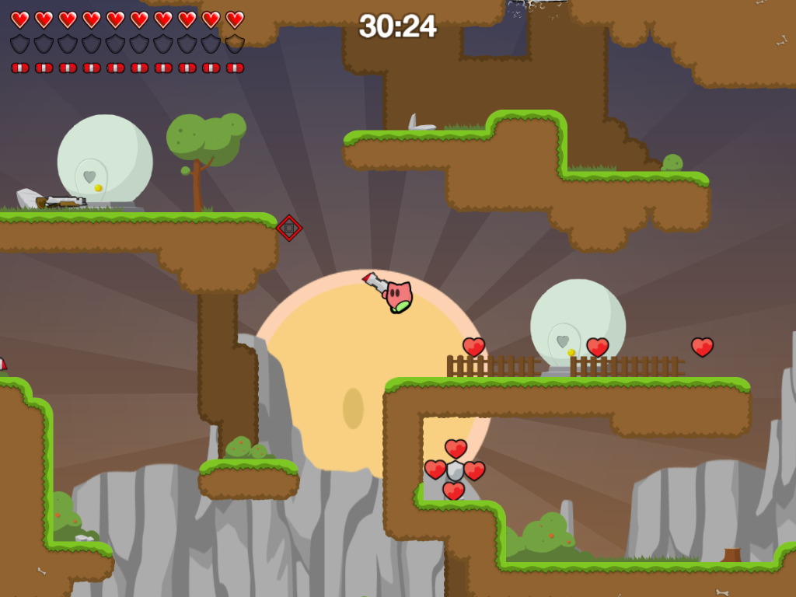
See, it looks so simple.
Teeworlds Download
Also, sorry if this sucks at first. It's the first time I've really reccommended something to someone..have fun!
#429764 7 2008-04-19T06:22:27Z Sgt. Poptarts I like Pepsi. Coca-Cola only burns my mouth and on the way down my throat.
#429958 2 2008-04-19T20:26:07Z Sgt. Poptarts Also, as a tip, to make the game seem more appealing, add some pictures to go along with your post, as, Presentation is always a good thing to start off with.
#430047 9 2008-04-20T01:41:18Z Sgt. Poptarts I don't think two threads are needed for this, though. We can just post suggestions in the original thread
If we did that, then the original thread would be filled with chaos and whatnot. Not to mention lots of spam. At least this way, we can keep it much more organized and have suggestions here, and weekly picks in the other topic.
#430675 13 2008-04-22T01:40:42Z Sgt. Poptarts I have 2630, but that's only because I'm waiting till there's a game I can actually ENJOY for more than a week. So far, I'm waiting for Grand Theft Auto 4.
#430961 5 2008-04-23T01:20:19Z Sgt. Poptarts Also, as a side note. In order for others to see the skin in game, I believe you all have to have the skin named the same for everyone (sorry if that didn't make much sense). For instance, if I have a skin called Whatislove.png, then you all have to name the skin Whatislove.png.
#431224 24 2008-04-24T02:44:52Z Sgt. Poptarts I'll be 17 in May.
#431801 16 2008-04-26T23:39:58Z Sgt. Poptarts This week's game is a slightly different genre. It's a FPS, but in some ways, not a FPS. It's more of an adventure really, where one man must live alone on an island while adapting to his current surroundings. You'll face Lions, which will eat you if threatened, Monkey, which will take your precious supplies, and even, the dreaded raptors. Now, if your thinking this sounds kind of hard, don't fret..for if you can think it, you can make it. Here's an example of what you can do within the game: You look at the ground and find a stick, and a stone, if you press the "combine" button, you will end up with a hammer, which will allow you to make things such as tents. Of course, I'm guessing you're getting tired of reading my repetitive description.
Stranded
Features:
fast 3D engine with low system requirements due to Blitz 3D
huge islands
countless animals and plants
more than 100 (!) different items with various qualities
a lot of distinctive buildings and vehicles
a huge arsenal of different tools, weapons and ammunitions
seamless day and night alternation
dynamic lighting effects, particles, fog, reflecting water and blur effects
a big adventure with ingame sequences and story elements
many varied maps
map editor with numerous options
extremely comprehensive scripting system for interactive maps
completely "modable" by changing scripts and definitions
First, some screenshots (They are in german, but there is also an english version, so don't worry.)
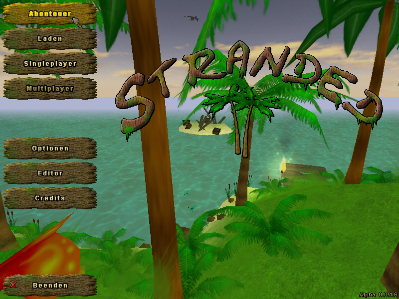
The title screen.
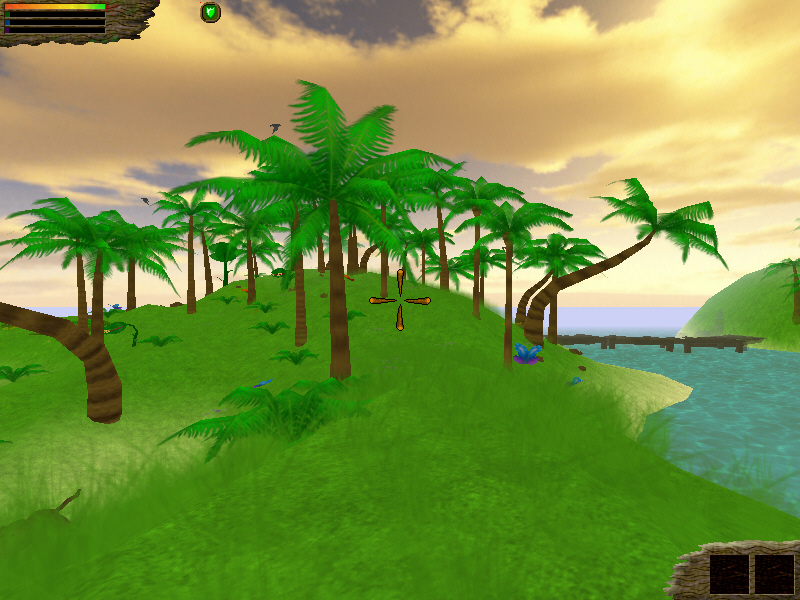
Some...trees.
Ok, nevermind, the screenshots suck. But the game is SURE to run on even the crappiest computers to date.

#432221 1275 2008-04-28T16:41:06Z Sgt. Poptarts 
As you can see, there is a dock at the bottom. It's usually hidden, but I brought it out to show you all that I DO have some form of icon on my desktop.
#432426 21 2008-04-29T10:28:32Z Sgt. Poptarts Also, by the way, The torch will go out if it rains, and, rinning into the water isn't always the safest thing to do. You do realize thee's sharks..right?
#20150 1 2008-05-03T18:41:48Z Sgt. Poptarts Ok, From May 2nd to the 4th Team Fortress 2 is going to be free. Now, I know it's the third right now, but maybe, you can get it if you try. and yes, this is legal. The only reason for me making this topic, though, is to tell those who don't know of this offer.
Team Fortress 2#433758 24 2008-05-04T14:41:44Z Sgt. Poptarts This might be a bit late, but, I was thinking over what game to choose. The only problem, because I don't want to type anything because I'm lazy, I'll just quote the first post from the topic (That amazingly, I made)
Echoes. Do you like Asteroids? Do you like Flashy colors? Then you will probably like this.
Here is what it looks like. It looks quite nice.
Mass Carnage after a few levels of gameplay.
There are even challenges you can work for.
Another cool feature in this game is the ability to customize your Playlist, it only allows 50 songs, but you really don't need huge amounts of music to enjoy this.
#434050 881 2008-05-06T00:28:45Z Sgt. Poptarts #434872 32 2008-05-10T01:26:58Z Sgt. Poptarts I'm adding this one is a little early. This one is...a little different. It's not exactly freeware, it's a demo, So why am I putting it here? I'm putting it here as, if someone has the registered version (I have it, Luminaflare has it) then you can play the full game so long as you are in our servers.Yes ,this IS an online game, and a VERY good one at that.. This game is actually really good, you just have to like this sort of game. It's a 2D side-scrolling builder type game. Now, all this chit chat, and you still don't know what it is..makes you mad doesn't it?
Clonk Rage.
As accustomed:
hectic game play and loads of fun with hardy Clonks in huge worlds
industrious settling and economic advancement or intense battles by means of all available weapons and tactics
up to four players on one computer
yet more players via local networks or the internet
tons of scenarios with different climate and weather conditions and adventuresome missions
keyboard, mouse, or game pad control, or combinations thereof
unlimited editing capabilities through the integrated developer mode
New in Clonk Rage:
all new graphical fullscreen menus
new Jump'n'Run control mode: clonks will stop when movement keys are released (optional)
completely reworked network code allows smoothly running internet games
new master server and league evaluation
integrated IRC chat client, available all throughout the game
genuinely cross-platform: native ports for Windows, Linux, and Intel-Mac
loads of extensions to the already powerful scripting language
numerous small fixes and improvements to the existing game content
Clonk games are fun. Play Endeavour for the tutorials. Use Rage to play the game properly.
Short because I have typed out a long post for this twice and both times Opera closed somehow (By annoying keyshortcuts or whatever)
Description ripped from site:
Clonk is an entertaining, action-packed game of strategy, tactics, and skill. It can be played by a single player, with up to four players on one computer, or any number of players in local networks or via internet.
The game is played in realtime rounds in which each player controls his hardy crew of clonks in order to either mine resources and build up a base or eliminate the opponent's crew.
Run-time generated or predefined landscapes feature everything from hills, mountains, lakes, deserts, arctic wastelands to volcanic rocks, islands floating in mid-air or suboceanic terrain. This guarantees a neverending variety of scenarios.
Experience changing weather conditions with rain, snow, thunderstorms, as well as tectonics and hectic animal activity. A unique physics engine allows rain, flowing water, crumbling earth, snow drifts, lakes of lava...
Build new structures using materials you have created in complex production chains. Extend your base and prepare for battle by developing new weapons and tactics.
There is an almost unlimited number of options to customize the game. Experienced players can create their own scenarios and set individual game goals to create new mission objectives.
More advanced players can go even further. Clonk features a powerful and very flexible scripting language with full technical documentation. Want even more? For programmers the full source code of the current official version is publicly available.
Clonk is a strongly community based game. There are thousands of players in Germany and around the world who meet, play, edit, develop, and extend this game every day and have filled the 12-year-history of this project with unceasing activity.
Clonk is international: through community contributions, the language base of the game (more than 20,000 words) has been translated into ten different languages.
The most up-to-date version of Clonk is shareware. You can test the game for free. Extended scenarios or editing features are available with a registration.
Previous versions of the game are freeware and offer a convenient entry (and months of playing fun) at no cost.
As you can see, Luminaflare's post was rather boring back in the day...let me spice it up with a few pictures.

This is one of the melees, it has sharks, catapults, and...other stuff, and no, that's not the highest resolution.

Some guy building a city in a volcano...silly clonk, it could erupt.

Ooh, a castle..too bad it's going to be utterly annihilated from underneath.
there you have it. Clonk Rage. Also, as a side note, before you play this one, you minght want to try Clonk Endeavour, just to get a hang of the style. Also, trust me, this game is really fun, you just need patience. Also, yes, this game is German, but it's been completely translated by some U.S. guy, so it's ledgible.
Ok..turns out they don't like image linking... Jerks.
Anyway.
Clonk Rage just, click that boring link.. sorry for there not being any pictures.
#434873 17 2008-05-10T01:34:48Z Sgt. Poptarts Animator, what are you naming these skins? You have to tell us, or else we wont be able to see people using them while in game.
#434981 1297 2008-05-10T16:04:44Z Sgt. Poptarts #435067 35 2008-05-10T21:00:21Z Sgt. Poptarts There are pictures, but I can't hotlink them. Also, the controls on Clonk Rage are about a thousand times better than Clonk Endeavour's. The only reason to play that one is to get the hang of the game's style.
#435250 1301 2008-05-11T16:29:45Z Sgt. Poptarts Erm, yeah, I got bored of that last one. This one is more, educational.

#435611 18 2008-05-12T21:41:01Z Sgt. Poptarts What do you mean not one person had voted for N+? It has 3 votes, that obviously means that someone voted. Even I voted for N+.
#436897 11 2008-05-17T15:25:12Z Sgt. Poptarts And he didn't make this topic because he thinks straight out that he's better than me. I actually wanted to see what others thought.
Lenny, let me tell you something. I don't think I'm better than you at all. Why you are making up rumors is beyond me. I think we are all equal, but if you have to lie to get people to like you, then you have some SERIOUS problems.
Also, I'm really sorry I let things get to me, honestly I am. It's just...yeah, I don't have anything to back this up. But, I promise I'll take stuff lightly.
#437066 1801 2008-05-18T04:04:49Z Sgt. Poptarts Woo! I'm 17 today!
#437227 1807 2008-05-18T15:19:28Z Sgt. Poptarts Yes, I do have that picture.
#437304 39 2008-05-18T22:57:26Z Sgt. Poptarts I might submit one tonight, I might not. Today IS my birthday after all, and I am trying to reinstall Windows XP, but, lost the CD. I'll try to post once soon though.
#438396 4 2008-05-22T19:29:17Z Sgt. Poptarts Name her Yourichi.
#438463 31 2008-05-23T00:39:03Z Sgt. Poptarts Doing my wife.
Erm...I mean. Trying to live life in a dead-end job, with a wife who only wants children, after we already have 4. Soon, I'll go into a deep depression, divorce my wife, and live a life of eternal misery... Better yet, I think I'll get a Puppy.
#438476 2 2008-05-23T01:46:14Z Sgt. Poptarts You could've just said this in the original Battlefield Heroes thread, there wasn't any reason to make this one. Also, I'll probably start a clan with Luminaflare and people like that.
#439705 14 2008-05-27T15:50:13Z Sgt. Poptarts This isn't the entire list, but it's some that I like.
Fullmetal Alchemist
Inuyasha
S-Cry-Ed
Blue Gender
The Melancholy of Haruhi Suzumiya
Tenchi Muyo
Ruroni Kenshin
Blood+
Trigun
Bleach
One Piece
Ghost in the Shell
Cowboy Bebop
Outlaw Star
FLCL
Dragonball Z
Chobits
Samuari Champloo
Shin Chan
Detective Conan
Naruto
Bokusatsu Tenshi Dokuro-chan
Howl's Moving Castle
Spirited Away
Wolf's Rain
Paranoia Agent
Sailor Moon
Death Note
Code Geass
Yu Yu hakusho
Eureka 7
By the way, these are my favorite animes. So what if I like more than 20 different things..
#439908 4 2008-05-28T08:41:55Z Sgt. Poptarts English and German
#439918 8 2008-05-28T09:22:16Z Sgt. Poptarts The Hunt.
#440021 43 2008-05-28T20:08:19Z Sgt. Poptarts No. I told him he could post that. I couldn't think of anything to write, so I had him do it.
#440110 1315 2008-05-29T00:40:11Z Sgt. Poptarts 
My old desktop and dock broke. so I'm using a tabbed dock and wallpaper instead.
#440276 4 2008-05-29T18:33:58Z Sgt. Poptarts I see n!, which doesn't relate to N whatsoever, for, that is a factorial, while this is a game.
#440337 4 2008-05-29T22:20:30Z Sgt. Poptarts It also depends on my router's mood. Right, now, it's mood is 10 MB/s.
#440341 1317 2008-05-29T22:34:50Z Sgt. Poptarts "Tabbed dock" AKA Quick Launch.
I didn't mean that. Look at the top middle of the screen.
#440663 20 2008-05-31T02:30:11Z Sgt. Poptarts Diablo 2: Lord Of Destruction - Median 2008. I'm not playing Median XL, though, as I don't want to lose y progress.
#441136 12 2008-06-01T22:03:01Z Sgt. Poptarts I don't use Firefox, in fact, I quite dislike it. But i'll gladly download it for the sake of it hopefully being a record.
#20399 1 2008-06-02T03:39:37Z Sgt. Poptarts So, I was searching the forum and I noticed gloomp's signature. Now, I MUST know, what do you think it is?
#441258 1322 2008-06-02T07:06:10Z Sgt. Poptarts #441486 31 2008-06-03T06:06:44Z Sgt. Poptarts Diablo 2, Median 2008.
#441714 8 2008-06-04T01:24:04Z Sgt. Poptarts I've been out for 4 weeks.
#442108 2749 2008-06-05T04:59:00Z Sgt. Poptarts 
Zoinks!
#442734 6 2008-06-07T17:24:16Z Sgt. Poptarts Vanilla beats Chocolate.
#20482 1 2008-06-08T22:52:15Z Sgt. Poptarts Yeah, I saw the thread asking what your playing style is in N. But what about other games? For me, my gaming style, mostly in FPSs, is a mixture between an assassain, and a run and gun type thing. Then, if I have to, I will become your worst nightmare by using my favorite tactic...Kamikaze.
#443174 16 2008-06-09T04:41:08Z Sgt. Poptarts Move Your Dead Bones. This one is catchy.
Youth of the nation. A favorite
Stop The Rock One of my many favorites
500 miles Instant Classic..
Ass Up Not a music video...but a good song.
Yatta! Despite how strange this one is.. its' a pretty good song.
Ready to Die I couldn't find a Music Video, awesome song though.
#443266 27 2008-06-09T16:32:14Z Sgt. Poptarts The game wont work for me no matter what I do. I'm having the same problem as maestro too, as, the character wont appear when I load the game, and pressing "P" doesn't help.
#443268 12 2008-06-09T16:36:42Z Sgt. Poptarts A mixture between Dare Devil and Kamikaze.
#443288 7 2008-06-09T18:28:30Z Sgt. Poptarts Good lord, stop making my ears bleed.
#443344 22 2008-06-09T21:52:13Z Sgt. Poptarts 94F...god It's hot.
#444173 240 2008-06-13T07:43:59Z Sgt. Poptarts Not eaxctly a movie, but still.
Snake eats Hippo.
#444587 2759 2008-06-14T22:11:00Z Sgt. Poptarts 
Nose piercing! With a curly fry!
#444620 2761 2008-06-15T00:25:10Z Sgt. Poptarts Why yes...yes I most certainly did.
#445529 45 2008-06-17T04:25:24Z Sgt. Poptarts Hello everyone, sorry I haven't been posting any games lately. I have a reason though, see, I don't want to put a game up each weekend as I want to make sure you all like it. So, I'll updaet this every so often... sometimes alot, other times, a little. Anyway, new game, this one is awesome..
Ok, this game is like Burning Sand and WX Sand..only, No sand. It's physics based, and, alas, can't run on every machine. I don't have any pictures (The site is completely in Japanese, and I don't want to try to find any..laziness..), but take it from me, this game is awesome. If you have an trouble with the game, such as an error that might appear, please say so in this thread, and I believe I can diagnose it. Also, I uploaded the game onto Filefront, so you'll see some of my creations, take note that I didn't make the creations that are in the demo folder. Post some of your contraptions.
OE-Cake#446164 21 2008-06-19T00:47:13Z Sgt. Poptarts Nope.
#446426 3 2008-06-19T18:11:42Z Sgt. Poptarts Sure Chase, don't link them or anything..
Anyway, since he didn't provide you with a link to the download, I will.
Team Fortress 2 Download#446676 4 2008-06-20T07:35:24Z Sgt. Poptarts #447211 15 2008-06-21T22:11:33Z Sgt. Poptarts That was, amazing, to say the least. This video could encourage today's youth to READ A BOOK READ A BOOK READ A MUTHA FUCKIN' BOOK. But yeah, awesome.
#448934 2 2008-06-26T22:42:29Z Sgt. Poptarts YES! Oh god yes! I've played it and beat it numerous times. The game is truely a work of art..too bad I can't find it. But hey, I can find my gameboy, and the batteries still work.
#449151 3 2008-06-27T20:36:13Z Sgt. Poptarts I play, but, I'm in Windia and Bera. Right now, though, I have a level 22 Archer in Windia, and I'd rather not change servers. By the way, if you ARE in Windia, add Polarina. I'm normally in Channel 6.
#449285 49 2008-06-28T07:13:11Z Sgt. Poptarts New game, and, this one is bigger, badder, and MUCH better.
Celestial Impact
(Note, these were taken from the site, as, they provide better descriptions.)
-About-
Celestial Impact is a team based multiplayer first person shooter (FPS) taking place on various asteroids floating in space. But Celestial Impact is not your average team based multiplayer FPS. What makes this FPS really special is that the landscape is fully deformable in all directions, each impact on the landscape affecting it differently depending on the weapon used. But it is not limited to destruction; the players also have the ability to add terrain to the landscape in the middle of combat using a special tool called Dirtgun. With the Dirtgun, players can add or remove terrain during combat as they see fit, simply by aiming and firing the dirtgun. Depending on the chosen action, this will either add or remove a chunk of dirt from the landscape. So as the teams are battling, the landscape receives vast changes opening up for various tactical approaches each team can use.
-Maps-
Each landscape (map) is a sphere-like asteroid with gravity pointing towards the center of the asteroid. This means that players can take round trips around the asteroid assaulting the enemy from any direction. Since the landscape is fully destructible, players could even approach from underneath by digging tunnels through the asteroid.
-Game Modes-
Celestial Impact features several game modes such as a classic CTF (Capture The Crystal in this case, CTC), a regular deathmatch mode (DM) and Crystal Rounds (CR). Crystal Rounds will prompt the players to defend one of their team-members alternatively assault one of the opposing team-members depending on which team currently has the crystal in their possession. Build and dig your way around the landscape in various strategic ways as you seek out and steal the crystal from your opponents.
-Weapons and Tools-
Apart from the regular weapon arsenal (a minigun, a shotgun, a grenade launcher and a high-energy precision weapon) each player is always equipped with the Dirtgun. This tool has two modes. The first is the dig-mode. When using dig-mode the Dirtgun removes large chunks of terrain from the landscape in front of the player making it excellent for digging tunnels or breaking barriers. The second mode is the build-mode. When using build-mode the Dirtgun adds terrain in the form of a pre-selected shape in front of the player. The shapes could be a simple cube, a part of a bridge or even a defensive wall. The players are also always equipped with a melee weapon in form of a large portable drill-saw combination.
--------Pictures--------
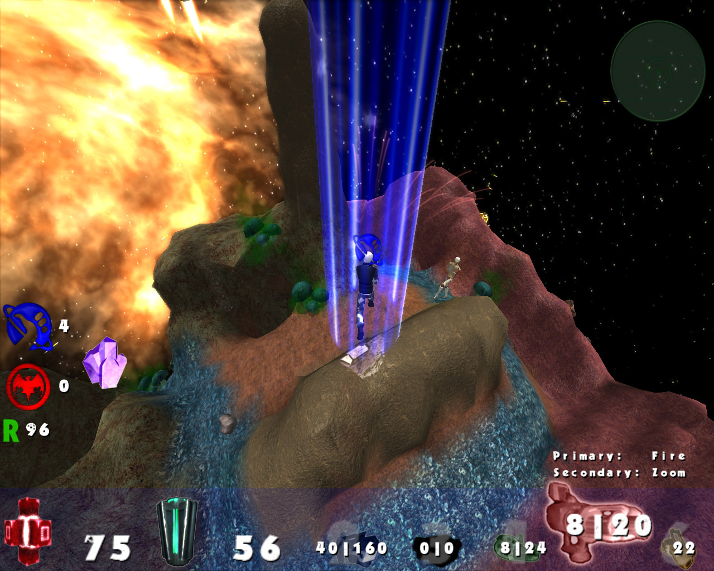
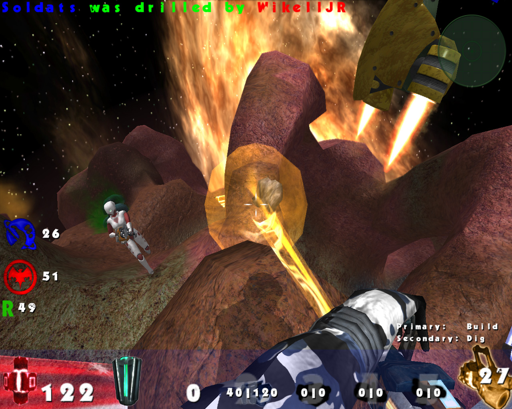
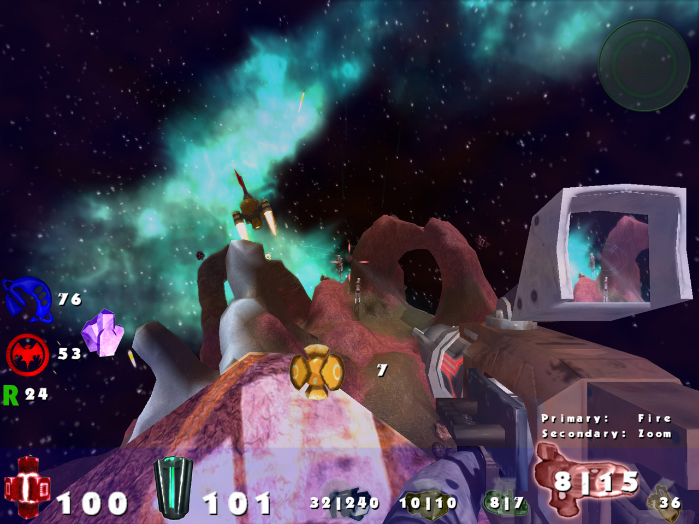
--------Requirements--------
Minimum System Requirements
* Windows 2000/XP/Vista
* 2 GHz CPU (Pentium 4 or equivalent)
* 512 MB RAM
* Graphics card with 128 MB of RAM from GeForce 6000 series or equivalent (at least support for OpenGL 2.0)
Recommended System Requirements
* Windows 2000/XP/Vista
* 3 GHz CPU (Pentium 4 or equivalent)
* 1024 MB RAM
* Graphics card with 256 MB of RAM from GeForce 7000 series or equivalent
--------Download--------
Celestial Impact#449406 9 2008-06-28T21:25:55Z Sgt. Poptarts D3 is going to rock everyone's face, and, the fact that my monitor is a 32" HD TV/Monitor, it's going to make it look nice. I hope my computer can run it though.
#449417 26 2008-06-28T21:53:23Z Sgt. Poptarts Personally, I don't do drugs, period, but I could care less if Weed is illegal or not.
#20660 1 2008-06-28T22:36:01Z Sgt. Poptarts have you ever wanted to browse the images over the internet without looking through countless pages? Then this is the program for you.. Heck, it even works for YouTube and Amazon. Sorry for the crap description.
PicLens#451528 57 2008-07-08T01:19:30Z Sgt. Poptarts Hello everyone, don't expect a new game for about 3-4 weeks. I'm at my dad's house, and I only have my laptop. Also, to everyone who is whining about Celestial Impact, all of the other games in this topic are very easy on even an older computer, except maybe Stranded 2, and even then, that game should be able to run on an older computer with all the settings set to the lowest. Now, I'll THINK about finding games that can work on your computers from now on. Chances are, though, I wont find one, so I guess you're all just...out of luck. I don't want to be a douche, but come on. Celestial impact really doesn't take that much to play, just turn all the settings down, and it should be ok. Anyway, as I said before, no moer games for about 3-4 weeks.
#20793 1 2008-07-14T07:53:37Z Sgt. Poptarts Hello everyone, sorry I'm making this topic, and, I'm probably asking a silly question anyway. Can someone of authority in the channel please remove TS's ops powers? Why? Because, he keeps banning me for staying up past the time he wants me to go to bed. He swears that I'm being a jerk to him, but he's constantly provoking me to yell at him. The first time, I was banned for a semi good/bad reason, I was being a jerk, but, I'm normally a jerk, and everyone takes it lightly. He only banned me because I was sleepy, and within the rules of IRC none of them state that an OP has the right to kickban a sleepy user. The second time this happened, which was literally about 20 minutes ago from this post, he noticed that I was up late, and started to nag me to go to bed. I tried to reason with him, but, and sorry to be rude, he is quite thick.
Sorry to bug you all, delete this is you think this is complete and udder crap.
Sincerely.
Sgt. Poptarts
#452839 5 2008-07-14T18:04:26Z Sgt. Poptarts I use beautiful. It seems nicer to say to women.
#452841 21 2008-07-14T18:12:09Z Sgt. Poptarts Skulltag
XenoMS
Metanet
One other that is against the rules to talk about here.
4.
#452875 6 2008-07-14T21:52:51Z Sgt. Poptarts Erm, I say that TS should just be nicer to you. He is probably only joking anyway, as we usually do on IRC.
Yeah, no. He wasn't joking, he honestly said that I needed sleep. In any case, he was demoted today.
#452971 6 2008-07-15T06:40:33Z Sgt. Poptarts I accept! Also, I'm good with pixelart type stuff. Or, I use paint to make them, but they come out decent. I'll upload some, actually.

A Simple Ship.

Debris.. of some sort.

A Beetle.. of some sort.
So yeah.. I might be able to help.. unless that's not what you're looking for.
#453794 29 2008-07-19T08:36:43Z Sgt. Poptarts Make me a Lycanthrope..Yes, a Lycanthrope.
#453939 38 2008-07-20T00:50:52Z Sgt. Poptarts Actually, if you want an idea of what I'd probably looks like. Here's an image taken from Hidden-Street (Yes, it's from MapleStory)

#454424 10 2008-07-22T18:35:39Z Sgt. Poptarts 3 PCs, 2 Laptops, 2 Xbox 360s, 3 Game Cubes, 2 Nintendo DSs, 3 Super Nintendo, 2 Sega Dreamcasts, 2 Sega Genesis, 1 Game Boy Pocket, 2 Game Boy Advances, 2 PS2s, 1 Wii, 1 PS3, 1 PSP, 2 PS1, 1 Xbox, And.. I can't remember the rest. Anyway, I'm a gamer, can you tell?
#455175 33 2008-07-26T05:03:48Z Sgt. Poptarts I saw the movie yesterday, and it was in-freaking-credible. I really did love the Pencil Trick though, and, I should show it to all my friends. Anyway, there were some scenes though that kind of creeped mput though, like, for instance, and I don't think this is spoiler..but I'll put it in one anyway.
Spoiler: Spoil me this
When that fat guy is in the prison, standing there repeating "My insides hurt!." When all along the Joker surgically implanted a Cell Phone bomb into his intestines, yeah, that made me feel strange. The other part, when you saw two face's burned face, that was kind of nasty looking.
#455294 2841 2008-07-27T02:37:38Z Sgt. Poptarts #456171 12 2008-07-30T15:34:50Z Sgt. Poptarts I vote N+, it doesn't lag for me, and the Multiplayer is was too fun.
#457221 8 2008-08-01T18:25:17Z Sgt. Poptarts Sharp pain. I hate them so much considering I have muscle spasms all the time.
#457230 4 2008-08-01T18:28:46Z Sgt. Poptarts My earliest map is number 10108...and it sucks.
#457240 28 2008-08-01T18:34:26Z Sgt. Poptarts I've only beaten one column, and even then, I believe I'll always use Pink.
#457246 2847 2008-08-01T18:49:01Z Sgt. Poptarts 
I honestly don't see the Resemblance between XiAH and I, but whatever. Oh, by the way, if you're wondering what those dog tags say. They contain two of my nicknames online. Snuggletummy, and Sgt. Poptarts.
#457629 3 2008-08-02T17:48:38Z Sgt. Poptarts I have one for you that may, ruin your dreams of ever making love. Anyway, Watch Teeth.
#457699 18 2008-08-03T01:28:22Z Sgt. Poptarts I usually do unless I mispell something and don't catch it.
#457795 63 2008-08-03T06:47:44Z Sgt. Poptarts Update. Rather then putting stuff here, I now have a blog that'll provide you all with freeware games (possibly). Although we use it for everything, Freeware gamers, news, freeware programs, random tidbits on the web. Actually, there's already a few games there, from an awesome mech game that Impulse found, to Super Mario War, posted by GamingWolf. Another thing is that you too can contribute to it. All you need to do is contact one of the leaders of it, which right now, are Luminaflare, Faemir, and I.
Doomsday#458066 65 2008-08-04T06:14:11Z Sgt. Poptarts Hmm, I'll just post this here.
Just to make my life easier.. I'm going to paste all of this from my Blog.
Giant Robots. One-on-one beam saber action. Macross Missile Massacre ™. The only thing that would make this game better would be online multi-player capability. Oh yeah, it has that too.
This free Gundam clone offers surprisingly addicting gameplay and lets you indulge that fantasy you've always had ever since you saw your first Gundam anime. 3-D arenas pitting teams of mecha against each other makes the gameplay just like the Gundam Arcade game in Japan, which is similar to Armored Core and Virtual On, but you don't have to blow 100 yen each time you want to play.
Produced by Y. Kamada (YSK), who has given us his approval to make this installer, this game has the following ways of giving you your Gundam-piloting fix:
* Survival Mode: Fight until you drop.
* Practice Mode: Go ahead, bully the defenseless computer!
* Team Battle Mode: Ever wonder what it was like to pit one army of mecha against another?
* Blitz Tactics Mode: One army versus another, but with giant warships too.
* Online Competition Mode: Because destroying your friends is always more satisfying.
* Custom Pilot Creation: We all love the default cat pilots, but the game also includes the option of using your own avatar pic and different voiced effects, even your own! Don't worry, the cats aren't offended. Base Installer includes custom Ryuusoul pilot (my ego knows no bounds).
Bootfighter Windom XP SP-2
Who knows? maybe we can get some multiplayer games going... I REALLY want to fight someone. Also, I'd add pictures, but this is one of those games that looks so much better when in full motion, rather than a picture. Also, I'm sure what kind of system specs you need. Another thing is that sometimes the sound doesn't work, and, within the game, there's a readme that explains how to fix it. If that doesn't work, then just turn the sound off. Also, as a side note, the Team Battle and Blitz Tactics Modes might cause you some lag, this is because it pits 2 armies (yes, ARMIES) of mechs against each other. On a side note, there's a Youtube video on the site...check that out if you want. Anyway, sorry I keep going on and on, but, some of the mechs TRANSFORM...fun.
#21036 1 2008-08-06T00:24:34Z Sgt. Poptarts Quote: Other thread
Hmm, I'll just post this here.
Just to make my life easier.. I'm going to paste all of this from my Blog.
Giant Robots. One-on-one beam saber action. Macross Missile Massacre . The only thing that would make this game better would be online multi-player capability. Oh yeah, it has that too.
This free Gundam clone offers surprisingly addicting gameplay and lets you indulge that fantasy you've always had ever since you saw your first Gundam anime. 3-D arenas pitting teams of mecha against each other makes the gameplay just like the Gundam Arcade game in Japan, which is similar to Armored Core and Virtual On, but you don't have to blow 100 yen each time you want to play.
Produced by Y. Kamada (YSK), who has given us his approval to make this installer, this game has the following ways of giving you your Gundam-piloting fix:
* Survival Mode: Fight until you drop.
* Practice Mode: Go ahead, bully the defenseless computer!
* Team Battle Mode: Ever wonder what it was like to pit one army of mecha against another?
* Blitz Tactics Mode: One army versus another, but with giant warships too.
* Online Competition Mode: Because destroying your friends is always more satisfying.
* Custom Pilot Creation: We all love the default cat pilots, but the game also includes the option of using your own avatar pic and different voiced effects, even your own! Don't worry, the cats aren't offended. Base Installer includes custom Ryuusoul pilot (my ego knows no bounds).
Bootfighter Windom XP SP-2
Who knows? maybe we can get some multiplayer games going... I REALLY want to fight someone. Also, I'd add pictures, but this is one of those games that looks so much better when in full motion, rather than a picture. Also, I'm sure what kind of system specs you need. Another thing is that sometimes the sound doesn't work, and, within the game, there's a readme that explains how to fix it. If that doesn't work, then just turn the sound off. Also, as a side note, the Team Battle and Blitz Tactics Modes might cause you some lag, this is because it pits 2 armies (yes, ARMIES) of mechs against each other. On a side note, there's a Youtube video on the site...check that out if you want. Anyway, sorry I keep going on and on, but, some of the mechs TRANSFORM...fun.
I'm just putting this into another topic, as, this game really deserves it's own topic, the game is absolutly amazing. Still no pictures though. Maybe I'll add some, or have Luminaflare add some.
#458766 5 2008-08-06T18:27:16Z Sgt. Poptarts Although you didn't seem to attract people with that, all I want to say is, please, make a new topic or something if you want to talk about some other game. I've been trying to get people to play this game for such a long time, and I really don't want the to stray from the topic.
#460368 46 2008-08-13T20:32:38Z Sgt. Poptarts I've changed my name on Xbox Live due to the fact that my brother made a clan. I'm NovaSpartan18 nowadays. Also, I play Halo 3 most of the time, but, I also have gears of War, Call of Duty 4, Crackdown, Grand Theft Auto 4, and a few more that I can't name off the top of my head. In due time, though, I'm going to get Too Human and Fable 2, so..yeah.
#461272 7406 2008-08-17T08:46:46Z Sgt. Poptarts 8/8 bits, creative, eh?
#461352 62 2008-08-17T16:35:43Z Sgt. Poptarts Ripe.
#461529 1123 2008-08-17T22:27:43Z Sgt. Poptarts Ocremix: Doom 2 -
Red Waltz#461530 109 2008-08-17T22:32:14Z Sgt. Poptarts Chap
#463637 14 2008-08-22T16:16:36Z Sgt. Poptarts No, I'm not addicted to N whatsoever. I only use this forum for the Other games section, and to rain on people's parades when the time is right.
#464619 1405 2008-08-26T18:24:28Z Sgt. Poptarts 
My Object Dock thing busted... makes me so mad.
#465008 2 2008-08-28T05:51:10Z Sgt. Poptarts Hot! I LOVE YOU!
#465120 29 2008-08-28T17:38:35Z Sgt. Poptarts Too Human for the Xbox 360. Sure, it sucks that they cut the 4 player Co-Op, but it's a really good game, despite the crap reviews.
#465131 199 2008-08-28T18:21:01Z Sgt. Poptarts GamingWolf - Gdubs Captain Planet.
#465437 15 2008-08-29T17:10:03Z Sgt. Poptarts This one goes to 11.
#465513 27 2008-08-29T23:03:03Z Sgt. Poptarts Woo! Female parts!
I curse the person below me to eat and eat and eat till they explode.
#465579 5 2008-08-30T02:23:23Z Sgt. Poptarts I also have a spare one..just to let you know.
#465717 2 2008-08-30T19:44:02Z Sgt. Poptarts I vote for Kablizzy, hands down.
#466275 6 2008-09-01T18:48:30Z Sgt. Poptarts Super Mario theme for example. After playing Super Mario, the theme song was stuck in my head for over a month. I would sit in class and have it playing through my head over and over and over again. Do you know how much that annoyed me. I would tear myself apart because of that stupid theme song tune.
You don't like Mario music?
You are the Devil!
Agreed.
Seconded.
On a side note. If you think those are annoying, listen to this.
Oh No You Didn't.#466346 25 2008-09-02T00:27:07Z Sgt. Poptarts Firefox almost crashed, but my cock saved the day.
#466527 1830 2008-09-02T19:21:58Z Sgt. Poptarts 9/10 Luigi!
I realize my sig now sucks as I had to take away the Anime girl.
#466773 2 2008-09-03T17:50:29Z Sgt. Poptarts I decided to try it today, and man, I have to say that I like it more than Firefox. As, it takes up less CPU, which is awesome.
#466830 14 2008-09-03T21:14:25Z Sgt. Poptarts I was bottle fed. But, just to let you know, I'm fairly smart, I just don't apply myself in school, which is a bummer. I'm actually kind of angry, though, that now, people who were bottle fed are now flagged as stupid.
#467843 20 2008-09-07T10:50:08Z Sgt. Poptarts I'll add more to this later, but I need to go to sleep. Anyway, I like...everything I've created in Spore, which so far is 33.
#468111 17 2008-09-08T01:37:04Z Sgt. Poptarts I'm just going to put my Steam games here, as, I don't want to go find the camera, and I honestly have too many games to put in here. Although, most I've either forgotten, or have lost over the years. In any case, they date back to 1991.
Anyway, erm. Steam games.

#468383 4 2008-09-09T05:36:05Z Sgt. Poptarts Inverted on Consoles.
#468544 3 2008-09-09T23:43:19Z Sgt. Poptarts At first I was freaked out, but not anymore. It's impossible for the Collider to even make a black hole that'll kill us, as, it needs -ALOT- more power than what the machine is capable of. Also, with the strange matter, the stuff is rare enough as it is, so I seriously doubt anything bad'll happen. Plus, look at it this way, if it was ACTUALLY a threat towards the human race, I believe someone would've stopped it by now. Another thing is, I doubt they would have announced it to the public.
#468712 1429 2008-09-10T15:50:37Z Sgt. Poptarts 
If it's bad, which I don't think it is, then tell me.
#468718 35 2008-09-10T16:05:39Z Sgt. Poptarts 
Nope... haven't been looking at anything naughty. Also, if this violates any rules, which I don't think it does considering I didn't show anything, take it down if you must, although it'll sadden me.
#468806 46 2008-09-10T22:11:28Z Sgt. Poptarts I'm left handed, and, once, when I was little, one of my dads friends said that he should cut off my hand or something stupid like that... his thought I was the work of Satan. Whoever said I wasn't?
#469157 7601 2008-09-11T22:48:04Z Sgt. Poptarts 9/10 looks cool.
#21441 1 2008-09-12T19:55:10Z Sgt. Poptarts Are you bored? Tired of playing those mediocre racing games that don't seem to offer much? Well come on down to Snuggle's Car shop today, and ask if you can play Upshift Strikeracer.
Ok, that was stupid, anyway, Upshift Strikeracer is a racing game where you race..same old same old. The key difference, though, is that this one involves the usage of guns, which are mounted onto your cars. Along with that, you can gain levels, earn money, and pimp out your car. The game is currently in open beta though, so it has a few bugs here and there, but all in all, it's a very good game. Also, when buying weapons, you cant keep them permanently, but you can choose from 1 day, 1 week, or 30 days. The reason behind this is so you'll have to actually work to keep your weapons, rather than you buying it, keeping it forever, then getting bored. The game is also multiplayer. In fact, that's all it is. It has a time trial portion of it as well, The top monthly players money, not real money though, only the in game currency. Also, the creators of it made Flyff, so you know it's a fairly decent game.
Upshift Strikeracer#469488 10 2008-09-13T01:27:53Z Sgt. Poptarts I'm always going to love it that I got my Metanembership at 650 posts. In any case, I've happy for everything I've contributed here.
#470292 4 2008-09-15T19:38:36Z Sgt. Poptarts #21491 1 2008-09-16T15:04:27Z Sgt. Poptarts Ok, remember the Freeware game of the week topic? Of course you do. Anyway, my blog is now going to replace that topic. Basically, it may not be updated with Freeware games as much as I'd like it to. But, here's where you come in. If you want to contribute to it, then tell me, and I'll add you to the blog. After that's done, you can contribute your gaming knowledge to the Blog. Also, you don't have to contribute games. If you want, you can contribute music, programs, stuff like that.
Doomsday Blog#470605 18 2008-09-16T18:08:18Z Sgt. Poptarts Ok, This is my application. I probably wont put much as my attention span is pretty short, nevertheless, that doesn't mean that I'd suck at being a mod. Anyway, yeah, I'm here a majority of the time, I haven't been warned yet, and I've been here for... 3 - 4 years. Sure, I might be a jerk, but I would never abuse any of my powers, as, my mind would stop me. In all honesty, I've never had any mod experience, but I have ran my own forum. It went down after a few days of inactivity, but I still moderated some. I'm pretty aware of most of the functions in the Control panel as well, so don't expect me to mess up anytime soon. Anyway, I do realize that this doesn't look as good as everyone else's applications, but I wanted to get to the point fast.
Thank you for your time.
-Sgt. Poptarts.
P.S. I might write more sooner or later.
#471632 8 2008-09-19T15:57:51Z Sgt. Poptarts I use up. Nuff said.
#472118 10 2008-09-21T14:21:02Z Sgt. Poptarts Nope. Nowadays, I sit on my PC chatting with Luminaflare and just playing games all day long.
#472121 2004 2008-09-21T14:22:55Z Sgt. Poptarts Happy Birthday Luminaflare! Remember though, that I don't owe you a birthday present, as, I bought you those 20 games. Sure, you already know that, but I wanted to spread the news that I'm cool enough to buy my friends things
.
#472123 31 2008-09-21T14:24:38Z Sgt. Poptarts I love them, as, I love things that look shiny and sleek.
#472211 6 2008-09-21T19:33:51Z Sgt. Poptarts Hello people. If my blog doesn't get updated with games by me for a bit, its because I'm unusually sick, and I need to sleep. Luckily, though, I have backup.
#472640 21 2008-09-23T03:47:59Z Sgt. Poptarts Maybe the guy was a ninja? Or better yet, Splinter Cell? In any case, yes, that is disgusting, and she should've said something.
#472656 55 2008-09-23T04:15:06Z Sgt. Poptarts #472659 12 2008-09-23T04:20:02Z Sgt. Poptarts I made a level for N+ and it made it into the game on Xbox Live Arcade. I can play practically any game, and become a god, one exception is N. I have an ear for music, I can't READ music, but if I hear it, I can teach myself to play it. I'll add more later.
#472863 2 2008-09-24T00:57:34Z Sgt. Poptarts Holy Crap, you're back! Anyway, Although this is images, should this be in Other games? In any case, here's one for you.

My favorite so far, Yes, that's me.
#472994 3009 2008-09-24T16:13:43Z Sgt. Poptarts 
I wasn't in the mood to fiddle with my Webcam. I HAVE a camera, but I don't know where it is.
#473389 6 2008-09-25T17:55:47Z Sgt. Poptarts I post them to the vertical middle right hold the mayo. Anyway, yes, the right, as, it looks silly on the left.
#473653 5 2008-09-26T15:38:50Z Sgt. Poptarts Oh, cousin of mine. If you're talking about games. The please, put the topics in Other Games. Also, Search first, as well, as, the people here get pretty mad when people don't search, and I wouldn't want you banned again.
In any case, Guitar Hero.
#475304 3 2009-03-10T08:42:55Z Sgt. Poptarts I'm glad it's coming back up sooner or later.


![[img=http://img381.imageshack.us/img381/5062/123210so.th.jpg][/img]](http://img381.imageshack.us/my.php?image=123210so.jpg){kind=link}